DONALD A. NEUMANN, PT, PhD, FAPTA
Đi bộ và chạy đòi hỏi bàn chân phải đủ dẻo dai để hấp thụ lực va chạm cũng như để thích nghi với vô số cấu hình không gian giữa bàn chân và mặt đất. Bên cạnh đó, đi bộ và chạy còn đòi hỏi bàn chân phải tương đối cứng vững để truyền tải các lực đẩy có thể rất lớn. Bàn chân khỏe mạnh đáp ứng được những yêu cầu tưởng chừng mâu thuẫn là hấp thụ xung lực, dẻo dai và sức mạnh, thông qua sự tương tác chức năng và cấu trúc phức tạp giữa các khớp, mô liên kết và cơ. Mặc dù chưa được nhấn mạnh đầy đủ trong chương này, cảm giác bình thường của bàn chân khỏe mạnh cũng cung cấp những biện pháp bảo vệ và phản hồi quan trọng cho các cơ của chi dưới.
Chương này đặt nền tảng vững chắc cho việc hiểu biết về đánh giá và điều trị nhiều rối loạn ảnh hưởng đến cổ chân và bàn chân, trong đó nhiều rối loạn có liên quan về mặt sinh cơ học với vận động của toàn bộ chi dưới. Một số vấn đề sinh cơ học được đề cập trong chương này liên quan đặc biệt đến quá trình đi bộ và chạy — những chủ đề được trình bày chi tiết trong Chương 15 và 16. Nên tham khảo Hình 15.10 hoặc 15.11 làm nền tảng cho thuật ngữ được dùng xuyên suốt Chương 14 để mô tả các giai đoạn khác nhau của chu kỳ đi (chu kỳ dáng đi).
Hình 14.1 mô tả tổng quan về thuật ngữ dùng để chỉ các vùng của cổ chân và bàn chân. Thuật ngữ cổ chân chủ yếu chỉ khớp cổ chân (talocrural joint): sự khớp nối giữa xương chày, xương mác và xương sào. Thuật ngữ bàn chân chỉ tất cả các xương cổ chân và các khớp nằm ở xa cổ chân. Trong bàn chân có ba vùng, mỗi vùng gồm một nhóm xương và một hoặc nhiều khớp. Bàn chân sau (rearfoot/hindfoot) gồm xương sào, xương gót và khớp dưới sào (subtalar joint); bàn chân giữa (midfoot) gồm các xương cổ chân còn lại, bao gồm khớp ngang cổ chân và các khớp liên cổ chân xa nhỏ hơn; còn bàn chân trước (forefoot) gồm các xương đốt bàn chân và các xương ngón chân, bao gồm tất cả các khớp nằm ở xa và cả bản thân các khớp đốt bàn chân (tarsometatarsal joints). Với Hình 14.1 làm nền, Bảng 14.1 cung cấp bản tóm tắt về cách tổ chức các xương và khớp của cổ chân và bàn chân.
Các thuật ngữ trước và sau có ý nghĩa thông thường khi nói đến xương chày và xương mác (tức là chân). Tuy nhiên, khi mô tả cổ chân và bàn chân, các thuật ngữ này thường được dùng thay thế tương ứng cho xa và gần. Các thuật ngữ mu và lòng bàn chân mô tả mặt trên (mu) và mặt dưới của bàn chân, tương ứng.
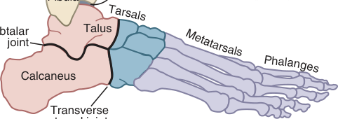
| Cổ chân (Ankle) | Bàn chân (Foot) | |
|---|---|---|
| Xương (Bones) | Xương chày (Tibia) Xương mác (Fibula) Xương sào (Talus) | Bàn chân sau: Xương gót và xương sào* (Rearfoot: Calcaneus and talus*) Bàn chân giữa: Xương thuyền, xương khối và các xương nêm (Midfoot: Navicular, cuboid, and cuneiforms) Bàn chân trước: Các xương đốt bàn chân và các xương ngón chân (Forefoot: Metatarsals and phalanges) |
| Khớp (Joints) | Khớp cổ chân (Talocrural joint) Khớp chày–mác gần (Proximal tibiofibular joint) Khớp chày–mác xa (Distal tibiofibular joint) | Bàn chân sau: Khớp dưới sào (Rearfoot: Subtalar joint) Bàn chân giữa: Khớp ngang cổ chân — sào–thuyền và gót–khối; khớp liên cổ chân xa — phức hợp nêm–thuyền, khối–thuyền, gian nêm và nêm–khối (Midfoot: Transverse tarsal joint: talonavicular and calcaneocuboid; distal intertarsal joint: cuneonavicular, cuboideonavicular, and intercuneiform and cuneocuboid complex) Bàn chân trước: Các khớp đốt bàn chân, gian đốt bàn chân, bàn chân–đốt ngón và liên đốt ngón (Forefoot: Tarsometatarsal, intermetatarsal, metatarsophalangeal, interphalangeal joints) |
* Xương sào được tính là một xương của cả cổ chân và bàn chân. (*Talus is included as a bone of the ankle and of the foot.)
Cổ chân và bàn chân có nhiều đặc điểm tương đồng về cấu trúc với cổ tay và bàn tay. Xương quay (radius) ở cẳng tay và xương chày ở chân đều khớp với một nhóm xương nhỏ — tương ứng là các xương cổ tay (carpus) và các xương cổ chân (tarsus). Khi xương mềm (pisiform) ở cổ tay được coi là một xương mè (sesamoid bone) — trái ngược với việc coi nó là một xương cổ tay riêng biệt — thì cổ tay và cổ chân đều có bảy xương. Kế hoạch giải phẫu tổng quát của các xương đốt bàn chân (metatarsus) và các xương đốt bàn tay (metacarpus), cũng như của các đốt ngón chân ở xa hơn, rất giống nhau. Một ngoại lệ đáng chú ý là ngón chân cái (great toe) ở bàn chân không phát triển về mặt chức năng bằng ngón tay cái (thumb) ở bàn tay.
Như đã mô tả trong Chương 12, các xương dài của chi dưới dần xoay trong (hoặc xoay về phía giữa) trong quá trình phát triển phôi thai. Hệ quả là ngón chân cái được định vị ở mặt trong của bàn chân, và mặt trên của bàn chân thực chất là mặt mu (dorsal surface) của nó. Hướng này tương tự như hướng của bàn tay khi cẳng tay được sấp hoàn toàn (Hình 14.2). Tư thế bàn chân áp đất (plantigrade) này cần thiết cho việc đi và đứng. Khi cẳng tay ở tư thế sấp, sự gập và duỗi cổ tay tương tự như gập lòng bàn chân và gập mu bàn chân của cổ chân, tương ứng.
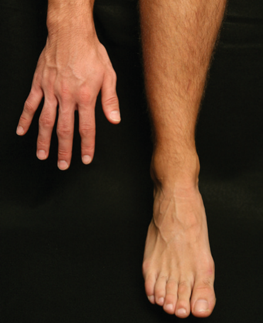
Xương mác (fibula) dài và mảnh nằm ở phía ngoài và song song với xương chày (Hình 14.3). Đầu xương mác có thể sờ thấy ngay phía ngoài mỏm cầu ngoài của xương chày. Thân mảnh của xương mác chỉ truyền khoảng 10% trọng lượng cơ thể qua chân; phần lớn trọng lượng được truyền qua xương chày dày hơn. Thân xương mác tiếp tục về phía xa để tạo thành mắt cá ngoài (lateral malleolus) sắc nhọn và dễ sờ thấy (từ gốc Latin malleus, nghĩa là "búa"). Mắt cá ngoài đóng vai trò như một ròng rọc cho các gân của cơ mác dài và ngắn (fibularis/peroneus longus and brevis). Trên mặt trong của mắt cá ngoài là mặt khớp cho xương sào (xem Hình 14.11 ở phần sau). Ở cổ chân đã lắp khớp, mặt khớp này tạo thành một phần của khớp cổ chân (Hình 14.3).
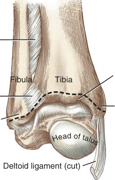
Đầu xa của xương chày rộng ra để tạo diện tích tiếp xúc lớn hơn cho việc truyền tải các tải trọng qua cổ chân. Ở mặt trong là mắt cá trong (medial malleolus) nổi bật. Trên mặt ngoài của mắt cá trong là mặt khớp cho xương sào (xem Hình 14.11 ở phần sau). Ở cổ chân đã lắp khớp, mặt khớp này tạo thành một phần nhỏ của khớp cổ chân. Ở mặt ngoài của đầu xa xương chày là khuyết mác (fibular notch), một chỗ lõm hình tam giác tiếp nhận đầu xa của xương mác tại khớp chày–mác xa (xem Hình 14.11 ở phần sau).
Ở người trưởng thành, đầu xa của xương chày bị xoay ngoài quanh trục dài của nó khoảng 20 hoặc 30 độ so với đầu gần. Sự xoay tự nhiên này thể hiện rõ qua tư thế hơi xoay ngoài của bàn chân khi đứng. Sự xoay này của cẳng chân được gọi là xoay chày ngoài (external/lateral tibial torsion), dựa trên hướng của đầu xa xương so với đầu gần.
Các đặc điểm giải phẫu xương của xương mác và đầu xa xương chày (Osteologic Features of the Fibula and Distal Tibia)
XƯƠNG MÁC (FIBULA)
ĐẦU XA XƯƠNG CHÀY (DISTAL TIBIA)
Các đặc điểm giải phẫu xương của các xương cổ chân (Osteologic Features of the Tarsal Bones)
XƯƠNG SÀO (TALUS)
XƯƠNG GÓT (CALCANEUS)
XƯƠNG THUYỀN (NAVICULAR)
CÁC XƯƠNG NÊM TRONG, GIỮA VÀ NGOÀI (MEDIAL, INTERMEDIATE, AND LATERAL CUNEIFORMS)
XƯƠNG KHỐI (CUBOID)
Bảy xương cổ chân được thể hiện dưới bốn góc nhìn khác nhau trong các Hình 14.4 đến 14.7.
Xương sào (talus) là xương nằm cao nhất của bàn chân. Mặt mu hay mặt ròng rọc (trochlear surface) của nó là một vòm tròn: lồi theo hướng trước–sau và hơi lõm theo hướng trong–ngoài (xem Hình 14.4 và 14.6). Sụn bao phủ mặt ròng rọc và các mặt kề cạnh, tạo ra các mặt khớp trơn láng cho khớp cổ chân. Đầu xương sào nổi bật nhô về phía trước và hơi về phía trong hướng tới xương thuyền (xem Hình 14.3). Ở người trưởng thành, trục dài của cổ xương sào đặt đầu của xương này khoảng 30 độ về phía trong so với mặt phẳng đứng dọc (sagittal plane). Ở trẻ nhỏ, đầu xương nhô về phía trong khoảng 40 đến 50 độ, một phần giải thích cho vẻ ngoài thường hơi lật trong (inverted) của bàn chân các em.
Hình 14.8 cho thấy ba mặt khớp trên mặt lòng (dưới) của xương sào. Các mặt trước và giữa hơi cong và thường liền nhau. Sụn khớp bao phủ các mặt này cũng bao phủ một phần đầu xương sào kề cạnh. Mặt sau hình bầu dục, lõm là mặt lớn nhất. Với tư cách là một nhóm chức năng, ba mặt này khớp với ba mặt trên mặt mu (trên) của xương gót, tạo thành khớp dưới sào (subtalar joint). Rãnh sào (talar sulcus) là một rãnh chạy xiên giữa các mặt trước–giữa và mặt sau.
Các củ ngoài và trong (lateral and medial tubercles) nằm trên mặt sau–trong của xương sào (xem Hình 14.4). Một rãnh tạo thành giữa các củ này đóng vai trò như một ròng rọc cho gân cơ gập ngón cái dài (flexor hallucis longus) (xem Hình 14.12 ở phần sau).
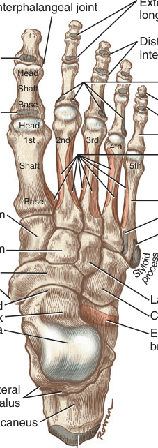
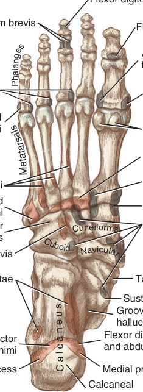
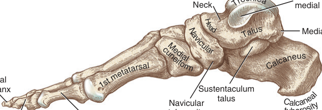
Xương gót (calcaneus), xương lớn nhất trong các xương cổ chân, rất phù hợp để tiếp nhận lực va chạm của gót chân khi đi bộ. Mỏm gót (calcaneal tuberosity) lớn và thô ráp tiếp nhận điểm bám của gân Achilles. Mặt lòng của mỏm gót có các mỏm ngoài và trong, đóng vai trò là điểm bám của nhiều cơ nội sinh và của mạc gan bàn chân sâu (deep plantar fascia) (xem Hình 14.5).
Xương gót khớp với các xương cổ chân khác trên mặt trước và mặt mu. Mặt trước tương đối nhỏ và cong của xương gót nối với xương khối tại khớp gót–khối (calcaneocuboid joint) (xem Hình 14.7). Mặt mu rộng hơn chứa ba mặt khớp nối với các mặt tương ứng trên xương sào (xem Hình 14.8). Các mặt trước và giữa tương đối nhỏ và gần phẳng. Mặt sau lớn và lồi, phù hợp với hình dạng lõm của mặt sau lớn tương tự trên xương sào. Giữa mặt sau và mặt trong là một rãnh xiên rộng gọi là rãnh gót (calcaneal sulcus). Nằm trong rãnh này là các điểm bám của nhiều dây chằng chắc khỏe gắn kết khớp dưới sào. Khi khớp dưới sào được lắp khớp, các rãnh của xương gót và xương sào tạo thành một ống trong khớp dưới sào, gọi là xoang cổ chân (tarsal sinus) (xem Hình 14.7).
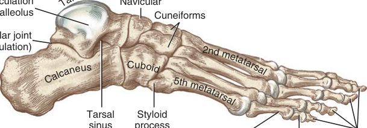
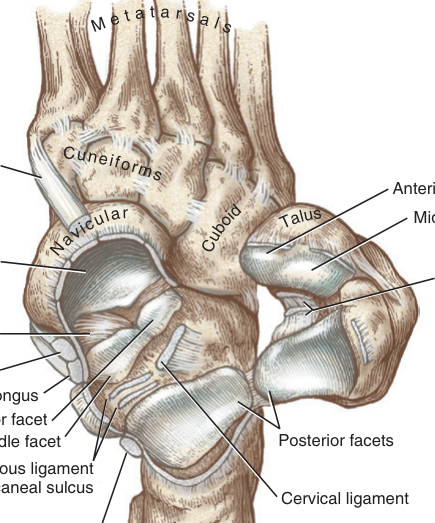
Mỏm đỡ sào (sustentaculum talus) nhô ra phía trong như một bệ nằm ngang từ mặt mu của xương gót (xem Hình 14.6). Mỏm đỡ sào nằm dưới và đỡ mặt giữa của xương sào. (Sustentaculum talus theo nghĩa đen là "một cái bệ dành cho xương sào".)
Xương thuyền (navicular) được đặt tên theo sự giống nhau của nó với một con thuyền (tức là gợi đến "hải quân" — navy). Mặt gần (lõm) của nó tiếp nhận đầu xương sào tại khớp sào–thuyền (talonavicular joint) (xem Hình 14.4). Mặt xa của xương thuyền có ba mặt tương đối phẳng khớp với ba xương nêm.
Mặt trong của xương thuyền có một mỏm (củ) nổi bật, có thể sờ thấy ở người trưởng thành tại vị trí cách khoảng 2,5 cm xuống dưới và về phía xa (trước) từ đầu mắt cá trong (xem Hình 14.6). Mỏm này là một trong số vài điểm bám xa của cơ chày sau (tibialis posterior).
Các xương nêm (cuneiform bones) (từ gốc Latin có nghĩa là "nêm") đóng vai trò như một miếng đệm giữa xương thuyền và đáy của ba xương đốt bàn chân trong (xem Hình 14.4). Các xương nêm góp phần tạo nên vòm ngang của bàn chân, giải thích một phần sự lồi ngang của mặt mu ở bàn chân giữa.
Như tên gọi của nó, xương khối (cuboid) có sáu mặt, trong đó ba mặt khớp với các xương cổ chân kề cạnh (xem Hình 14.4, 14.5 và 14.7). Mặt xa khớp với đáy của cả xương đốt bàn chân thứ tư lẫn thứ năm. Vì vậy, xương khối tương đồng với xương móc (hamate) ở cổ tay.
Toàn bộ mặt gần cong của xương khối khớp với xương gót (xem Hình 14.4). Mặt trong có một mặt khớp hình bầu dục để khớp với xương nêm ngoài và một mặt khớp nhỏ để khớp với xương thuyền. Một rãnh rõ rệt chạy ngang qua mặt lòng của xương khối, khi còn sống được gân của cơ mác dài chiếm giữ (xem Hình 14.5).
Một tia của bàn chân trước được định nghĩa về mặt chức năng là một xương đốt bàn chân cùng với nhóm đốt ngón chân tương ứng.
Năm xương đốt bàn chân (metatarsal bones) nối hàng xa của các xương cổ chân với các đốt ngón chân gần (xem Hình 14.4). Các xương đốt bàn chân được đánh số từ 1 đến 5, bắt đầu từ mặt trong. Xương đốt bàn chân thứ nhất ngắn nhất và dày nhất, còn xương thứ hai thường dài nhất. Xương thứ hai và thường cả xương thứ ba được gắn cứng chắc nhất vào hàng xa của các xương cổ chân. Những đặc điểm hình thái này nói chung phản ánh các lực lớn hơn đi qua vùng này của bàn chân trước trong giai đoạn đẩy đi (push off phase) của chu kỳ đi. Mỗi xương đốt bàn chân có một đáy ở đầu gần, một thân và một đầu lồi ở đầu xa (xem Hình 14.4, xương đốt bàn chân thứ nhất). Đáy của các xương đốt bàn chân có các mặt khớp nhỏ đánh dấu chỗ khớp với đáy của các xương đốt bàn chân kề cạnh.
Theo chiều dọc, thân của các xương đốt bàn chân hơi lõm ở mặt lòng (xem Hình 14.6). Hình dạng vòm này tăng cường khả năng chịu tải của các xương đốt bàn chân và tạo không gian cho các cơ và gân. Mặt lòng của đầu xương đốt bàn chân thứ nhất có hai mặt khớp nhỏ để khớp với hai xương mè (sesamoid bones) được nhúng trong gân cơ gập ngón cái ngắn (xem Hình 14.5). Xương đốt bàn chân thứ năm có một mỏm styloid nổi bật ngay phía ngoài đáy, đánh dấu điểm bám của cơ mác ngắn (xem Hình 14.7).
Các đặc điểm giải phẫu xương của một xương đốt bàn chân (Osteologic Features of a Metatarsal)
Các đặc điểm giải phẫu xương của một đốt ngón chân (Osteologic Features of a Phalanx)
Giống như ở bàn tay, bàn chân có 14 xương ngón chân. Mỗi ngón chân trong bốn ngón ngoài có một đốt gần, một đốt giữa và một đốt xa (xem Hình 14.4). Ngón chân thứ nhất — thường được gọi là ngón cái hay hallux — có hai đốt, được gọi là đốt gần và đốt xa. Nhìn chung, mỗi đốt ngón chân có một đáy lõm ở đầu gần, một thân và một đầu lồi ở đầu xa.
Tùy theo cách đặt tên được chọn, người ta có thể cho rằng có tới 14 khớp hoặc phức hợp khớp được đặt tên có liên quan về mặt cấu trúc hoặc chức năng với cổ chân và bàn chân. Mặc dù tất cả các khớp này đều góp phần vào chức năng sinh cơ học của vùng, chương này dành sự chú ý đáng kể cho sự tương tác của ba khớp chính: khớp cổ chân, khớp dưới sào và khớp ngang cổ chân (Hình 14.9). Như sẽ được mô tả, xương sào tham gia về mặt cơ học vào cả ba khớp này. Các khớp nối nhiều của xương sào giúp giải thích hình dạng phức tạp của xương này, với gần 70% bề mặt được phủ sụn khớp. Hiểu được hình dạng của xương sào là rất quan trọng để hiểu phần lớn sinh cơ học của cổ chân và bàn chân.
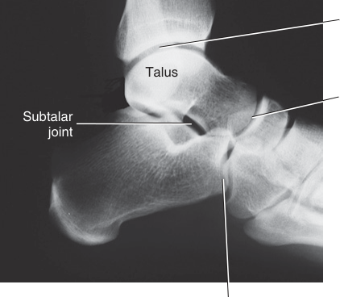
Thuật ngữ dùng để mô tả vận động của cổ chân và bàn chân gồm hai bộ định nghĩa: một bộ cơ bản và một bộ ứng dụng. Thuật ngữ cơ bản định nghĩa vận động của bàn chân hoặc cổ chân xảy ra vuông góc với ba trục xoay chuẩn (Hình 14.10A). Gập mu bàn chân (duỗi) (dorsiflexion/extension) và gập lòng bàn chân (plantar flexion) mô tả vận động song song với mặt phẳng đứng dọc (sagittal plane), quanh một trục xoay trong–ngoài. Lật ngoài và lật trong mô tả vận động song song với mặt phẳng trán (frontal plane), quanh một trục xoay trước–sau. Dỗi rộng và khép mô tả vận động song song với mặt phẳng ngang (transverse/horizontal plane), quanh một trục xoay thẳng đứng (trên–dưới). Đối với ít nhất ba khớp chính của cổ chân và bàn chân, những định nghĩa cơ bản này là không đầy đủ, vì hầu hết các vận động tại các khớp này xảy ra quanh một trục xiên thay vì quanh ba trục xoay chuẩn, vuông góc như được minh họa trong Hình 14.10A.
Vì vậy, một bộ thuật ngữ thứ hai mang tính ứng dụng hơn đã phát triển nhằm cố gắng định nghĩa các vận động xảy ra vuông góc với một trong số các trục xoay xiên chi phối ở cổ chân và bàn chân (xem Hình 14.10B). Sấp (pronation) được định nghĩa là một vận động có các thành phần lật ngoài, dỗi rộng và gập mu bàn chân. Ngược lại, ngửa (supination) được định nghĩa là một vận động có các thành phần lật trong, khép và gập lòng bàn chân. Hướng của trục xoay xiên được minh họa trong Hình 14.10B thay đổi giữa các khớp chính, nhưng nhìn chung có độ dốc tương tự như hình minh họa. Độ dốc chính xác của trục xoay tại mỗi khớp chính được mô tả trong các phần sau.
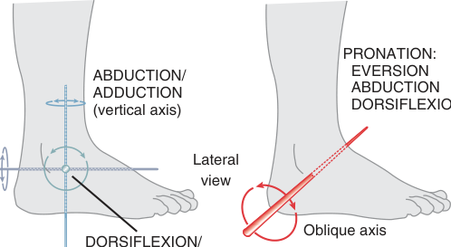
Các vận động sấp và ngửa đã được gọi là các vận động "ba mặt phẳng" (triplanar). Rất tiếc, cách mô tả này gây hiểu lầm. Thuật ngữ ba mặt phẳng chỉ có nghĩa là các vận động "cắt ngang" qua từng trong ba mặt phẳng chính, chứ không có nghĩa là khớp thực hiện vận động đó có ba bậc tự do. Sấp và ngửa dùng chung một mặt phẳng nhất định. Bảng 14.2 tóm tắt thuật ngữ dùng để mô tả các vận động của cổ chân và bàn chân, bao gồm cả thuật ngữ mô tả tư thế bất thường hoặc biến dạng.
| Vận động (Motion) | Trục xoay (Axis of Rotation) | Mặt phẳng vận động (Plane of Motion) | Ví dụ về biến dạng cố định hoặc tư thế bất thường (Example of Fixed Deformity or Abnormal Posture) |
|---|---|---|---|
| Gập lòng bàn chân (Plantar flexion) Gập mu bàn chân (Dorsiflexion) | Trong–ngoài (Medial-lateral) | Đứng dọc (Sagittal) | Bàn chân ngựa (Pes equinus) Bàn chân gót (Pes calcaneus) |
| Lật trong (Inversion) Lật ngoài (Eversion) | Trước–sau (Anterior-posterior) | Trán (Frontal) | Varus (lật trong) (Varus) Valgus (lật ngoài) (Valgus) |
| Dỗi rộng (Abduction) Khép (Adduction) | Thẳng đứng (Vertical) | Ngang (Horizontal) | Dỗi rộng (Abductus) Khép (Adductus) |
| Ngửa (Supination) | Xiên (thay đổi theo khớp) (Oblique [varies by joint]) | Các thành phần thay đổi của lật trong, khép và gập lòng bàn chân (Varying elements of inversion, adduction, and plantar flexion) | Thuật ngữ không thống nhất — thường hàm ý một hoặc nhiều thành phần của ngửa (Inconsistent terminology—usually implies one or more of the components of supination) |
| Sấp (Pronation) | Xiên (thay đổi theo khớp) (Oblique [varies by joint]) | Các thành phần thay đổi của lật ngoài, dỗi rộng và gập mu bàn chân (Varying elements of eversion, abduction, and dorsiflexion) | Thuật ngữ không thống nhất — thường hàm ý một hoặc nhiều thành phần của sấp (Inconsistent terminology—usually implies one or more of the components of pronation) |
Dưới góc độ giải phẫu, cổ chân gồm một khớp nối chức năng: khớp cổ chân (talocrural joint). Một thành phần cấu trúc quan trọng của khớp này là sự khớp nối giữa xương chày và xương mác — một khớp nối được gia cố bởi các khớp chày–mác gần và xa cùng màng gian xương của chân (xem Hình 13.3). Nhờ mối liên hệ chức năng này, các khớp chày–mác gần và xa được xếp vào chủ đề "cổ chân".
Khớp chày–mác gần (hay khớp chày–mác trên) là một khớp hoạt dịch nằm phía ngoài và ngay phía dưới gối. Khớp được tạo thành giữa đầu xương mác và mặt sau–ngoài của mỏm cầu ngoài xương chày (xem Hình 13.4). Các mặt khớp nhìn chung phẳng hoặc hơi bầu dục, được phủ sụn khớp. Mặc dù khớp chày–mác gần về mặt chức năng độc lập với khớp gối (khớp chày–đùi), vẫn có các kết nối giải phẫu giữa bao khớp của hai khớp này.
Một bao khớp được gia cố bởi các dây chằng trước và sau và một phần gân cơ nhị đầu đùi bao quanh khớp chày–mác gần (xem Hình 13.7 và 13.9). Gân cơ khoeo cung cấp sự ổn định bổ sung khi nó đi qua phía sau khớp. Khi bị căng bởi các lực và mô men phát sinh trong lúc đi bộ, người ta đã đo được 1–3 mm chuyển động trước và sau tại khớp này trên các mẫu xác chết. Sự ổn định tương đối tại khớp này cần thiết để đảm bảo rằng các lực trong cơ nhị đầu đùi và dây chằng bên mác của gối được truyền hiệu quả từ xương mác sang xương chày. Mặc dù hiếm gặp, trật khớp cấp tính của khớp chày–mác gần do chấn thương đã được mô tả trong tài liệu.
Khớp chày–mác xa được tạo thành bởi sự khớp nối giữa mặt trong của đầu xa xương mác và khuyết mác của xương chày (Hình 14.11). Các nhà giải phẫu học thường gọi khớp chày–mác xa là một khớp dính (syndesmosis), một dạng khớp xơ không vận động (fibrous synarthrodial joint) được gắn chặt bởi một màng gian xương. Như sẽ được mô tả ở phần sau, vận động tại khớp chày–mác xa rất nhỏ và dường như chủ yếu liên quan đến gập mu bàn chân tại khớp cổ chân.
Dây chằng gian xương cung cấp sự gắn kết chắc nhất giữa đầu xa của xương chày và xương mác (xem Hình 14.3). Dây chằng này là sự kéo dài của màng gian xương giữa xương chày và xương mác. Các dây chằng chày–mác trước và sau (xa) cũng ổn định khớp (Hình 14.11 và 14.12). Sự liên kết vững chắc giữa đầu xa xương chày và xương mác là cần thiết cho sự ổn định và chức năng của khớp cổ chân.
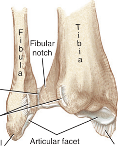
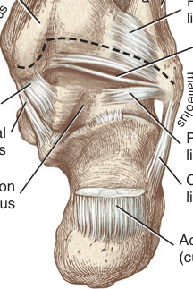
Các dây chằng của khớp chày–mác xa (Ligaments of the Distal Tibiofibular Joint)
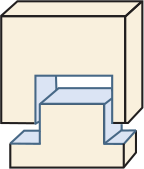
Khớp cổ chân, hay cổ chân, là sự khớp nối giữa ròng rọc (vòm) và các mặt bên của xương sào với hốc hình chữ nhật được tạo thành bởi đầu xa của xương chày và cả hai mắt cá (xem Hình 14.3 và 14.9). Khớp cổ chân thường được gọi là "mộng" (mortise), do sự giống nhau của nó với khớp mộng gỗ mà thợ mộc sử dụng (Hình 14.13). Hình dạng lõm của mặt gần của mộng được duy trì bởi các dây chằng gắn xương chày với xương mác. Hình dạng bao bọc của khớp cổ chân cung cấp một nguồn ổn định tự nhiên chính cho cổ chân.
Cấu trúc của mộng phải đủ ổn định để tiếp nhận các lực đi qua giữa chân và bàn chân. Mặc dù có sự thay đổi, khi đứng, khoảng 90% đến 95% lực nén đi qua xương sào và xương chày; 5% đến 10% còn lại đi qua vùng ngoài của xương sào và xương mác. Khớp cổ chân được lót bằng khoảng 3 mm sụn khớp, có thể bị nén 30% đến 40% để đáp ứng với các tải trọng sinh lý đỉnh. Cơ chế hấp thụ tải trọng này bảo vệ xương dưới sụn nằm trong khớp khỏi ứng suất gây hư hại.
Bao khớp của khớp cổ chân được gia cố bởi các dây chằng bên, giúp duy trì sự ổn định giữa xương sào và "ổ" hình chữ nhật của mộng. Ngoài việc tăng cường độ chắc cơ học cho mộng, các dây chằng còn có các thụ thể cơ học (chủ yếu là các đầu dây thần kinh tự do và các đầu Ruffini), cuối cùng giúp tăng cường khả năng của các cơ trong việc ổn định vùng này một cách vô thức.
…hố khớp (mortise) và các dây chằng bên. Chấn thương dây chằng tam giác (deltoid ligament) tương đối không thường gặp, một phần vì độ bền của chính dây chằng này và cũng vì mắt cá ngoài đóng vai trò như một chặn xương chống lại sự lật ngoài (eversion) quá mức. Những chấn thương thực sự xảy ra thường đi kèm với tổn thương các cấu trúc khác, chẳng hạn khớp chày–mác xa (distal tibiofibular joint) (khớp dính — syndesmosis), các dây chằng bên, dây chằng lò xo (spring ligament) (được mô tả ở phần sau), và xương (gãy xương và bầm dập). Cụm chấn thương đi kèm này có thể nặng, thường xảy ra khi tiếp đất sai tư thế sau một cú nhảy hoặc khi xoắn cực độ chi dưới đang chịu tải, thường kết hợp mức cực độ của lật ngoài và dạng xa (abduction; xoay ngoài — external rotation). (Tài liệu thường dùng các thuật ngữ dạng xa và xoay ngoài của cổ chân thay thế cho nhau. Khi chịu trọng lượng lên bàn chân, sự dạng xa quá mức của cổ chân xảy ra thông qua sự xoay trong quá mức của cẳng chân so với xương sào được cố định.)
Các dây chằng bên (lateral collateral ligaments) của cổ chân gồm các dây chằng sào–mác trước và sau (anterior and posterior talofibular ligaments) và dây chằng gót–mác (calcaneofibular ligament). Khác với các dây chằng tam giác đan xen nhau, các dây chằng bên tồn tại như những thực thể giải phẫu riêng biệt (Hình 14.15). Cơ chế của cái gọi là "bong gân cổ chân" điển hình thường bao gồm một thành phần lật trong (inversion) quá mức. Vì vậy, không có gì ngạc nhiên khi khoảng 80% trong tổng số các trường hợp bong gân cổ chân liên quan đến tổn thương một hoặc nhiều dây chằng bên. Tần suất tương đối cao của các cơn bong gân do lật trong có thể được giải thích một phần bằng sự lật trong nhẹ của xương gót tại khoảnh khắc gót chân chạm đất khi đi bộ, kết hợp với việc mắt cá trong không chặn đủ mặt trong của hố khớp.
Dây chằng sào–mác trước bám vào mặt trước của mắt cá ngoài, rồi chạy về phía trước và phía trong đến cổ xương sào (xem Hình 14.15). Đây là dây chằng bị tổn thương thường xuyên nhất trong số các dây chằng bên. Chấn thương thường do lật trong quá mức hoặc do khép (adduction) trong mặt phẳng ngang của cổ chân (xoay trong — internal rotation), đặc biệt khi kết hợp với gập lòng bàn chân (plantar flexion) — ví dụ, khi vô tình bước vào một cái hố hoặc bước lên chân người khác lúc tiếp đất sau cú nhảy. Dây chằng gót–mác chạy xuống dưới và ra sau từ đỉnh của mắt cá ngoài đến mặt ngoài của xương gót (xem Hình 14.15). Dây chằng này chủ yếu kháng lại sự lật trong trên khớp cổ chân (khớp sào–chày–mác, đặc biệt khi gập mu bàn chân hoàn toàn) và khớp dưới sào. Như một cặp, dây chằng gót–mác và dây chằng sào–mác trước tạo sức kháng lại sự lật trong trong hầu hết tầm gập mu bàn chân và gập lòng bàn chân của cổ chân. Khoảng hai phần ba số chấn thương dây chằng bên ở cổ chân liên quan đến cả hai dây chằng này.
Ba thành phần chính của các dây chằng bên cổ chân (Three Major Components of the Lateral Collateral Ligaments of the Ankle)
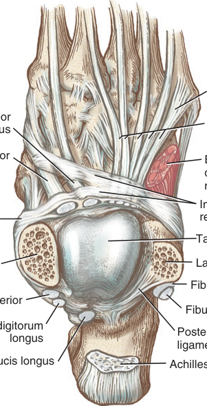
Dây chằng sào–mác sau khởi đầu từ mặt sau–trong của mắt cá ngoài và bám vào củ ngoài của xương sào (xem Hình 14.12 và 14.15). Các sợi của nó chạy gần như nằm ngang qua mặt sau của khớp cổ chân, theo hướng xiên từ trước–ngoài đến sau–trong (Hình 14.16). Chức năng chính của dây chằng sào–mác sau là ổn định xương sào trong hố khớp. Đặc biệt, nó hạn chế sự dạng xa (xoay ngoài) quá mức của xương sào, nhất là khi cổ chân được gập mu bàn chân hoàn toàn.
Dây chằng ngang dưới (inferior transverse ligament) là một bó sợi nhỏ nhưng dày, được coi là một phần của dây chằng sào–mác sau (xem Hình 14.12).
Dây chằng bên trong (medial collateral ligament) của khớp cổ chân thường được gọi là dây chằng tam giác (deltoid ligament) vì hình dạng tam giác của nó. Đỉnh của dây chằng tam giác bám dọc theo mắt cá trong ở đoạn xa, trong khi đáy của nó dày lên và mở rộng ra, thường gồm một nhóm nông với bốn dải sợi (Hình 14.14). Các điểm bám xa cụ thể của các sợi nông được làm nổi bật trong Hình 14.14 và được liệt kê trong khung. Một nhóm sợi dọc ngắn hơn nằm ở một mặt phẳng riêng, bám giữa mắt cá trong và mặt trong kề cạnh của xương sào. Các sợi chày–sào trước và sau sâu này (không thấy trong Hình 14.14) bám sát mặt trong của khớp cổ chân. Các sợi chày–sào sau sâu bám phía trên và phía trước củ trong của xương sào là những sợi lớn nhất và dày nhất của toàn bộ dây chằng tam giác (Hình 14.12).
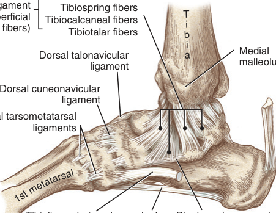
Các điểm bám xa của các sợi cấu thành dây chằng tam giác (Distal Attachments of the Fibers Comprising the Deltoid Ligament)
NHÓM NÔNG (SUPERFICIAL SET)
Các sợi chày–thuyền bám vào xương thuyền, phía trên củ thuyền ngay ở phía xa đường khớp sào–thuyền.
Các sợi chày–lò xo hòa lẫn với dây chằng gót–thuyền lòng bàn chân ("lò xo") của bàn chân giữa.
Các sợi chày–gót bám vào mỏm đỡ sào (sustentaculum talus) của xương gót.
Các sợi chày–sào bám ngay phía trước củ trong của xương sào.
NHÓM SÂU (DEEP SET)
Các sợi chày–sào trước và sau bám dọc theo phần lớn mặt trong của xương sào, sát và đi theo đường khớp cổ chân.
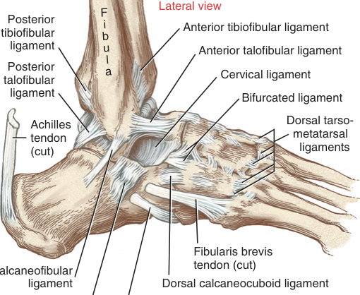
Chức năng chính của dây chằng tam giác là gia cố mặt trong của cổ chân. Nhìn chung, các sợi được định hướng để hạn chế các mức cực đoan của lật ngoài trên các khớp cổ chân, khớp dưới sào và khớp sào–thuyền. Các sợi cũng cung cấp sự ổn định xoay đa hướng cho hố khớp — một chức năng được chia sẻ bởi hình dạng của mắt cá trong, tạo thành một phần của thành sau của khớp cổ chân.
Tóm lại, các dây chằng bên trong và bên ngoài của cổ chân lần lượt hạn chế sự lật ngoài và lật trong quá mức của cổ chân. Hơn nữa, vì hầu hết các dây chằng chạy xiên theo các hướng trước hoặc sau khác nhau, nên hầu hết cũng hạn chế sự dịch chuyển về phía trước hoặc phía sau của xương sào trong hố khớp. Như đã mô tả trong phần về động học khớp (arthrokinematics), các chuyển động gập lòng bàn chân và gập mu bàn chân vì thế được liên kết về mặt động học với sự dịch chuyển về phía trước và phía sau của xương sào, tương ứng. Vì những lý do này, một số dây chằng bên bị kéo căng ở các mức cực đoan của gập mu bàn chân hoặc gập lòng bàn chân của khớp cổ chân.
Nhiều thành phần của các dây chằng băng qua khớp cổ chân cũng băng qua các khớp khác của bàn chân, chẳng hạn như khớp dưới sào và khớp sào–thuyền. Vì vậy, các dây chằng này cung cấp sự ổn định trên nhiều khớp. Bảng 14.3 tóm tắt một số chuyển động toàn tầm kéo giãn các dây chằng chính của cổ chân. Thông tin này giúp giải thích một số khía cạnh của thực hành lâm sàng, bao gồm cơ chế tổn thương dây chằng, lập luận về cách một số phép thử gắng sức (stress test) có thể đánh giá tính toàn vẹn của dây chằng, và căn cứ đứng sau các hình thức trị liệu thủ công được thực hiện nhằm tăng tầm vận động.
Khớp cổ chân có một bậc tự do chính. Mặc dù đã có các mô tả sinh cơ học khác nhau được công bố, chương này giả định rằng sự xoay tại khớp cổ chân xảy ra chủ yếu quanh một trục xoay đi qua thân xương sào và qua đỉnh của cả hai mắt cá. Vì mắt cá ngoài nằm thấp hơn và phía sau mắt cá trong (điều có thể kiểm chứng bằng sờ nắn), trục xoay hơi lệch khỏi trục thuần trong–ngoài. Như thể hiện trong Hình 14.17A–B, trục xoay (màu đỏ) hơi nghiêng lên trên và ra trước khi nó đi từ ngoài vào trong qua xương sào và cả hai mắt cá. Trục lệch khỏi trục thuần trong–ngoài khoảng 10 độ trong mặt phẳng trán (frontal plane) (xem Hình 14.17A) và 6 độ trong mặt phẳng ngang (xem Hình 14.17B). Do độ nghiêng của trục xoay, gập mu bàn chân đi kèm với dạng xa và lật ngoài nhẹ, còn gập lòng bàn chân đi kèm với khép và lật trong nhẹ. Vì vậy, theo định nghĩa chặt chẽ, khớp cổ chân tạo ra một chuyển động sấp (pronation) và ngửa (supination). Bởi trục xoay chỉ lệch rất ít so với trục thuần trong–ngoài, các thành phần chính của sấp và ngửa tại khớp cổ chân áp đảo là gập mu bàn chân và gập lòng bàn chân (xem Hình 14.17D–E). Các thành phần trên mặt phẳng ngang và mặt phẳng trán của sấp và ngửa thực sự rất nhỏ và bị bỏ qua trong hầu hết các tình huống lâm sàng.
Vị trí 0 độ (trung tính) tại khớp cổ chân được xác định khi bàn chân được giữ ở góc 90 độ so với cẳng chân. Từ vị trí này, khớp cổ chân cho phép khoảng 15 đến 25 độ gập mu bàn chân và 40 đến 55 độ gập lòng bàn chân, mặc dù các giá trị được báo cáo khác nhau đáng kể tùy theo loại và phương pháp đo. Các chuyển động phụ (accessory movements) ở các khớp khác của bàn chân có thể đóng góp tới 20–30% tổng tầm vận động được báo cáo. Gập mu bàn chân và gập lòng bàn chân tại khớp cổ chân cần được hình dung khi bàn chân không chạm đất và được tự do xoay, cũng như khi bàn chân được cố định trên mặt đất trong lúc cẳng chân xoay về phía trước, chẳng hạn trong giai đoạn đỡ (stance phase) của chu kỳ đi.
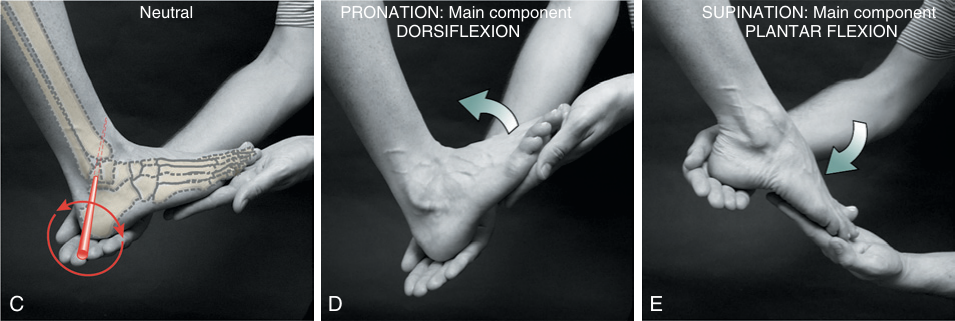
| Dây chằng (Ligaments) | Các khớp băng qua (Crossed Joints) | Một số chuyển động toàn tầm kéo giãn dây chằng (Selected Full Movements That Stretch Ligaments) |
|---|---|---|
| Dây chằng tam giác (các sợi chày–sào) | Khớp cổ chân | Lật ngoài; gập mu bàn chân kèm trượt xương sào về phía sau trong hố khớp (các sợi sau) |
| Dây chằng tam giác (các sợi chày–thuyền) | Khớp cổ chân Khớp sào–thuyền | Lật ngoài, dạng xa, gập lòng bàn chân kèm trượt xương sào về phía trước trong hố khớp Lật ngoài, dạng xa |
| Dây chằng tam giác (các sợi chày–gót) | Khớp cổ chân và khớp dưới sào | Lật ngoài |
| Dây chằng sào–mác trước | Khớp cổ chân | Lật trong, khép, gập lòng bàn chân kèm trượt xương sào về phía trước trong hố khớp |
| Dây chằng gót–mác | Khớp cổ chân Khớp dưới sào | Lật trong, gập mu bàn chân kèm trượt xương sào về phía sau trong hố khớp Lật trong |
| Dây chằng sào–mác sau | Khớp cổ chân | Dạng xa, lật trong, gập mu bàn chân kèm trượt xương sào về phía sau trong hố khớp |
* Thông tin dựa trên các chuyển động của bàn chân không chịu trọng lượng so với cẳng chân cố định.
Cuộc thảo luận sau đây giả định bàn chân không chịu trọng lượng và được tự do xoay. Trong khi gập mu bàn chân, xương sào lăn về phía trước so với cẳng chân, đồng thời trượt về phía sau (Hình 14.18A). Sự trượt về phía sau đồng thời cho phép xương sào xoay về phía trước với chỉ một dịch chuyển về phía trước hạn chế. Hình 14.18A cho thấy dây chằng gót–mác trở nên căng để đáp ứng với xu hướng trượt về phía sau của đoạn sào–gót. Nhìn chung, bất kỳ dây chằng bên nào trở nên căng dần do sự dịch chuyển của xương sào về phía sau cũng trở nên căng dần trong khi gập mu bàn chân. Ngoài dây chằng gót–mác được thể hiện trong Hình 14.18A, gập mu bàn chân hoàn toàn còn kéo giãn dây chằng sào–mác sau và các sợi chày–sào sau của dây chằng tam giác. Mặc dù độ lớn của sức kháng do các dây chằng bên kể trên tạo ra có thể tương đối nhỏ so với một mô như gân Achilles, trong một số tình huống lâm sàng nhất định, lực căng do các dây chằng bên tạo ra có thể lớn bất thường và hạn chế gập mu bàn chân hoàn toàn. Ví dụ, gập mu bàn chân hoàn toàn thường bị hạn chế sau chấn thương dây chằng hoặc bất động kéo dài khớp cổ chân. Một cách tiếp cận điều trị nhằm tăng gập mu bàn chân là vận động khớp thụ động (passive joint mobilization) khớp cổ chân. Cụ thể, nhà lâm sàng áp dụng một dịch chuyển hướng về phía sau của xương sào và bàn chân so với cẳng chân. Một lần trượt về phía sau được thực hiện đúng cách được thiết kế để kéo giãn tất cả các mô vốn tự nhiên hạn chế gập mu bàn chân, bao gồm nhiều dây chằng bên. Sự trượt về phía sau do thủ công tạo ra cũng được thiết kế để mô phỏng động học khớp tự nhiên của gập mu bàn chân.
Trong khi gập lòng bàn chân, xương sào lăn về phía sau, đồng thời trượt về phía trước (xem Hình 14.18B). Nhìn chung, bất kỳ dây chằng bên nào trở nên căng dần do sự dịch chuyển của xương sào về phía trước cũng trở nên căng dần trong khi gập lòng bàn chân. Như thể hiện trong Hình 14.18B, dây chằng sào–mác trước bị kéo giãn khi gập lòng bàn chân hoàn toàn. (Mặc dù không thể hiện trong hình, các sợi chày–thuyền của dây chằng tam giác cũng sẽ trở nên căng khi gập lòng bàn chân hoàn toàn [xem lại Bảng 14.3].) Gập lòng bàn chân cũng kéo giãn các cơ gập mu bàn chân (dorsiflexor muscles) và bao khớp trước của khớp. Các mức cực đoan của gập lòng bàn chân có thể dẫn đến sự chèn ép gây đau giữa xương chày ở đoạn xa và xương sào hoặc xương gót ở phía sau, đặc biệt khi có os trigonum (một xương phụ nhỏ và tương đối hiếm nằm gần xương sào ở phía sau–ngoài).
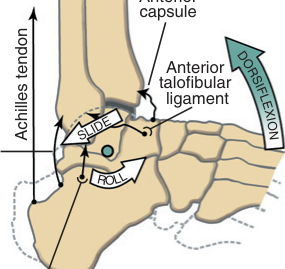
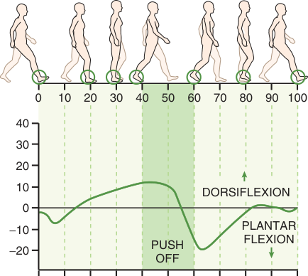
Khi gót chân mới chạm đất ban đầu trong lúc đi bộ, cổ chân gập lòng bàn chân nhanh chóng để hạ bàn chân xuống mặt đất (Hình 14.19; từ 0% đến 5% của chu kỳ đi). Ngay khi đạt đến giai đoạn bàn chân phẳng của chu kỳ đi, cẳng chân bắt đầu xoay về phía trước (gập mu bàn chân) trên bàn chân đã chạm đất. Sự gập mu bàn chân tiếp diễn cho đến ngay sau giai đoạn gót nhấc. Tại thời điểm này của chu kỳ đi, cổ chân trở nên ổn định dần nhờ sức căng tăng lên ở nhiều dây chằng bên bị kéo giãn và ở các cơ gập lòng bàn chân (Hình 14.20A).
…hố khớp (xem Hình 14.20B). Hiệu ứng nêm này làm xương chày và xương mác ở đoạn xa tách ra nhẹ. Chuyển động này bị kháng lại bởi sức căng ở các dây chằng chày–mác xa và màng giữa xương (interosseous membrane). Khi bắt đầu giai đoạn đẩy khỏi mặt đất của bước đi (ngay sau khoảng 40% của chu kỳ đi; xem Hình 14.19), khớp cổ chân được gập mu bàn chân hoàn toàn ở vào vị trí khít khớp (close-packed) — vị trí ổn định và khớp hợp nhất. Khớp đã sẵn sàng tiếp nhận các lực nén tiếp theo có thể đạt tới bốn lần trọng lượng cơ thể. Sự khớp hợp vốn có này có thể giải thích tần suất tương đối thấp của viêm xương khớp (osteoarthritis) nguyên phát do "hao mòn tự nhiên" ("wear-and-tear") tại khớp cổ chân. Viêm xương khớp nguyên phát của khớp cổ chân xảy ra ít hơn chín lần so với ở háng hoặc gối. Tuy nhiên, viêm xương khớp sau chấn thương của khớp cổ chân lại tương đối thường gặp. Sự không khớp hợp còn lại trong hố khớp sau chấn thương có thể làm tăng ứng suất trong khớp và tổn thương sụn, có tiến triển thành viêm xương khớp.
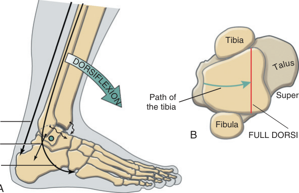
Các dây chằng của khớp chày–mác xa và màng giữa xương có mối quan hệ cấu trúc chặt chẽ với khớp cổ chân kề cạnh. Mối quan hệ này trở nên rõ ràng sau một chấn thương cổ chân liên quan đến gập mu bàn chân cực độ — ví dụ, do tiếp đất sau một cú nhảy hoặc một cú ngã. Gập mu bàn chân cực độ và dữ dội của cổ chân (cẳng chân đè lên bàn chân) có thể khiến hố khớp "nổ tung" ra ngoài, làm tổn thương nhiều mô. Sự giãn rộng chấn thương của hố khớp và sự dịch chuyển của xương mác đi kèm có thể làm tổn thương các dây chằng của khớp chày–mác xa cũng như màng giữa xương — cái gọi là bong gân cổ chân cao (high ankle) hay bong gân khớp dính (syndesmotic sprain). Kết hợp với gập mu bàn chân cực độ, cơ chế chấn thương thường gặp của nhiều trường hợp bong gân cổ chân cao liên quan đến một mô men dạng xa (xoay ngoài) quá mức tác động lên xương sào trong hố khớp. Dưới góc nhìn chịu trọng lượng, chuyển động cực độ này có thể xảy ra khi tiếp đất sau cú nhảy bằng cổ chân phải đang gập mu bàn chân, trong lúc cơ thể và cẳng chân đồng thời xoay mạnh sang trái. (Chuyển động như vậy bắt buộc xoay trong xương chày và xương mác bên phải so với bàn chân được cố định.) Thường thì, chuyển động gây ứng suất này còn liên quan đến lật ngoài quá mức của hố khớp. Các nghiên cứu mô phỏng cơ chế chấn thương kinh điển kể trên của bong gân cổ chân cao đã báo cáo rằng độ giãn dây chằng lớn nhất xảy ra ở dây chằng chày–mác trước, ngay sau đó là các sợi trước của dây chằng tam giác (các sợi chạy về phía và băng qua khớp sào–thuyền). Các giá trị độ giãn 8–9% đã được đo ở những dây chằng này — một sự kéo giãn về mặt lý thuyết có khả năng gây tổn thương.
Bong gân cổ chân cao hay bong gân khớp dính được báo cáo xảy ra ở khoảng 10% trong tổng số chấn thương cổ chân, tương tự như tần suất tương đối thấp của các cơn bong gân do lật ngoài. Vì khả năng tổn thương nhiều mô, thời gian hồi phục sau bong gân cổ chân cao thường dài hơn thời gian cần thiết cho loại bong gân do lật trong thường gặp hơn.
Gập lòng bàn chân hoàn toàn — vị trí lỏng khớp (loose-packed) của khớp cổ chân — làm lỏng ra nhiều dây chằng bên của cổ chân và tất cả các cơ gập lòng bàn chân. Ngoài ra, gập lòng bàn chân đưa chiều hẹp hơn của xương sào vào giữa hai mắt cá, từ đó giải phóng sức căng trong hố khớp. Hệ quả là, gập lòng bàn chân hoàn toàn khiến xương chày và xương mác "nới lỏng cái nắm" của chúng lên xương sào. Vì vậy, chịu trọng lượng cơ thể trên cổ chân gập lòng bàn chân hoàn toàn đặt khớp cổ chân vào một vị trí tương đối không ổn định. Đi giày cao gót hoặc tiếp đất sau cú nhảy ở tư thế gập lòng bàn chân (và thường lật trong) làm tăng khả năng làm mất ổn định hố khớp và có thể tổn thương các dây chằng bên của cổ chân.
TẬP TRUNG ĐẶC BIỆT 14.1 — Chấn thương cổ chân do gập mu bàn chân hoặc gập lòng bàn chân cực độ (Ankle Injury Resulting from the Extremes of Dorsiflexion or Plantar Flexion)
Sự giãn rộng nhẹ tự nhiên của hố khớp khi gập mu bàn chân tối đa gây ra các chuyển động xoay và dịch chuyển nhẹ của xương mác. Mặc dù chưa được xác định chặt chẽ, các chuyển động này được báo cáo là xảy ra ở cả khớp chày–mác xa và khớp chày–mác gần. Các chuyển động của xương mác có thể do sức căng trong các dây chằng chày–mác (xa) trước và sau bị kéo giãn và màng giữa xương.
Khớp dưới sào, như tên gọi của nó cho thấy, nằm bên dưới xương sào (xem Hình 14.9). Để đánh giá mức độ vận động của khớp dưới sào, chỉ cần nắm chắc xương gót (gót chân) không chịu trọng lượng và xoay nó theo kiểu qua lại và xoay tròn. Trong chuyển động này, xương sào phải giữ gần như bất động bên trong khớp cổ chân khít chặt. Sấp và ngửa trong các hoạt động không chịu trọng lượng xảy ra khi xương gót di động so với xương sào được cố định. Tuy nhiên, trong các hoạt động chịu trọng lượng, chẳng hạn như khi ở giai đoạn đỡ của bước đi, sấp và ngửa xảy ra khi cẳng chân và xương sào (như một đơn vị chung) xoay trên xương gót tương đối bất động (cố định). Những động học dựa trên chịu trọng lượng của khớp dưới sào là một khái niệm thiết yếu để hiểu cơ học vận động của bàn chân. Những động học này cho phép bàn chân giữ các vị trí độc lập với hướng của cổ chân và cẳng chân nằm trên nó. Chức năng này thiết yếu cho các hoạt động như đi qua một ngọn đồi dốc, đứng với hai chân dang rộng, đổi hướng nhanh khi đi hoặc chạy, và giữ thăng bằng trên một con thuyền đang lắc.
Cấu trúc khớp (Articular Structure)
Khớp dưới sào lớn và phức tạp gồm ba khớp nối được tạo thành giữa các mặt sau, giữa và trước của xương gót và xương sào. Các khớp nối này được thể hiện màu vàng trong Hình 14.21.
Khớp nối sau nổi bật của khớp dưới sào chiếm khoảng 70% tổng diện tích bề mặt khớp. Mặt sau lõm của xương sào nằm trên mặt sau lồi của xương gót. Khớp nối này được giữ áp chặt nhờ hình dạng ăn khớp, các dây chằng, trọng lượng cơ thể và cơ được hoạt hóa. Các khớp nối trước và giữa nằm sát nhau gồm các bề mặt khớp nhỏ hơn, gần phẳng. Mặc dù cả ba khớp nối đều góp phần vào vận động của khớp dưới sào, các nhà lâm sàng thường tập trung vào khớp nối sau nổi bật hơn khi thực hiện các kỹ thuật vận động nhằm tăng độ mềm dẻo của bàn chân sau.
Dây chằng (Ligaments)
Các khớp nối sau và trước–giữa trong khớp dưới sào mỗi cái được bao bọc bởi một bao khớp riêng. Bao khớp sau lớn hơn được gia cố bằng nhiều dây chằng mảnh và thường không tên. Các dây chằng cung cấp nguồn ổn định chính cho toàn bộ khớp dưới sào được liệt kê trong Bảng 14.4. Dây chằng gót–mác hạn chế lật trong quá mức, và dây chằng tam giác (các sợi chày–gót) hạn chế lật ngoài quá mức. (Giải phẫu của những dây chằng này đã được mô tả trước đó cùng với khớp cổ chân.)
Dây chằng giữa xương (sào–gót) (interosseous/talocalcaneal) và dây chằng cổ bám trực tiếp giữa xương sào và xương gót, vì vậy cung cấp sự gia cố không cơ lớn nhất cho khớp dưới sào. Những dây chằng rộng và dẹt này chạy xiên trong xoang cổ chân (tarsal sinus) và vì thế khó nhìn thấy trừ khi khớp được tách rời, như đã mô tả trước đó trong Hình 14.8. Dây chằng giữa xương (sào–gót) có hai dải trước và sau riêng biệt, dẹt. Các dải này khởi đầu từ rãnh gót (calcaneal sulcus) và chạy lên trên để bám trong rãnh sào (talar sulcus) và các vùng kề cạnh. Dây chằng cổ lớn hơn có cách sắp xếp sợi xiên tương tự dây chằng giữa xương nhưng bám xa hơn về phía ngoài trong rãnh gót. Từ điểm bám này, dây chằng cổ chạy lên trên và vào trong để bám chủ yếu vào mặt dưới–ngoài của cổ xương sào (do đó có tên gọi "cổ") (xem Hình 14.15). Dây chằng giữa xương và dây chằng cổ hạn chế các mức cực đoan của mọi chuyển động — đáng chú ý nhất là lật trong.
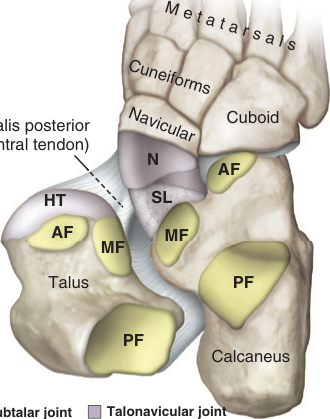
| Dây chằng (Ligament) | Chức năng chính tại khớp dưới sào (Primary Function at the Subtalar Joint) |
|---|---|
| Dây chằng gót–mác | Hạn chế lật trong quá mức |
| Các sợi chày–gót của dây chằng tam giác | Hạn chế lật ngoài quá mức |
| Dây chằng giữa xương (sào–gót) Dây chằng cổ | Cả hai dây chằng đều gắn xương sào với xương gót; hạn chế các mức cực đoan của mọi chuyển động, đặc biệt là lật trong |
Mặc dù các dây chằng trong xoang cổ chân được công nhận là những ổn định chính của khớp dưới sào, sự hiểu biết đầy đủ về chức năng của chúng vẫn chưa rõ ràng. Sự thiếu hiểu biết này đã hạn chế việc phát triển các "phép thử gắng sức" (stress test) lâm sàng chuẩn để hỗ trợ chẩn đoán tổn thương dây chằng. Các nghiên cứu trên xác cho thấy một lực dịch chuyển từ ngoài vào trong tác động lên xương gót gây ứng suất đặc biệt lên dây chằng giữa xương. Phát hiện này phù hợp với chức năng được cho là của dây chằng này là kháng lại sự lật trong tại khớp dưới sào.
Động học (Kinematics)
Động học khớp tại khớp dưới sào bao gồm một chuyển động trượt giữa ba bộ mặt khớp, tạo ra một cung vận động cong giữa xương gót và xương sào. Mặc dù có sự khác biệt đáng kể giữa các cá nhân, trục xoay thường được mô tả như một đường xuyên qua gót chân phía ngoài–sau và đi qua khớp dưới sào theo các hướng trước, trong và trên (Hình 14.22A–C, màu đỏ). Trục xoay đặt ở góc 42 độ so với mặt phẳng ngang (xem Hình 14.22A) và 16 độ so với mặt phẳng đứng dọc (xem Hình 14.22B).
Sấp và ngửa của khớp dưới sào xảy ra khi xương gót di động so với xương sào (hoặc ngược lại khi bàn chân đặt trên mặt đất) theo một cung vuông góc với trục xoay (xem các mũi tên tròn màu đỏ trong Hình 14.22A–C). Với độ nghiêng chung của trục, chỉ hai trong ba thành phần chính của sấp và ngửa biểu hiện rõ: lật trong và lật ngoài, cùng dạng xa và khép (xem Hình 14.22A–B). Vì vậy, sấp có các thành phần chính là lật ngoài và dạng xa (xem Hình 14.22D); ngửa có các thành phần chính là lật trong và khép (xem Hình 14.22E). Xương gót thực sự gập mu bàn chân và gập lòng bàn chân nhẹ so với xương sào; tuy nhiên, chuyển động này nhỏ và thường bị bỏ qua trong lâm sàng.
Đơn giản hóa, động học xương của khớp dưới sào đã được minh họa bằng hình ảnh (trong Hình 14.22) như xương gót di động so với xương sào cố định và gần như bất động. Tuy nhiên, khi đi bộ, vì xương gót tương đối cố định dưới tải trọng của trọng lượng cơ thể, một phần đáng kể sấp và ngửa tại khớp dưới sào xảy ra thông qua sự xoay trên mặt phẳng ngang của xương sào. Nhờ sự ổn định và khớp hợp vốn có do hố khớp cung cấp, sự xoay trên mặt phẳng ngang của xương sào được ghép nối cơ học với sự xoay của toàn bộ cẳng chân. Các chuyển động phụ nhỏ trên mặt phẳng ngang trong khớp cổ chân chiếm một tỷ lệ nhỏ trong tổng độ xoay này.
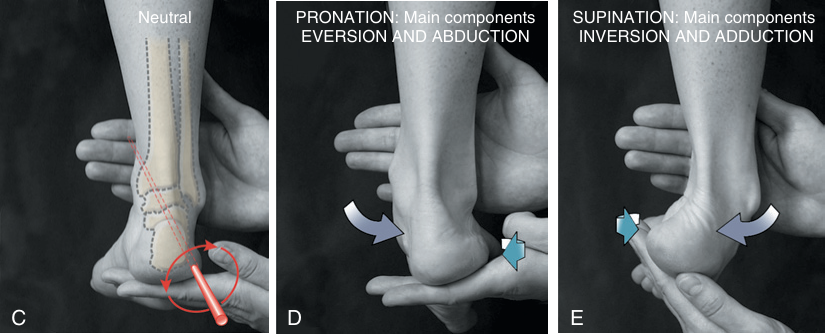
Tầm vận động (Range of Motion)
Grimston và các cộng sự đã báo cáo tầm vận động chủ động của các chuyển động lật trong và lật ngoài tại khớp dưới sào ở 120 người khỏe mạnh (tuổi từ 9 đến 79). Kết quả cho thấy lật trong vượt trội lật ngoài gần gấp đôi: lật trong, 22,6 độ; lật ngoài, 12,5 độ. Mặc dù các dữ liệu này bao gồm cả các xoay phụ tại khớp cổ chân, tỷ lệ lật trong/lật ngoài lớn hơn nhiều là điển hình của những gì được báo cáo cho riêng khớp dưới sào. Các nghiên cứu đo tầm vận động thụ động thường báo cáo các giá trị vận động lớn hơn, với tỷ lệ lật trong/lật ngoài tiệm cận 3 : 1. Bất kể vận động chủ động hay thụ động, mắt cá ngoài nhô ra ở đoạn xa và dây chằng tam giác tương đối dày tự nhiên hạn chế lật ngoài.
TẬP TRUNG ĐẶC BIỆT 14.2 — Đánh giá lâm sàng vận động của khớp dưới sào (Clinical Assessment of Subtalar Joint Motion)
Rất khó đo chính xác mức độ sấp và ngửa tại khớp dưới sào bằng thước đo góc (goniometer) chuẩn. Khó khăn này phản ánh sự không thể của một thước đo góc cứng chuẩn trong việc đi theo cung xiên của sấp và ngửa, cộng thêm các chuyển động đồng thời ở các khớp xung quanh. Như một phương pháp để vượt qua vấn đề này, các nhà lâm sàng thường đo vận động của khớp dưới sào chỉ bằng lượng lật trong và lật ngoài của bàn chân sau (xương gót). Phép tắt lâm sàng này hợp lệ miễn là hiểu rằng các chuyển động lật trong và lật ngoài trên mặt phẳng trán chỉ là các thành phần của ngửa và sấp, chứ không phải là những sự thay thế đồng nhất.
Cụm từ "khớp dưới sào trung tính" (subtalar joint neutral) thường được dùng trong lâm sàng để thiết lập một đường cơ sở hay điểm tham chiếu nhằm đánh giá bàn chân trước khi chế tạo một dụng cụ chỉnh hình (orthotic device). Vị trí trung tính của khớp dưới sào đạt được bằng cách đặt xương gót của người đó vào một vị trí cho phép cả mặt ngoài và mặt trong của xương sào cùng tiếp xúc được sờ nắn như nhau trong hố khớp. Ở vị trí "trung tính" này, khớp thường nằm ở khoảng một phần ba quãng đường từ lật ngoài hoàn toàn và hai phần ba quãng đường từ lật trong hoàn toàn.
Khớp ngang cổ chân, còn được gọi là khớp giữa bàn chân (midtarsal) hay khớp Chopart*, gồm hai khớp nối khác nhau về giải phẫu: khớp sào–thuyền và khớp gót–khối. Như thể hiện trong Hình 14.23, các khớp này nối bàn chân sau với bàn chân giữa.
Tại điểm cụ thể này của chương, có thể hữu ích khi xem xét các đặc điểm chức năng của khớp ngang cổ chân trong bối cảnh của các khớp chính khác của cổ chân và bàn chân. Như đã mô tả ở trước, khớp cổ chân (khớp sào–chày–mác) cho phép vận động chủ yếu trong mặt phẳng đứng dọc (sagittal plane): gập mu bàn chân và gập lòng bàn chân. Khớp dưới sào, tuy nhiên, cho phép một đường vận động xiên hơn gồm hai thành phần chính: lật trong–lật ngoài và dạng xa–khép.
* Được đặt theo tên Francois Chopart, một bác sĩ phẫu thuật người Pháp cuối thế kỷ XVIII, người đã nghĩ ra một ca phẫu thuật cắt bỏ một phần bàn chân tại vùng khớp ngang cổ chân.
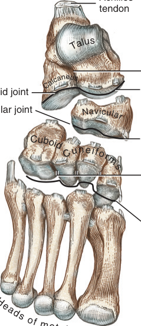
Phần này hiện mô tả cách khớp ngang cổ chân (transverse tarsal joint) — khớp linh hoạt nhất của bàn chân — vận động theo một đường đi chéo hơn, đi gần như đều qua cả ba mặt phẳng chính. Trong số các chức năng quan trọng khác, đường đi của sấp (pronation) và ngửa (supination) tại khớp ngang cổ chân cho phép bàn chân chịu trọng lượng thích ứng với nhiều hình dạng và đường cong bề mặt khác nhau (Hình 14.24).
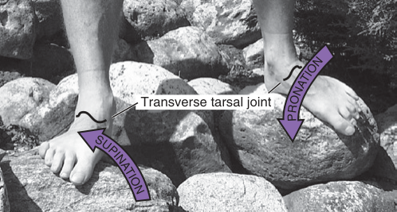
Khớp ngang cổ chân có mối quan hệ chức năng chặt chẽ với khớp dưới sào (subtalar joint). Như sẽ được mô tả, hai khớp này phối hợp với nhau để kiểm soát phần lớn tư thế sấp và ngửa của toàn bộ bàn chân.
Khớp sào–thuyền (Talonavicular Joint)
Khớp sào–thuyền (ngăn trong của khớp ngang cổ chân) giống như một khớp cầu–ổ, cung cấp khả năng vận động đáng kể cho cột trong (dọc) của bàn chân. Phần lớn sự vận động này biểu hiện dưới dạng xoắn (lật trong và lật ngoài) và uốn cong (gập và duỗi) của bàn chân giữa–bàn chân trước so với bàn chân sau. Khớp sào–thuyền gồm sự khớp nối giữa đầu lồi của xương sào (talus) và chỗ lõm sâu liên tục được tạo thành bởi mặt gần của xương thuyền (navicular) và dây chằng lò xo (spring ligament) (xem Hình 14.8). Mối quan hệ lồi–lõm của khớp sào–thuyền thể hiện rõ trong Hình 14.21. Dây chằng lò xo (được gắn nhãn SL trong Hình 14.21) là một dải sụn sợi dày và rộng, bắc qua khoảng hở giữa mỏm đỡ sào (sustentaculum talus) của xương gót (calcaneus) và mặt trong–gan của xương thuyền. Các sợi chày–lò xo của dây chằng tam giác (deltoid ligament) hòa lẫn với và gia cố dây chằng lò xo. Bằng cách trực tiếp nâng đỡ chỗ lồi phía trong và gan của đầu xương sào, dây chằng lò xo tạo thành "sàn và thành trong" mang tính cấu trúc của khớp sào–thuyền. Cần có sự hỗ trợ đáng kể ở vùng này của bàn chân vì khi đứng, trọng lượng cơ thể đè đầu xương sào theo hướng gan và hướng trong — tiến về phía mặt đất. Do đó, rách hoặc lỏng lẻo ở dây chằng lò xo có thể góp phần gây biến dạng bàn chân phẳng. (Tên gọi chính thức và chính xác hơn của dây chằng lò xo là dây chằng gót–thuyền gan (plantar calcaneonavicular ligament). Thuật ngữ "lò xo" thực chất là một tên gọi sai vì nó gần như không có tính đàn hồi; cấu trúc giàu sụn sợi của nó mang lại sức bền đáng kể và khả năng chống kéo dãn. Tuy nhiên, thuật ngữ lò xo vẫn được sử dụng vững chắc trong các tài liệu lâm sàng và nghiên cứu.)
Một bao khớp có hình dạng không đều bao quanh khớp sào–thuyền. Các dây chằng gia cố bao khớp này được liệt kê trong ô tóm tắt.
Tóm tắt các dây chằng hỗ trợ hoặc gia cố khớp sào–thuyền (Summary of Ligaments That Support or Reinforce the Talonavicular Joint)
Khớp gót–khối (Calcaneocuboid Joint)
Khớp gót–khối là thành phần ngoài của khớp ngang cổ chân, được tạo thành bởi sự nối giữa mặt trước (xa) của xương gót (calcaneus) với mặt gần của xương khối (cuboid) (xem Hình 14.23). Mỗi mặt khớp có một phần lõm và một phần lồi. Các mặt khớp tạo thành một cái nêm khớp khít chống lại sự trượt. Khớp gót–khối cho phép ít vận động hơn khớp sào–thuyền, đặc biệt trong các mặt phẳng trán và ngang. Sự thiếu linh hoạt tương đối của khớp gót–khối cung cấp độ ổn định cho cột ngoài (dọc) của bàn chân. Các phần trên và ngoài của bao khớp khớp gót–khối được làm dày lên bởi dây chằng gót–khối gan (xem Hình 14.15). Ba dây chằng bổ sung gia cố thêm cho khớp. Dây chằng chẽ đôi là một dải mô hình chữ Y với cuống bám vào xương gót, ngay phía gần mặt gan của khớp gót–khối. Cuống của dây chằng loe ra thành các bó sợi ngoài và trong. Các sợi trong (gót–thuyền) đã nói ở trên gia cố mặt ngoài của khớp sào–thuyền. Các sợi ngoài (gót–khối) băng qua mặt trên của khớp gót–khối, tạo thành mối liên kết chính giữa hai xương.
Dây chằng gan dài và dây chằng gan ngắn gia cố mặt gan của khớp gót–khối (Hình 14.25). Dây chằng gan dài, dây chằng dài nhất ở bàn chân, xuất phát từ mặt gan của xương gót, ngay phía trước mỏm gót (calcaneal tuberosity). Dây chằng này bám vào mặt gan của đáy ba hoặc bốn xương đốt bàn chân ngoài cùng. Dây chằng gan ngắn, còn gọi là dây chằng gót–khối gan, xuất phát ngay phía trước và sâu hơn dây chằng gan dài và bám vào mặt gan của xương khối. Bằng cách đi vuông góc với khớp gót–khối, các dây chằng gan cung cấp độ ổn định cấu trúc tuyệt vời cho cột ngoài của bàn chân.
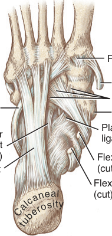
Tóm tắt các dây chằng gia cố khớp gót–khối (Summary of Ligaments That Reinforce the Calcaneocuboid Joint)
Khớp ngang cổ chân hiếm khi vận động mà không có các vận động liên quan tại các khớp lân cận, đặc biệt là khớp dưới sào. Để đánh giá trọn vẹn sự linh hoạt xảy ra chủ yếu tại khớp ngang cổ chân, hãy giữ chặt xương gót cố định trong khi sấp và ngửa tối đa bàn chân giữa (lần lượt xem Hình 14.26 các phần A và C). Trong các vận động này, xương thuyền xoay tròn trong khớp sào–thuyền. Kết hợp các vận động tại cả khớp dưới sào và khớp ngang cổ chân giải thích cho phần lớn sự sấp và ngửa trong toàn bộ bàn chân (lần lượt xem Hình 14.26 các phần B và D). Như thể hiện rõ trong toàn bộ Hình 14.26, khả năng vận động của bàn chân trước (đặc biệt là tia đầu tiên) cũng góp phần vào tư thế sấp và ngửa của toàn bộ bàn chân.
Có ba điểm đáng chú ý cần được nêu ra khi nghiên cứu động học của khớp ngang cổ chân. Thứ nhất, hai trục xoay riêng biệt đã được xác định. Thứ hai, biên độ và hướng của chuyển động thường khác nhau trong các hoạt động chịu trọng lượng so với các hoạt động không chịu trọng lượng. Thứ ba, động học của khớp ngang cổ chân chịu ảnh hưởng chức năng bởi vị trí của khớp dưới sào. Các phần sắp tới sẽ thảo luận từng yếu tố này.
Manter ban đầu mô tả hai trục xoay cho vận động tại khớp ngang cổ chân: trục dọc và trục chéo. Do đó, vận động tại khớp này tự nhiên xảy ra trong hai mặt phẳng riêng biệt, mỗi mặt phẳng hướng vuông góc với một trục xoay cụ thể. Mặc dù khái niệm này chưa được xác nhận bằng sinh cơ học trong thời gian gần đây, nó vẫn cung cấp một cách tiếp cận chức năng để hiểu tiềm năng vận động của khớp phức tạp này. Trục dọc tại khớp ngang cổ chân gần như trùng với trục thẳng trước–sau (Hình 14.27A–C), với các thành phần vận động chính là lật ngoài và lật trong (xem Hình 14.27D–E). Trục chéo, ngược lại, có độ dốc đáng kể theo hướng đứng dọc và trong–ngoài (xem Hình 14.27F–H). Do đó, vận động quanh trục này diễn ra tự do như một sự kết hợp của dạng ngoài và gập mu bàn chân (xem Hình 14.27I), và dạng trong và gập lòng bàn chân (xem Hình 14.27J).
Khớp ngang cổ chân vừa được mô tả là có hai trục xoay riêng biệt, mỗi trục tạo ra một kiểu động học riêng. Mặc dù điều này có thể đúng về mặt kỹ thuật, động học chức năng liên quan đến hầu hết các hoạt động chịu trọng lượng lại xảy ra dưới dạng pha trộn các vận động qua cả hai trục — một sự pha trộn tạo ra dạng thuần túy nhất của sấp và ngửa (tức là vận động thể hiện tối đa các thành phần của cả ba mặt phẳng chính). Sấp và ngửa tại khớp ngang cổ chân cho phép bàn chân giữa (và cuối cùng là bàn chân trước) thích ứng với nhiều hình dạng và đường cong khác nhau.
Tầm vận động tại khớp ngang cổ chân khó đo lường và tách riêng khỏi các khớp kề cận. Tuy nhiên, bằng quan sát và thao tác sờ nắn, rõ ràng là bàn chân giữa cho phép ngửa nhiều hơn khoảng gấp đôi so với sấp. Lượng lật trong và lật ngoài thuần túy của bàn chân giữa diễn ra theo kiểu tương tự như quan sát được tại khớp dưới sào: khoảng 20 đến 25 độ lật trong và 10 đến 15 độ lật ngoài.
Từ góc độ chức năng, có thể hữu ích khi mô tả động học khớp tại khớp ngang cổ chân trong bối cảnh vận động qua cả bàn chân sau và bàn chân giữa. Hãy xem xét vận động ngửa chủ động của bàn chân không chịu trọng lượng trong Hình 14.26D. Cơ chày sau (tibialis posterior), với nhiều điểm bám của nó, là cơ ngửa chính của bàn chân. Do khớp gót–khối tương đối cứng, xương gót lật trong và khép lại kéo cột ngoài của bàn chân nằm "bên dưới" cột trong của bàn chân. Điểm trụ quan trọng cho vận động này là khớp sào–thuyền. Sự kéo của cơ chày sau góp phần làm xương thuyền xoay tròn và nâng vòm dọc trong (mu bàn chân) của bàn chân. Trong vận động này, mặt gần lõm của xương thuyền và dây chằng lò xo cùng xoay quanh đầu lồi của xương sào.
Sấp của bàn chân không chịu trọng lượng xảy ra theo động học tương tự nhưng ngược lại với những gì đã mô tả. Sự kéo của cơ mác dài giúp hạ mặt trong và nâng mặt ngoài của bàn chân.
TẬP TRUNG ĐẶC BIỆT 14.3 — Vị trí của khớp dưới sào ảnh hưởng đến độ ổn định của khớp ngang cổ chân (Position of the Subtalar Joint Affecting Stability of the Transverse Tarsal Joint)
Ngoài việc kiểm soát vị trí của bàn chân sau, khớp dưới sào còn gián tiếp kiểm soát độ ổn định của các khớp xa hơn, đặc biệt là khớp ngang cổ chân. Mặc dù mức độ liên quan của khái niệm này được thảo luận sau trong chương này, ngửa hoàn toàn tại khớp dưới sào hạn chế tính linh hoạt tổng thể của bàn chân giữa. Một mô hình bộ xương có các khớp rất lỏng giúp minh họa nguyên lý này. Với một tay giữ ổn định xương sào, hãy "xoay" mạnh xương gót (gót chân) vào lật trong hoàn toàn và nhận thấy mặt ngoài của bàn chân giữa "rơi xuống" so với mặt trong. Kết quả là các khớp sào–thuyền và gót–khối (các thành phần của khớp ngang cổ chân) bị xoắn dọc theo chiều dài, làm tăng độ cứng tương đối của bàn chân giữa. Ngược lại, sấp hoàn toàn của khớp dưới sào làm tăng tính linh hoạt tổng thể của bàn chân giữa. Một lần nữa, quay lại với mô hình bộ xương lỏng, lật ngoài tối đa của xương gót làm các mặt trong và ngoài của bàn chân giữa được tháo xoắn, đưa chúng về vị trí gần như song song. Kết quả là các khớp sào–thuyền và gót–khối tháo xoắn theo chiều dọc, làm tăng tính linh hoạt của bàn chân giữa. Hãy cố gắng "cảm nhận" ở một người bạn sự linh hoạt đa mặt phẳng tăng lên của bàn chân giữa (và bàn chân trước) khi xương gót được di chuyển dần từ lật trong hoàn toàn sang lật ngoài hoàn toàn. Như được mô tả ở các phần sau, khả năng thay đổi tính linh hoạt của bàn chân giữa có ý nghĩa cơ học quan trọng trong pha đỡ của chu kỳ đi.
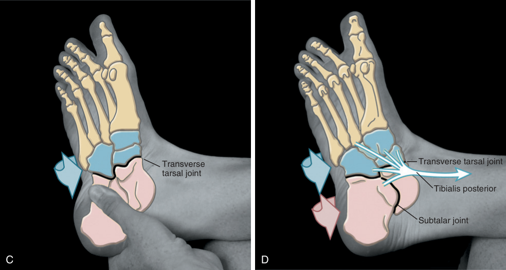
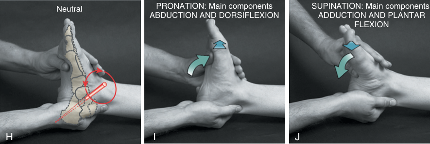
Động học khớp của sấp và ngửa được mô tả ở trên giả định rằng bàn chân không chịu trọng lượng, tức là nhấc khỏi mặt đất. Thách thức là hiểu được động học khớp này khi bàn chân tiếp xúc mặt đất, điển hình là trong quá trình đi bộ. Chủ đề này sẽ được đề cập sau trong chương này.
Hình 14.28 cho thấy vị trí của các vòm dọc trong và vòm ngang (transverse arch) của bàn chân. Cả hai vòm đều đóng góp những yếu tố thiết yếu về độ ổn định và khả năng đàn hồi cho bàn chân chịu trọng lượng. Cấu trúc và chức năng của vòm dọc trong được đề cập trong phần này. Vòm ngang sẽ được mô tả sau, trong phần nghiên cứu các khớp liên đốt bàn chân xa.
Vòm dọc trong đi theo đường cong lõm đặc trưng của "mu bàn chân" ở mặt trong của bàn chân. Đây là cấu trúc chính chịu tải và hấp thụ sốc của bàn chân. Các xương góp phần tạo nên cấu trúc vòm dọc trong gồm xương gót (calcaneus), xương sào (talus), xương thuyền (navicular), các xương nêm (cuneiforms), và ba xương đốt bàn chân trong cùng liên quan. Một số mô liên kết giúp duy trì hình dạng của vòm trong (được mô tả sau trong chương này). Nếu không có cấu hình vòm này, các lực lớn và được tạo ra nhanh chóng tác động lên bàn chân khi chạy bộ hoặc hành quân, chẳng hạn, rất có thể vượt quá khả năng chịu tải sinh lý của các xương. Các cấu trúc bổ sung hỗ trợ vòm trong hấp thụ tải trọng gồm các đệm mỡ gan bàn chân (plantar fat pads), các xương mè (sesamoid bones) nằm ở đáy gan của ngón cái, và mạc gan bàn chân nông (superficial plantar fascia) (vốn bám chủ yếu vào lớp biểu bì dày phủ lên trên, có chức năng chủ yếu là giảm lực cắt). Như sẽ được mô tả, vòm dọc trong và các mô liên kết liên quan là nguồn hỗ trợ cơ học chính cho bàn chân trong các điều kiện tải trọng thấp hoặc gần tĩnh — ví dụ, khi đứng thoải mái. Tuy nhiên, ngay cả sau nhiều thập kỷ nghiên cứu, các tài liệu vẫn còn khác biệt về mức độ hỗ trợ cơ chủ động thực sự cần thiết để duy trì hình dạng của vòm khỏe mạnh khi đứng thơ thẩy.* Hai kết luận có thể rút ra từ các tài liệu là: hoạt động cơ cần thiết để duy trì chiều cao của vòm bình thường khi đứng yên có sự biến đổi lớn, và tương đối nhỏ so với sự hỗ trợ do các mô liên kết cung cấp. Hơn nữa, cần một mức lực cơ đáng kể khi vòm bị đặt dưới các tình huống tải trọng lớn hoặc động, chẳng hạn như đứng trên đầu ngón chân, đi bộ, nhảy, hoặc chạy. Phần tiếp theo mô tả cơ chế hỗ trợ thụ động do vòm dọc trong cung cấp. Vai trò của cơ trong việc cung cấp hỗ trợ chủ động được mô tả sau, trong phần nghiên cứu các cơ của cổ chân và bàn chân.
* Tài liệu tham khảo 10, 11, 49, 65, 72, 92, 114
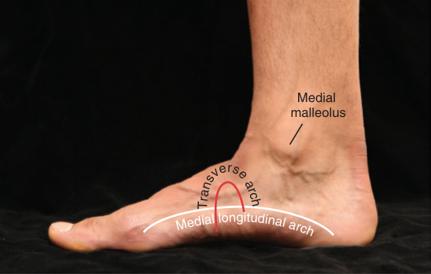
Khớp sào–thuyền và các mô liên kết liên quan tạo thành viên đá góc (keystone) của vòm dọc trong. Các cấu trúc không cơ bổ sung chịu trách nhiệm duy trì chiều cao và hình dạng tổng quát của vòm là mạc gan bàn chân (plantar fascia), dây chằng lò xo (spring ligament), và khớp đốt bàn chân đầu tiên (first tarsometatarsal joint). Mạc gan bàn chân cung cấp sự hỗ trợ thụ động chính cho vòm dọc trong. Mô liên kết đặc này phủ lên gan và các mặt bên của bàn chân, được tổ chức thành các sợi nông và sợi sâu. Các sợi nông, đã được giới thiệu trước đó, hòa lẫn chủ yếu với lớp biểu bì dày nằm phía trên của mặt gan bàn chân. Mạc gan bàn chân sâu (deep plantar fascia) rộng hơn và dày hơn (hay còn gọi là cân mạc, aponeurosis) bám ở phía sau vào mỏm trong của mỏm gót (calcaneal tuberosity) (e-Hình 14.1). Mô này, dày 2 đến 2,5 mm, gồm một chuỗi các băng dọc và ngang giàu collagen. Mạc cực kỳ chắc, có khả năng chịu khoảng 810 N (hơn 180 lb) lực căng trước khi bị kéo dãn vĩnh viễn. Từ điểm bám chắc chắn của mô vào xương gót, các nhóm sợi ngoài, trong và giữa chạy về phía trước, hòa lẫn với và phủ lên lớp đầu tiên của các cơ bàn chân (intrinsic muscles). Nhóm sợi giữa chính, lớn hơn, kéo dài về phía các đầu xương đốt bàn chân, tại đó chúng cuối cùng hòa lẫn với các phiến gan (plantar plates, tức các dây chằng) của các khớp bàn chân–đốt ngón (metatarsophalangeal joints), các bao xơ của gân gập các ngón, và mạc phủ lên mặt gan của các ngón chân. Do đó, việc duỗi các ngón chân sẽ làm căng các sợi giữa của mạc sâu, tăng thêm độ căng cho vòm dọc trong. Cơ chế này hữu ích vì nó làm tăng độ căng của vòm khi một người đứng trên đầu ngón chân, hoặc trong giai đoạn đẩy muộn của chu kỳ đi.
Khi một người đứng bình thường, trọng lượng của cơ thể dồn qua bàn chân gần vùng khớp sào–thuyền. Tải trọng này được phân bố về trước và về sau dọc theo vòm dọc trong, cuối cùng truyền đến các đệm mỡ và lớp mô dày.
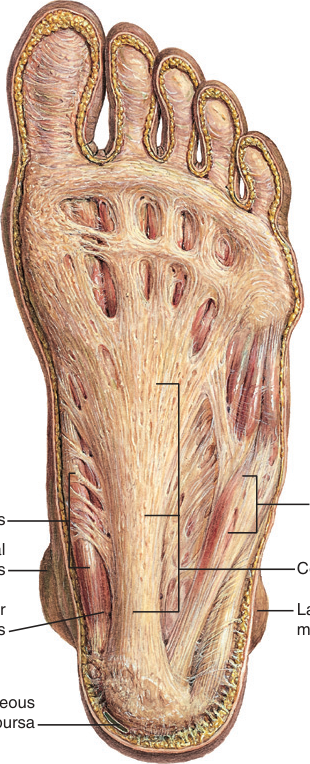
Khi vòm bị ép thấp xuống, bàn chân sau thường sấp thêm một vài độ. Điều này thể hiện rõ nhất từ mặt nhìn sau, khi xương gót lật ngoài nhẹ so với xương chày. Khi bàn chân được dỡ tải, chẳng hạn như khi chuyển trọng lượng cơ thể sang chân kia trong lúc đi bộ, vòm vốn đàn hồi và linh hoạt tự nhiên trở lại độ cao ban đầu đã được nạp sẵn. Xương gót lật trong nhẹ trở lại vị trí trung tính, cho phép cơ chế lặp lại chức năng hấp thụ sốc một lần nữa.
Như đã nêu ở trên, chiều cao và hình dạng của vòm dọc trong được kiểm soát chủ yếu bởi các ràng buộc thụ động từ các mô liên kết được minh họa bằng lò xo trong Hình 14.29A. Sự hỗ trợ cơ chủ động khi đứng yên tương đối nhỏ và có sự biến đổi, có thể được coi là "đường hỗ trợ thứ hai" — ví dụ, để kiểm soát sự dao động tư thế, chuyển từ đỡ bằng hai chân sang một chân, nâng đỡ tải trọng tương đối nặng, hoặc khi vòm thiếu sự hỗ trợ vốn có do các mô liên kết bị kéo dãn quá mức hoặc suy yếu.
Bàn chân phẳng (pes planus) hay "bàn chân dẹt" (flatfoot) mô tả tình trạng vòm dọc trong bị tụt thấp mạn tính hoặc thấp bất thường. Tình trạng này thường là kết quả của sự lỏng lẻo khớp trong vùng bàn chân giữa hoặc bàn chân trước gần, điển hình là kết hợp với mạc gan bàn chân, dây chằng lò xo và gân cơ chày sau bị kéo dãn quá mức, rách, hoặc suy yếu. Hệ quả là khớp dưới sào bị sấp quá mức, khiến bàn chân sau giả định một tư thế valgus phóng đại (xương gót lật ngoài ra xa đường giữa). Ngoài ra, bàn chân trước thường bị dạng ngoài quá mức. Thường thì xương sào và xương thuyền bị tụt thấp cọ xát vào mặt trong của giày dép, tạo thành chai ở vùng da kề cận.
Hình 14.29B cho thấy bàn chân của một người bị bàn chân phẳng. Vùng bàn chân giữa rộng bất thường thể hiện rõ trên dấu chân là dấu hiệu của sự lỏng lẻo quá mức trong các khớp vốn nâng đỡ vòm. Một người bị bàn chân phẳng mức độ trung bình hoặc nặng thường có khả năng nâng đỡ và tiêu tán tải trọng qua bàn chân bị suy giảm. Có thể cần các lực chủ động đáng kể từ các cơ bàn chân và cơ ngoại lai để bù đắp cho sự thiếu độ căng ở các mô liên kết bị kéo dãn quá mức hoặc suy yếu. Hoạt động cơ đáng kể có thể cần thiết ngay cả khi đứng yên, điều này có thể góp phần gây mệt mỏi và các triệu chứng do sử dụng quá mức khác nhau, bao gồm đau chung ở bàn chân và cẳng chân, gai xương (bone spurs), và mạc gan bàn chân dày lên và bị viêm.
Bàn chân phẳng thường được mô tả là biến dạng cứng hoặc biến dạng mềm (linh hoạt), mặc dù nhiều tình trạng không cực đoan như các thuật ngữ này gợi ý. Bàn chân bị bàn chân phẳng cứng (như thể hiện trong Hình 14.29B) cho thấy vòm bị tụt ngay cả ở các tư thế không chịu trọng lượng. Biến dạng này thường là bẩm sinh, thứ phát sau dị tật xương hoặc khớp, chẳng hạn như dính xương cổ chân (tarsal coalition) (tức là sự hợp nhất một phần của xương gót với xương sào bị cố định ở tư thế lật ngoài). Bàn chân phẳng cũng có thể xảy ra do liệt co cứng và sự kéo quá mức kết quả từ một số cơ. Vì tính chất cố định và khả năng gây các triệu chứng đau, bàn chân phẳng cứng ở trẻ em có thể cần chỉnh sửa bằng phẫu thuật.
Bàn chân phẳng linh hoạt là dạng phổ biến hơn của vòm bị tụt. Vòm dọc trong có vẻ gần như bình thường khi không chịu trọng lượng nhưng tụt quá mức khi chịu trọng lượng. Bàn chân phẳng linh hoạt thường liên quan đến sự lỏng lẻo của lớp biểu bì nâng đỡ tại chỗ ở gót và ở bàn (vùng đầu xương đốt bàn chân) của bàn chân (Hình 14.29A). Thông thường, bàn chân sau nhận tải trọng nén lớn gấp khoảng hai lần bàn chân trước. Áp lực trung bình dưới bàn chân trước thường lớn nhất ở vùng đầu của xương đốt bàn chân thứ hai và thứ ba.
Trong khi đứng, trọng lượng cơ thể đẩy xương sào xuống dưới, làm vòm dọc trong thấp đi một chút. Mức độ tụt của vòm khi chịu trọng lượng có thể được đo lâm sàng bằng khoảng cách giữa mặt đất và mỏm thuyền, một phép đo tĩnh được gọi là "phép thử tụt xương thuyền" (navicular drop test). Sự tụt của vòm (trung bình khoảng 7 mm ở nam giới trưởng thành khỏe mạnh) làm tăng khoảng cách giữa xương gót và các đầu xương đốt bàn chân. Độ căng trong các mô liên kết bị kéo dãn, đặc biệt là mạc gan bàn chân sâu, hoạt động như một thanh giằng bán đàn hồi "nhường" nhẹ dưới tải trọng, chỉ cho phép vòm tụt rất ít (xem lò xo bị kéo căng trong Hình 14.29A). Hoạt động như một giàn chống (truss), thanh giằng nâng đỡ và hấp thụ trọng lượng cơ thể. Các thí nghiệm trên mẫu tử thi cho thấy mạc gan bàn chân sâu là cấu trúc chính duy trì chiều cao của vòm dọc trong; cắt mạc làm giảm độ cứng của vòm đi 25%.
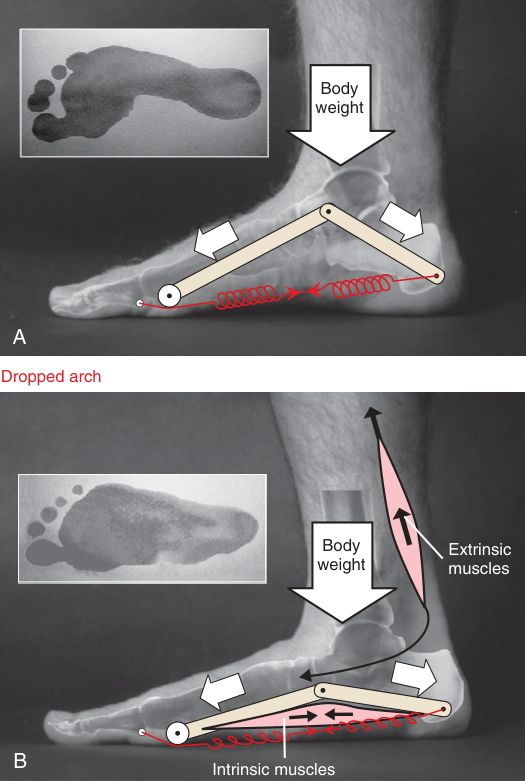
Trong khi chịu tải trọng của trọng lượng cơ thể, sự chỉnh trục và chiều cao liên quan của vòm bàn chân có thể được phân loại rộng rãi thành bàn chân phẳng (pes planus), bàn chân thẳng (pes rectus — chỉnh trục bình thường hoặc tối ưu), hoặc bàn chân vòm cao (pes cavus). Phân loại này có thể được xác định thông qua các phép đo goniometry (ví dụ, varus bàn chân sau khi đứng), chiều cao và tính linh hoạt của vòm dọc trong, hoặc các kiểu tải trọng gan bàn chân tĩnh hoặc động khi đi bộ. Bàn chân vòm cao ít phổ biến hơn bàn chân phẳng, xuất hiện ở khoảng 20% dân số khỏe mạnh không có triệu chứng. Ở dạng ít phức tạp nhất, bàn chân vòm cao mô tả vòm dọc trong được nâng bất thường, thường đi kèm với varus bàn chân sau quá mức (lật trong) (Hình 14.30). Valgus bàn chân trước quá mức (lật ngoài) cũng có thể hiện diện, thường như một cơ chế bù trừ để giữ bàn chân trước phía trong tiếp xúc chặt với mặt đất.
Bàn chân vòm cao có thể cố định hoặc tiến triển và có thể biểu hiện từ thời sơ sinh, đầu tuổi thơ, hoặc muộn hơn trong cuộc đời. Nhiều dạng nhẹ của bàn chân vòm cao được coi là vô căn với khuynh hướng di truyền mạnh, chẳng hạn như đối tượng được thể hiện trong Hình 14.30. Các hạn chế chức năng liên quan đến bàn chân vòm cao nhẹ hoặc tinh tế dao động từ không có đến rõ rệt. Vòm bị nâng mạn tính làm giảm diện tích tiếp xúc giữa mặt gan của bàn chân và mặt sàn, đồng thời dịch chuyển trung tâm áp lực gan bàn chân sang phía ngoài khi đi bộ. Như thể hiện trong Hình 14.30, vòm cao bất thường còn đặt các xương đốt bàn chân ở góc lớn hơn so với mặt đất. Khi kết hợp với diện tích tiếp xúc gan bàn chân bị giảm, áp lực gan bàn chân thường tăng lên và dịch chuyển ra phía trước qua bàn chân trước (so với pes rectus hoặc bàn chân phẳng). Vì lý do này, những người bị bàn chân vòm cao rõ rệt có thể bị đau (đau đốt bàn chân, metatarsalgia) và hình thành chai ở vùng đầu các xương đốt bàn chân.
TẬP TRUNG ĐẶC BIỆT 14.4 — Bàn chân vòm cao: Vòm dọc trong được nâng bất thường (Pes Cavus—Abnormally Raised Medial Longitudinal Arch)
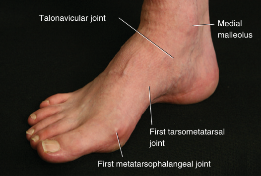
Hơn nữa, về mặt lý thuyết, một bàn chân có vòm được nâng mạn tính (và tương đối cứng) không thể hấp thụ tối ưu các cú va chạm lặp đi lặp lại của việc đi bộ và chạy. Do đó, một người bị bàn chân vòm cao đáng kể có thể có nguy cơ cao hơn phát triển các chấn thương liên quan đến ứng suất trong bàn chân và chi dưới.
Cũng tồn tại các trường hợp bàn chân vòm cao nặng hơn — nhiều trường hợp trong số đó có nguyên nhân đã biết. Bàn chân vòm cao có thể là hậu chấn thương, do ví dụ như gãy xương nặng, chấn thương do ép, hoặc bỏng. Dị tật "bàn chân khò khè" (clubfoot) bẩm sinh không được giải quyết từ thời thơ ấu có thể tồn tại về sau thành bàn chân vòm cao. Có lẽ những trường hợp bàn chân vòm cao phức tạp và suy nhược nhất có nguồn gốc thần kinh, chẳng hạn như bệnh Charcot-Marie-Tooth, bại liệt (poliomyelitis), bại não (cerebral palsy), hoặc tổn thương dây thần kinh ngoại biên. Mặc dù thường vì nhiều lý do khác nhau, các rối loạn thần kinh này thường dẫn đến sự mất cân bằng lực cơ trong bàn chân, cuối cùng gây ra biến dạng bàn chân vòm cao. Ví dụ, cơ chày sau và cơ mác dài bị co cứng hoặc chiếm ưu thế theo cách khác, kết hợp với cơ chày trước bị suy yếu hoặc liệt, cuối cùng ủng hộ sự phát triển của biến dạng varus bàn chân sau và valgus bàn chân trước. Cơ chày trước bị suy yếu cũng có thể cho phép cơ mác dài kéo quá mức xương đốt bàn chân đầu tiên vào gập lòng bàn chân quá mức. Sự kết hợp giữa varus bàn chân sau, valgus bàn chân trước, và xương đốt bàn chân đầu tiên bị gập lòng bàn chân quá mức thường là những đặc điểm nổi bật hơn của bàn chân vòm cao thần kinh. Các lựa chọn điều trị dựa trên cơ học khác nhau tùy theo tuổi, nguyên nhân hữu cơ và mức độ liên quan, nhưng có thể kết hợp trị liệu thể chất, sử dụng nẹp chỉnh hình, hoặc phẫu thuật chuyển gân.
Điều trị bảo tồn bàn chân vòm cao bẩm sinh không do thần kinh (bàn chân khò khè, clubfoot) có thể bao gồm sử dụng trị liệu thể chất, kéo giãn các cơ bị ngắn (bao gồm cơ bắp chân [gastrocnemius] và cơ dép [soleus] vốn thường bị ngắn), và sử dụng giày dép chuyên dụng hoặc dụng cụ chỉnh hình. Ở trẻ sơ sinh và trẻ em, các phương pháp này đã được sử dụng kết hợp với phương pháp Ponseti, dựa trên công trình ban đầu của Ignacio V. Ponseti, một bác sĩ phẫu thuật chỉnh hình người Tây Ban Nha đã thực hiện phần lớn công trình của mình tại Đại học Iowa. Phương pháp điều trị được tôn trọng rộng rãi này thường yêu cầu một chuỗi 5–7 lần bột thạch cao (plaster casts) áp dụng cho bàn chân khò khè tương đối mềm dẻo của trẻ sơ sinh, với mỗi lần bột tiếp theo giữ bàn chân ở vị trí gần với bình thường hơn. Việc áp dụng bột và thao tác nhẹ nhàng (và rất cụ thể) trên bàn chân cần được thực hiện bởi một người được đào tạo, vì quá trình này đòi hỏi kiến thức về giải phẫu và bệnh lý động học cơ bản của bàn chân khò khè. Ngoài ra, thường cần cắt gân qua da (percutaneous tenotomy) gân Achilles bị co lại. Sự thành công của phương pháp điều trị tương đối bảo tồn này dựa trên việc sử dụng kéo dài vào ban đêm một nẹp "xoay ngoài" (kiểu Denis Browne) để duy trì sự chỉnh sửa. Trong các trường hợp nặng hơn hoặc phức tạp hơn, có thể chỉ định phẫu thuật mở rộng nếu các phương pháp bảo tồn do người được đào tạo thực hiện không thành công.
Bàn chân phẳng mềm (flexible pes planus) thường liên quan đến chùng nhão của các mô liên kết hỗ trợ tại chỗ, yếu hoặc đau cơ nói chung ở những cơ có thể nâng đỡ vòm bàn chân, hoặc các cơ chế bù trừ gây sấp (pronation) quá mức của bàn chân. Phẫu thuật rất hiếm khi được chỉ định cho bàn chân phẳng mềm. Điều trị thường ở dạng cung cấp đế chỉnh hình (orthosis), sử dụng giày dép chuyên dụng và thực hiện các bài tập tăng cường sức mạnh cho các cơ ở bàn chân và khắp chi dưới.
Cuối cùng, cần lưu ý rằng mặc dù hình ảnh được mô tả trong Hình 14.29B cung cấp cái nhìn hữu ích về cơ chế bệnh lý tổng thể liên quan đến bàn chân phẳng (pes planus), nó chỉ cung cấp thông tin chức năng hạn chế vì đối tượng chỉ đơn giản đứng ở tư thế thoải mái — đặt áp lực tương đối thấp lên bàn chân. Để đánh giá chi tiết và thực tế hơn về cách bàn chân phẳng ảnh hưởng đến cơ học của bàn chân, cần có một phân tích ba chiều động về bề mặt tiếp xúc giữa bàn chân và mặt đất trong suốt toàn bộ giai đoạn đỡ (stance phase) của dáng đi. Việc đánh giá này đòi hỏi một hệ thống đo lường khá phức tạp, trong đó đối tượng phải đi qua một tấm thảm hoặc sàn chuyên dụng được lắp đặt các cảm biến nhạy với lực hoặc áp lực, thường kết hợp với một phương pháp thu thập đồng thời dữ liệu động học ba chiều của chi dưới. Hệ thống này có thể thu thập dữ liệu về quỹ đạo của "trung tâm áp lực" (center of pressure) trên mặt lòng bàn chân (Chương 15), lực phản ứng tổng thể của mặt đất (ground reaction force), chiều cao tức thời của vòm dọc trong (medial longitudinal arch), cũng như động học lật ngoài và lật trong của bàn chân sau (rearfoot) và các vùng khác của chi dưới. Về mặt lý thuyết, loại thông tin này có thể giúp xác định tác động chức năng mà tình trạng bàn chân phẳng có thể có đối với các mô tại chỗ ở cổ chân và bàn chân của đối tượng, và gián tiếp, đối với các vùng khác của cơ thể. Mặc dù hệ thống đo lường phức tạp hơn này thường không có sẵn ở hầu hết các cơ sở lâm sàng, dữ liệu thu được trong môi trường nghiên cứu có thể rất mang tính gợi mở. Ví dụ, ngay cả khi vòm bàn chân có vẻ hoàn toàn phẳng khi đứng, một số thay đổi cơ hoặc động học nhất định trong quá trình đi lại có thể bù trừ cho một phần các tác động có hại tiềm tàng khác của bàn chân phẳng. Những sự bù trừ tự nhiên này có thể giải thích một phần lý do tại sao một số người khỏe mạnh đáp ứng tiêu chuẩn bàn chân phẳng lại không có triệu chứng đau khi đi lại. Tuy nhiên, những sự bù trừ này có thể là ngoại lệ thay vì quy luật, vì khi được nghiên cứu trên một quần thể rất lớn, bàn chân phẳng và sấp bàn chân quá mức khi đi lại đã có tương quan có ý nghĩa thống kê với đau ở bàn chân và lưng dưới.
Khi bàn chân không chịu trọng lượng (tức là không chịu tải), sấp (pronation) xoay gan bàn chân ra ngoài, trong khi ngửa (supination) xoay gan bàn chân vào trong. Tuy nhiên, khi bàn chân chịu tải trong giai đoạn đỡ của dáng đi, sấp và ngửa cho phép chân và xương sào (talus) xoay trong cả ba mặt phẳng so với xương gót (calcaneus) tương đối cố định. Cơ chế quan trọng này được điều phối chủ yếu thông qua sự tương tác giữa khớp dưới sào (subtalar joint), khớp ngang cổ chân (transverse tarsal joint) và vòm dọc trong. Còn nhiều điều cần được tìm hiểu về chủ đề phức tạp này.
Ở bàn chân khỏe mạnh, vòm dọc trong nhấc lên và hạ xuống theo chu kỳ trong suốt chu kỳ đi (gait cycle). Trong hầu hết giai đoạn đỡ, vòm bàn chân hạ thấp nhẹ để đáp ứng với việc tải trọng cơ thể tăng dần (Hình 14.31A). Các cấu trúc chống lại sự hạ thấp của vòm hấp thụ ứng suất tại chỗ khi bàn chân bị nén dần dưới trọng lượng cơ thể. Cơ chế giảm tải này mang lại sự bảo vệ thiết yếu cho bàn chân và chi dưới chống lại chấn thương do quá tải liên quan đến ứng suất.
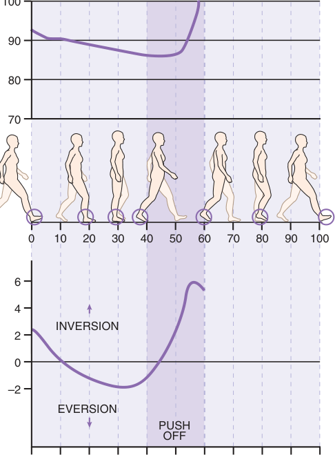
Trong 30% đến 35% đầu của chu kỳ đi, khớp dưới sào sấp (lật ngoài), làm tăng tính linh hoạt của bàn chân giữa (xem Hình 14.31B). Đến cuối giai đoạn đỡ, vòm bàn chân nhấc lên nhanh chóng khi khớp dưới sào lúc này đang ngửa tạo độ cứng cho bàn chân giữa. Độ cứng này chuẩn bị cho bàn chân nâng đỡ các tải trọng lớn phát sinh ở đỉnh của giai đoạn đẩy. Khả năng của bàn chân chuyển đổi lặp đi lặp lại từ một cấu trúc linh hoạt, hấp thụ sốc sang một đòn bẩy cứng hơn trong mỗi chu kỳ đi là một trong những vận động quan trọng và có ý nghĩa lâm sàng nhất của bàn chân. Như sẽ được mô tả sau, khớp dưới sào là khớp chính điều hướng động học sấp và ngửa của bàn chân.
Ngay sau giai đoạn chạm gót của dáng đi, khớp cổ chân (talocrural joint) đang gập mu bàn chân và khớp dưới sào hơi ngửa lần lượt gập lòng bàn chân (plantar flex) và sấp nhanh chóng (xem các Hình 14.19 và 14.31B). Mặc dù các dữ liệu được vẽ trong Hình 14.31B chỉ cho thấy khoảng 4 độ vận động theo hướng lật ngoài (sấp) giữa 0 và 30 độ của chu kỳ đi, các nguồn dữ liệu khác sử dụng những đối tượng không có triệu chứng (có chiều cao vòm trong bình thường) lại báo cáo các giá trị trong khoảng 5 đến 9 độ. Sự khác biệt trong cách xác định vị trí 0 độ của khớp dưới sào, quy mô mẫu và loại bàn chân khác nhau, cùng các kỹ thuật đo lường khác nhau, giải thích phần lớn sự không nhất quán này trong các tài liệu. Vì lý do đó, thường rất khó xác định cụ thể thế nào là lật ngoài (sấp) "bất thường" khi đi lại.
Biên độ sấp tại khớp dưới sào trong giai đoạn đỡ sớm đến giữa của dáng đi quả thực tương đối nhỏ, chỉ xảy ra trong một phần tư giây khi đi ở tốc độ trung bình. Tuy nhiên, mức độ và tốc độ của sấp lại ảnh hưởng đến động học của các khớp gần hơn ở phía trên của chi dưới. Những ảnh hưởng này có thể dễ dàng nhận ra bằng cách phóng đại và làm chậm đáng kể động tác sấp của bàn chân sau trong giai đoạn tải trọng ban đầu của dáng đi. Hãy xem xét minh họa trong Hình 14.32. Khi đứng trên một bàn chân đã chịu tải và cố định, hãy xoay trong mạnh nhưng chậm chi dưới và quan sát sự sấp liên quan tại bàn chân sau (khớp dưới sào) cùng sự hạ thấp đồng thời của vòm dọc trong. Nếu đủ mạnh, động tác này cũng có xu hướng xoay trong, gập nhẹ và khép hông, đồng thời tạo ứng suất valgus ở gối (Bảng 14.5). Những sự kiện cơ học này thực sự được phóng đại và không phải tất cả đều xảy ra ở mức độ và kiểu hình đó khi đi ở tốc độ bình thường. Tuy nhiên, do các liên kết khắp chi dưới, sấp quá mức hoặc không kiểm soát được của bàn chân sau có thể làm trầm trọng thêm một hoặc nhiều vận động khớp có liên quan cơ học này. Về mặt lâm sàng, một người sấp quá mức trong giai đoạn đỡ sớm có thể kêu đau mặt trong của gối, có thể do ứng suất valgus quá mức đặt lên gối và sự kéo giãn quá mức sau đó của dây chằng bên chày (medial collateral ligament). Việc sấp quá mức gây căng quá mức dây chằng bên chày hay ngược lại đôi khi không rõ ràng.
| Khớp hoặc vùng (Joint or Region) | Vận động (Action) |
|---|---|
| Hông (Hip) | Xoay trong, gập và khép (Internal rotation, flexion, and adduction) |
| Gối (Knee) | Tăng ứng suất valgus (Increased valgus stress) |
| Bàn chân sau (Rearfoot) | Sấp (lật ngoài) kèm hạ thấp vòm dọc trong (Pronation [eversion] with a lowering of medial longitudinal arch) |
| Bàn chân giữa và bàn chân trước (Midfoot and forefoot) | Ngửa (lật trong) (Supination [inversion]) |
TẬP TRUNG ĐẶC BIỆT 14.5 — Ví dụ về tính đa năng của động học bàn chân (Example of the Kinematic Versatility of the Foot)
Trước đó trong phần này đã nêu rằng sấp của bàn chân không chịu tải chủ yếu xảy ra như một sự cộng dồn của sấp tại cả khớp dưới sào và khớp ngang cổ chân (xem lại Hình 14.26B). Tuy nhiên, sự cộng dồn vận động này không nhất thiết xảy ra khi bàn chân chịu tải trọng của cơ thể. Khi bàn chân chịu tải hoặc được cố định trên mặt đất, việc sấp bàn chân sau có thể khiến các vùng bàn chân giữa và bàn chân trước — vốn nhận được một lực cản ngược lên chắc chắn từ mặt đất — xoay sang thế ngửa tương đối (xem Hình 14.32). Mối quan hệ động học tương hỗ này giữa bàn chân sau và các vùng phía trước hơn của bàn chân cho thấy tính đa năng của bàn chân: khuếch đại vận động của vùng kia khi bàn chân không chịu tải (xem Hình 14.26B) hoặc đối kháng với vận động của vùng kia khi bàn chân chịu tải (xem Hình 14.32).
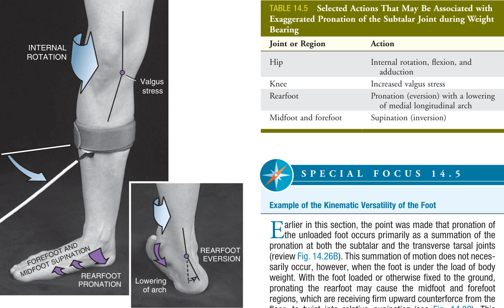
Sấp (lật ngoài) tại khớp dưới sào trong giai đoạn đỡ xảy ra chủ yếu qua hai cơ chế. Thứ nhất, xương gót nghiêng nhẹ sang lật ngoài để đáp ứng với lực phản ứng của mặt đất đi lên và nằm ngay bên ngoài điểm giữa của xương gót phía sau. Tác động đồng thời của chạm gót cũng đẩy đầu xương sào về phía trong trong mặt phẳng ngang và xuống dưới trong mặt phẳng đứng dọc. So với xương gót, chuyển động này của xương sào làm dạng (abduct) và gập mu bàn chân (nhẹ) khớp dưới sào. Các vận động này phù hợp với định nghĩa chính thức của sấp. Một mô hình bộ xương lỏng lẻo giúp hình dung chuyển động này. Thứ hai, trong giai đoạn đỡ sớm, xương chày và xương mác, và ở mức thấp hơn là xương đùi, xoay trong sau khi chạm gót ban đầu. Nhờ cấu hình ôm sát của khớp cổ chân, cẳng chân đang xoay trong dẫn khớp dưới sào sấp thêm. Người ta thường lập luận rằng khi xương gót tiếp xúc với mặt đất, sấp tại khớp dưới sào gây ra thay vì đi sau sự xoay trong của chân; một trong hai cách nhìn đều có giá trị.
Dù đã có hàng thập kỷ nghiên cứu, vẫn chưa thiết lập được dứt khoát một mối quan hệ động học có thể dự báo giữa mức độ và thời điểm của sấp quá mức với xoay trong quá mức khắp chi dưới. Cần thêm các nghiên cứu trong lĩnh vực này trước khi biết rõ các mối quan hệ nhân–quả xác định. Những mối quan hệ này quan trọng vì chúng là cơ sở cho nhiều bài tập và cho việc sử dụng đế chỉnh hình nhằm giảm các tình trạng đau liên quan đến sấp quá mức hoặc sấp không kiểm soát tốt.
Một mức sấp có kiểm soát và hạn chế của khớp dưới sào trong suốt giai đoạn đỡ giữa của dáng đi có một số tác dụng sinh cơ học hữu ích. Sấp tại khớp dưới sào cho phép xương sào và toàn bộ chi dưới xoay trong nhẹ sau khi xương gót đã chạm đất. Hướng nằm ngang chắc chắn của các mặt khớp tại khớp dưới sào chắc chắn tạo thuận lợi cho vận động này. Nếu không có cơ chế khớp như vậy, mặt lòng của xương gót sẽ "xoay" như một con quay trẻ em trên mặt đất đi lại, cùng với chân đang xoay trong. Kích hoạt lệch tâm (eccentric) các cơ ngửa, chủ yếu là cơ chày sau (tibialis posterior), có thể giúp làm chậm sấp và chống lại sự hạ thấp của vòm dọc trong. Sấp có kiểm soát của khớp dưới sào ưu tiên tính linh hoạt tương đối của bàn chân giữa, cho phép bàn chân thích ứng với nhiều hình dạng và đường nét khác nhau của mặt đất khi đi.
Có vô số ví dụ về cách sai lệch cấu trúc trong bàn chân ảnh hưởng đến động học của dáng đi. Một tình huống thường gặp bắt nguồn từ sấp quá mức, kéo dài hoặc không kiểm soát tốt tại khớp dưới sào (bàn chân sau) trong giai đoạn đỡ. Hệ quả là quỹ đạo của trung tâm áp lực lòng bàn chân rơi về phía trong hơn trên gan bàn chân so với bàn chân vòm bình thường hoặc vòm cao. Sau nhiều lần lặp lại chu kỳ đi, ứng suất tích lũy có thể hình thành trong bàn chân phía trong và cuối cùng gây viêm và đau tại chỗ. Các vùng tại chỗ bị ứng suất của bàn chân gồm mạc gan bàn chân (plantar fascia), khớp sào–thuyền (talonavicular joint) (viên gạch then chốt của vòm trong) và gân cơ chày sau.
Cơ chế bệnh lý của bàn chân phẳng có thể bao gồm yếu cơ khắp chi dưới, chùng nhão hoặc yếu của các cơ chế thường nâng đỡ và kiểm soát vòm dọc trong, hoặc hình dạng hoặc tính di động bất thường của các xương cổ chân. Bất kể nguyên nhân, bàn chân sau rơi vào tình trạng valgus (lật ngoài) quá mức sau khi chạm gót, trong một số trường hợp gấp đôi mức bình thường. Sấp quá mức tại khớp dưới sào có thể là sự bù trừ cho vận động quá mức hoặc bị hạn chế khắp chi dưới, đặc biệt trong mặt phẳng trán và mặt phẳng ngang.
Nghịch lý thay, một trong những biến dạng cấu trúc thường gặp nhất ở bàn chân sấp quá mức là bàn chân sau bị lật trong (varus) tương đối cố định. (Varus mô tả một đoạn của bàn chân bị lật vào phía đường giữa.) Để đáp ứng với bàn chân sau lật trong, khớp dưới sào thường bù trừ quá mức bằng cách sấp quá mức về tốc độ và/hoặc biên độ, nhằm bảo đảm mặt trong của bàn chân trước tiếp xúc với mặt đất trong giai đoạn đỡ. Những sự bù trừ tương tự có thể xảy ra với biến dạng bàn chân trước lật trong. Việc biến dạng bàn chân trước lật trong gây ra hay là hệ quả của sấp quá mức ở bàn chân sau đôi khi không rõ ràng.
Như đã mô tả trước đó, sấp bàn chân sau quá mức thường liên quan đến xoay trong quá mức (trong mặt phẳng ngang) của xương sào và chân khi đi lại. Một vận động như vậy có thể tạo ra một "phản ứng dây chuyền" (chain reaction) gồm các rối loạn động học và sự bù trừ khắp toàn chi, chẳng hạn như những gì được mô tả trong Hình 14.32. Ví dụ, như đã mô tả trong Chương 13, trình tự động học bất thường giữa xương chày và xương đùi có thể làm thay đổi vùng tiếp xúc tại khớp bánh chè–đùi (patellofemoral joint), có thể làm tăng ứng suất tại khớp này. Hơn nữa, lật ngoài bàn chân sau quá mức có thể tạo ứng suất valgus tăng lên ở mặt trong của gối. Những tình huống này có thể khiến một người dễ bị hội chứng đau khớp bánh chè–đùi hoặc mất ổn định. Vì những lý do này, các nhà lâm sàng thường ghi nhận vị trí của khớp dưới sào khi bệnh nhân đứng và đi như một phần của đánh giá nguyên nhân cơ học gây đau khớp bánh chè–đùi hoặc các hội chứng quá tải khác khắp chi dưới, kể cả hông và cột sống.
Cơ chế bệnh lý tiềm ẩn của bàn chân sấp quá mức là mối quan tâm của cả nhóm người chạy bộ và không chạy bộ. Tác động lặp đi lặp lại từ việc chạy và đi quân đội cường độ cao, khối lượng lớn là yếu tố nguy cơ gây gãy xương do stress (stress fracture), thường gặp nhất ở xương thuyền (navicular) và xương chày. Nghiên cứu trên các vận động viên chạy đường dài nữ dân sự cho thấy những người có tiền sử gãy xương chày do stress trước đó biểu hiện lật ngoài bàn chân sau lớn hơn trong giai đoạn đỡ khi chạy so với nhóm đối chứng. Việc lật ngoài quá mức lúc chạm gót có cuối cùng gây ra khả năng gãy xương do stress cao hơn hay không không thể khẳng định chắc chắn, mặc dù không nên bỏ qua khả năng này.
Tóm lại, cơ chế bệnh lý của sấp quá mức có thể liên quan đến nhiều mối quan hệ động học năng động trong các khớp của bàn chân và giữa bàn chân với các khớp ở chi dưới và vùng lưng dưới. Nguồn gốc của cơ chế bệnh lý có thể liên quan đến tương tác giữa hông và gối (được mô tả trong Chương 13) và biểu hiện ở xa dưới dạng tổn thương tại khớp dưới sào. Ngay cả khi cơ chế bệnh lý rõ ràng nằm trong bàn chân, vận động bất thường ở bàn chân trước có thể được bù trừ bằng vận động bất thường ở bàn chân sau và ngược lại. Hơn nữa, các yếu tố ngoại sinh như giày dép, đế chỉnh hình, địa hình và tốc độ đi, chạy làm thay đổi các mối quan hệ động học trong bàn chân và chi dưới. Hiểu được sinh cơ học phức tạp của toàn bộ chi dưới là điều kiện tiên quyết thiết yếu để điều trị hiệu quả bàn chân đau hoặc sai lệch cấu trúc.
Vào khoảng 15% đến 20% của chu kỳ đi, toàn bộ chân đỡ (stance limb) đảo ngược vận động trong mặt phẳng ngang từ xoay trong sang xoay ngoài. Xoay ngoài của chân trong khi bàn chân vẫn bám chặt trùng hợp đại khái với sự bắt đầu của giai đoạn vung (swing phase) ở chi dưới bên đối bên. Với bàn chân đỡ được bám chắc, xoay ngoài của xương đùi, rồi đến xương chày, dần đảo ngược hướng trong mặt phẳng ngang của xương sào từ xoay trong sang xoay ngoài. Kết quả là vào khoảng 30% đến 35% của chu kỳ đi, khớp dưới sào đang sấp (lật ngoài) bắt đầu chuyển mạnh sang ngửa (lật trong) (xem Hình 14.31B). Như được minh họa trong Hình 14.33, khi bàn chân sau ngửa, bàn chân giữa và bàn chân trước phải đồng thời xoay sang sấp tương đối để bàn chân tiếp xúc hoàn toàn với mặt đất. Đến cuối giai đoạn đỡ, khớp dưới sào đã ngửa cùng vòm dọc trong nâng cao và căng sẽ biến bàn chân giữa (và cuối cùng là bàn chân trước) thành một đòn bẩy cứng hơn. Các cơ như cơ bắp chân (gastrocnemius) và cơ dép (soleus) dùng sự ổn định này để truyền lực từ gân Achilles, qua bàn chân giữa, đến các đầu xương đốt bàn chân trong giai đoạn đẩy của dáng đi hoặc chạy.
TẬP TRUNG ĐẶC BIỆT 14.6 — Việc sử dụng đế chỉnh hình bàn chân để kiểm soát sấp quá mức (The Use of a Foot Orthosis for Controlling Excessive Pronation)
Có nhiều mức độ bằng chứng khác nhau ủng hộ giá trị điều trị của việc sử dụng đế chỉnh hình bàn chân cho người bị bàn chân phẳng hoặc các tình trạng khác gây sấp quá mức khi đi hoặc chạy. Bằng chứng còn mạnh hơn cho việc sử dụng đế chỉnh hình bàn chân như một biện pháp phòng ngừa, chẳng hạn giảm tần suất chấn thương quá tải ở chi dưới do tập luyện thể chất cường độ cao, thường gặp ở tân binh quân đội. Một số chấn thương quá tải được cho là liên quan đến sấp quá mức gồm viêm dải chậu–gối (iliotibial tract), hội chứng đau khớp bánh chè–đùi, viêm mạc gan bàn chân (plantar fasciitis), gãy xương do stress và viêm gân Achilles hay gân bánh chè.
Ở dạng cơ bản nhất, đế chỉnh hình kiểm soát sấp kết hợp một nêm trong (medial wedging hoặc posting) ở các vùng cụ thể của bàn chân và một phần mu bàn chân được tạo hình ôm vừa bên trong giày. Nói một cách đơn giản, đế chỉnh hình "đưa mặt đất lên đến bàn chân". Đế chỉnh hình có thể được chế tạo sẵn hoặc được thiết kế riêng rất cao để phù hợp với hình dạng đặc biệt của bàn chân, trọng lượng cơ thể và động thái của vòm bàn chân, hoặc dạng lai của hai loại trên. Không thể xác định dứt khoát loại đế chỉnh hình nào hiệu quả nhất, xét đến nhiều lựa chọn thiết kế và công dụng lâm sàng của nó. Mỗi loại có thể có ưu và nhược điểm riêng về chi phí và chức năng.
Một đế chỉnh hình bàn chân vừa vặn và được thiết kế tốt có thể giảm sấp bàn chân sau ở mức đỉnh trung bình khoảng 2 độ khi đứng, đi và chạy. Tuy nhiên, sự thay đổi động học này không nhất thiết giải thích được cách đế chỉnh hình làm dịu các hội chứng đau hiện có hoặc ngăn ngừa chấn thương quá tải khắp chi dưới. Có thể sự hiện diện của đế chỉnh hình làm giảm yêu cầu đặt lên các cơ (như cơ chày sau), tối ưu hóa sự thẳng hàng của xương và khớp, tạo ra một thay đổi tinh tế trong trình tự động học tại các khớp gần bàn chân hơn, hoặc đơn giản là cung cấp sự nâng đỡ vật lý cho mặt lòng–trong của bàn chân. Dù chưa được hiểu thấu đáo, rất có thể lợi ích điều trị đến từ sự kết hợp của những yếu tố này và các yếu tố khác đã được xác định.
Như một biện pháp bổ trợ cho việc dùng đế chỉnh hình bàn chân để kiểm soát sấp quá mức, các nhà lâm sàng thường nhấn mạnh nhu cầu cải thiện sức mạnh và khả năng kiểm soát của các cơ nội tại và ngoại tại của bàn chân. Khả năng kiểm soát "lệch tâm" (eccentric) lớn hơn đối với các cơ làm chậm sấp và các vận động liên quan khác nối kết cơ học với sấp (chẳng hạn các vận động được liệt kê trong Bảng 14.5) có thể làm giảm tốc độ tải lên các mô khắp chi dưới. Một số cơ ngoại tại này gồm các cơ ngửa của bàn chân (đặc biệt là cơ chày sau) và các cơ xoay ngoài, cơ dạng gần hơn ở hông.
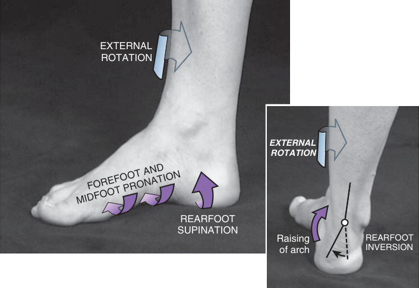
Một người vì lý do nào đó vẫn sấp tương đối đến tận cuối giai đoạn đỡ có thể gặp khó khăn trong việc ổn định bàn chân giữa vào đúng thời điểm tự nhiên cần thiết. Hệ quả là các cơ ngoại tại và nội tại của bàn chân có thể phải hoạt động quá mức để gia cố vòm dọc trong. Theo thời gian, tăng hoạt động có thể dẫn đến mệt mỏi cơ nói chung và các hội chứng "quá tải" đau khắp chi dưới và bàn chân.
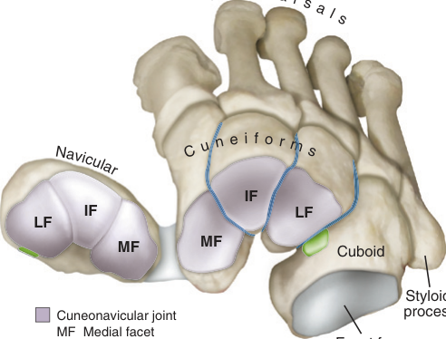
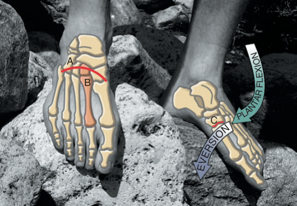
Các khớp liên cổ chân xa là tập hợp của ba khớp hoặc phức hợp khớp, mỗi khớp chiếm một phần của bàn chân giữa (xem lại cách tổ chức các khớp của bàn chân; xem Hình 14.23). Các mặt khớp của các khớp liên cổ chân xa được thể hiện lộ ra và mã hóa màu trong Hình 14.34.
Như một nhóm, các khớp liên cổ chân xa (1) hỗ trợ khớp ngang cổ chân trong việc sấp và ngửa bàn chân giữa và (2) cung cấp sự ổn định ngang qua bàn chân giữa bằng cách tạo thành vòm ngang của bàn chân. Các vận động tại những khớp này rất nhỏ và thường không được đo lường cụ thể trên lâm sàng.
Ba khớp nối được hình thành giữa mặt trước của xương thuyền và mặt sau của ba xương nêm (xem Hình 14.34, màu tím). Các dây chằng lòng bàn chân và mu bàn chân bao quanh các khớp nối này. Các mặt hơi lõm (ngoài, giữa và trong) trên mỗi trong ba xương nêm khít vào một trong ba mặt hơi lồi ở phía trước của xương thuyền. Chức năng chính của khớp nêm–thuyền là giúp chuyển các thành phần của sấp và ngửa về phía xa từ khớp sào–thuyền (talonavicular) đến bàn chân trước.
Khớp khối–thuyền nhỏ, dạng khớp khít xơ (synarthrodial) hoặc đôi khi dạng khớp hoạt dịch, nằm giữa mặt ngoài của xương thuyền và một vùng gần của mặt trong xương khối (xem Hình 14.34, màu xanh lục). Khớp này cung cấp một điểm tiếp xúc tương đối trơn tru giữa các cột dọc trong và ngoài của bàn chân. Các quan sát trên mẫu xác cho thấy các mặt khớp trượt nhẹ lên nhau trong các vận động của bàn chân giữa, đặc biệt là trong lật trong và lật ngoài.
Phức hợp khớp gian nêm và khớp nêm–khối gồm ba khớp nối: hai giữa bộ ba xương nêm và một giữa xương nêm ngoài với mặt trong của xương khối (xem Hình 14.34, màu xanh dương). Các mặt khớp nhìn chung phẳng và được xếp gần song song với trục dài của các xương đốt bàn chân. Các dây chằng lòng bàn chân, mu bàn chân và gian xương gia cố nhóm khớp nối này.
Phức hợp khớp gian nêm và khớp nêm–khối tạo thành vòm ngang của bàn chân (Hình 14.35A). Vòm này cung cấp sự ổn định ngang cho bàn chân giữa. Dưới tải trọng của cơ thể, vòm ngang hạ nhẹ, cho phép trọng lượng cơ thể được chia sẻ qua cả năm đầu xương đốt bàn chân. Vòm ngang nhận sự hỗ trợ từ các cơ nội tại; các cơ ngoại tại như cơ chày sau và cơ mác dài (fibularis longus); các mô liên kết; và viên gạch then chốt của vòm ngang: xương nêm giữa (xem IF trong Hình 14.34).
Các khớp đốt bàn chân–cổ chân thường được gọi là các khớp Lisfranc, theo tên Jacques Lisfranc, một bác sĩ phẫu thuật dã chiến người Pháp trong quân đội của Napoléon, người đã mô tả một ca cắt cụt ở vùng này của bàn chân. Như một nhóm, năm khớp đốt bàn chân–cổ chân tách bàn chân giữa khỏi bàn chân trước (xem lại cách tổ chức các khớp trong Hình 14.23). Các khớp gồm sự nối giữa các đế của xương đốt bàn chân và các mặt xa của ba xương nêm cùng xương khối. Cụ thể, xương đốt bàn chân thứ nhất (trong cùng) nối với xương nêm trong, xương thứ hai nối với xương nêm giữa và xương thứ ba nối với xương nêm ngoài. Đế của xương đốt bàn chân thứ tư và thứ năm đều nối với mặt xa của xương khối.
Các mặt khớp của các khớp đốt bàn chân–cổ chân nhìn chung phẳng, dù hai khớp phía trong có các đường cong nhẹ, không đều. Các dây chằng mu bàn chân, lòng bàn chân và gian xương tăng cường sự ổn định cho các khớp nối này. Chỉ khớp đốt bàn chân–cổ chân thứ nhất có bao khớp phát triển tốt.
Các khớp đốt bàn chân–cổ chân là các khớp nền tảng của bàn chân trước. Tính di động thấp nhất ở khớp đốt bàn chân–cổ chân thứ hai và thứ ba, một phần do các dây chằng chắc và vị trí nêm của đế tia thứ hai giữa xương nêm trong và xương nêm ngoài (xem Hình 14.35B). Hệ quả là tia thứ hai và thứ ba tạo ra một yếu tố ổn định dọc khắp bàn chân, tương tự như tia thứ hai và thứ ba trong bàn tay. Sự ổn định này hữu ích trong giai đoạn đỡ muộn khi bàn chân trước chuẩn bị cho động lực của cú đẩy.
Tính di động tổng thể lớn nhất ở các khớp đốt bàn chân–cổ chân thứ nhất, thứ tư và thứ năm, đặc biệt là khớp thứ nhất (trong cùng). Trong giai đoạn đỡ sớm đến giữa của dáng đi, khớp đốt bàn chân–cổ chân thứ nhất (hoặc toàn bộ cột trong của bàn chân) gập mu bàn chân khoảng 5 độ. Vận động này xảy ra khi trọng lượng cơ thể ép vùng xương nêm xuống dưới, đồng thời mặt đất đẩy đầu xa của tia thứ nhất lên trên. Chuyển động này liên quan đến sự hạ thấp dần của vòm dọc trong — một cơ chế đã được mô tả trước đó giúp hấp thụ ứng suất của trọng lượng cơ thể tác dụng lên bàn chân. Tuy nhiên, ở giai đoạn đỡ muộn (đẩy) của dáng đi, khớp đốt bàn chân–cổ chân thứ nhất gập lòng bàn chân nhanh khoảng 5 độ. Sự gập lòng bàn chân của tia thứ nhất, được kiểm soát một phần bởi sức kéo của cơ mác dài, thực hiện "rút ngắn" nhẹ cột trong của bàn chân, từ đó giúp nâng vòm dọc trong. Cơ chế này tăng sự ổn định của vòm (và của cột trong bàn chân) vào thời điểm trong chu kỳ đi mà bàn chân giữa và bàn chân trước chịu tải trọng cao hơn.
Sự ổn định chức năng tổng thể của khớp đốt bàn chân–cổ chân thứ nhất được xem là một cơ chế quan trọng hỗ trợ vòm dọc trong tiếp nhận và chia sẻ an toàn các tải trọng phát sinh khi đi lại. Sự mất ổn định hoặc di động quá mức của khớp (thường được đánh giá lâm sàng trong mặt phẳng đứng dọc) đã liên quan đến một số bệnh lý của bàn chân, gồm hallux valgus (bunion), viêm xương khớp tại chỗ và bàn chân phẳng. Cơ chế bệnh lý nền tảng của những liên hệ này chưa rõ và khó nghiên cứu.
Hầu hết các tài liệu mô tả một sự ghép nối cơ học tự nhiên của động học tại khớp đốt bàn chân–cổ chân thứ nhất: cụ thể là gập lòng bàn chân xảy ra cùng lật ngoài nhẹ, và gập mu bàn chân cùng lật trong nhẹ. Tính di động thụ động này quả thực dường như xảy ra tự nhiên khi được đánh giá trong điều kiện không chịu trọng lượng (Hình 14.36). Mặc dù những kiểu vận động kết hợp này không phù hợp với định nghĩa chuẩn của sấp hay ngửa, chúng vẫn cung cấp các chức năng hữu ích. Ví dụ, kết hợp gập lòng bàn chân và lật ngoài cho phép mặt trong của bàn chân thích ứng tốt hơn quanh các bề mặt gồ ghề trên mặt đất (xem Hình 14.35C). (Vận động của xương đốt bàn chân thứ nhất này nhìn chung tương tự như vận động của xương đốt bàn tay cái khi bàn tay đang sấp nắm lấy một vật hình cầu lớn.) Còn chính xác những kiểu vận động không điển hình này liên quan chức năng thế nào với động học tổng thể của bàn chân trong khi đi vẫn chưa rõ.
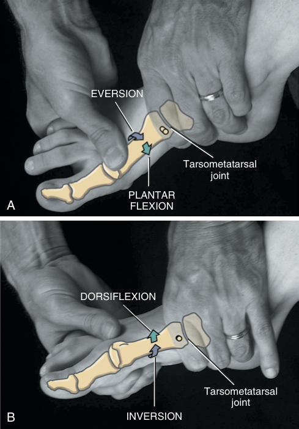
Các dây chằng lòng bàn chân, mu bàn chân và gian xương nối các đế của bốn xương đốt bàn chân ngoài. Những điểm tiếp xúc này tạo thành ba khớp hoạt dịch gian đốt bàn chân nhỏ. Dù được nối với nhau bằng dây chằng, một khớp thực thụ thường không hình thành giữa đế của xương đốt bàn chân thứ nhất và thứ hai. Sự thiếu khớp nối này làm tăng vận động tương đối của tia thứ nhất, theo cách tương tự như ở bàn tay. Tuy nhiên, khác với bàn tay, các dây chằng ngang sâu gian đốt bàn chân nối đầu xa của cả năm xương đốt bàn chân. Vận động nhẹ tại các khớp gian đốt bàn chân làm tăng tính linh hoạt tại các khớp đốt bàn chân–cổ chân.
Năm khớp bàn chân–đốt ngón (metatarsophalangeal joints) được hình thành giữa đầu lồi của mỗi xương đốt bàn chân và chỗ lõm nông ở đầu gần của mỗi đốt ngón gần (xem Hình 14.23). Các khớp này nằm cách các "kẽ ngón" (web spaces) của các ngón chân khoảng 2,5 cm về phía gần.
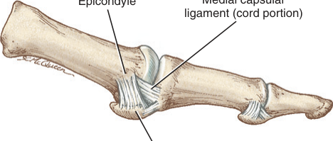
Khi các khớp gập, các đầu xương đốt bàn chân lồi rõ dễ dàng sờ thấy trên mu của bàn chân xa.
Sụn khớp bao phủ đầu xa của mỗi đầu xương đốt bàn chân (Hình 14.37). Một cặp dây chằng bên bắc qua mỗi khớp bàn chân–đốt ngón, hòa lẫn với và gia cố bao khớp. Như ở bàn tay, mỗi dây chằng bên đi chéo từ hướng mu–gần đến hướng lòng–xa, tạo thành một phần dây dày và một phần phụ hình quạt.
Phần phụ bám vào bản lòng bàn chân dày, đặc, nằm ở mặt lòng của khớp. Bản này, hay dây chằng này, có rãnh để các gân gập đi qua. Các sợi từ mạc gan bàn chân sâu (deep plantar fascia) bám vào các bản lòng bàn chân và bao của các gân gập. Hai xương mè nằm trong gân của cơ gập ngón cái ngắn (flexor hallucis brevis) tựa vào bản lòng bàn chân của khớp bàn chân–đốt ngón thứ nhất (Hình 14.38). Các sự bám dính mô liên kết giữa các xương mè và các dây chằng bên giúp ổn định vị trí của cặp xương so với đầu của xương đốt bàn chân thứ nhất. Dù không được thể hiện trong Hình 14.38, bốn dây chằng ngang sâu gian đốt bàn chân hòa lẫn với và nối các bản lòng bàn chân kề cạnh của tất cả năm khớp bàn chân–đốt ngón. Bằng cách nối cả năm bản, các dây chằng ngang gian đốt bàn chân giúp giữ tia thứ nhất trong mặt phẳng tương tự như các tia nhỏ hơn, nhờ đó thích ứng bàn chân cho việc đẩy và chịu trọng lượng thay vì thao tác cầm nắm. Ở bàn tay, dây chằng ngang sâu gian đốt bàn tay chỉ nối các ngón, giúp ngón cái rảnh rỗi cho vận động đối chiếu.
Một bao khớp xơ bao quanh mỗi khớp bàn chân–đốt ngón và hòa lẫn với các dây chằng bên cùng các bản lòng bàn chân. Một mở rộng số ngón mu (dorsal digital expansion) được xác định không rõ bao phủ mặt mu của mỗi khớp bàn chân–đốt ngón. Cấu trúc này (tương tự như cơ chế duỗi ở các ngón của bàn tay) gồm một lớp mỏng mô liên kết về cơ bản không tách rời được khỏi bao khớp mu và các gân duỗi.
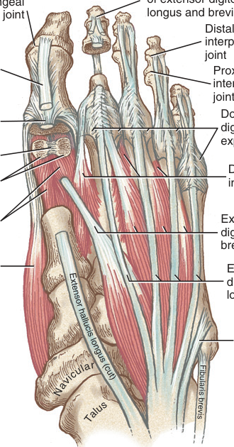
Vận động tại các khớp bàn chân–đốt ngón xảy ra trong hai bậc tự do. Duỗi (gập mu bàn chân) và gập (gập lòng bàn chân) xảy ra xấp xỉ trong mặt phẳng đứng dọc quanh trục trong–ngoài; dạng và khép xảy ra trong mặt phẳng ngang quanh trục thẳng đứng. Ngón thứ hai là ngón tham chiếu để đặt tên cho các vận động dạng và khép của các ngón chân. (Ngón tham chiếu để đặt tên dạng và khép ở bàn tay là ngón thứ ba hay ngón giữa.) Các trục xoay cho mọi vận động tự ý của các khớp bàn chân–đốt ngón đều đi qua tâm của mỗi đầu xương đốt bàn chân.
Hầu hết mọi người có sự khéo léo hạn chế trong các vận động chủ động tại các khớp bàn chân–đốt ngón, đặc biệt là dạng và khép. Từ vị trí trung tính, các ngón chân có thể được duỗi thụ động khoảng 65 độ và gập khoảng 30 đến 40 độ. Ngón cái thường cho phép duỗi lớn hơn, tới gần 85 độ. Biên độ duỗi này dễ thấy khi một người đứng lên bằng đầu ngón chân ("tiptoes").
Hallux limitus, hay "rigidus" ở dạng nhẹ hơn, chủ yếu là tình trạng sau chấn thương, đặc trưng bởi hạn chế vận động rõ rệt tăng dần, thoái hóa khớp và đau tại khớp bàn chân–đốt ngón của ngón cái. Dù bất kỳ chấn thương hay bong gân nào của ngón cái cũng có thể tiến triển thành hallux limitus, cơ chế chấn thương thường liên quan đến duỗi quá mức mạnh của khớp bàn chân–đốt ngón. Những chấn thương nặng hơn có thể gồm rách (tears) hoàn toàn hoặc không hoàn toàn các dây chằng lòng bàn chân, bao khớp và các gân liên quan, cũng như gãy các xương mè.
Chấn thương do duỗi quá mức cưỡng bức ngón cái thường được gọi là "ngón chân sân cỏ" ("turf toe") và xảy ra tương đối thường xuyên ở các cầu thủ bóng đá Mỹ. Về mặt lịch sử, thuật ngữ turf toe bắt nguồn từ sự gia tăng chấn thương này sau khi thay cỏ tự nhiên bằng cỏ nhân tạo và việc sử dụng giày nhẹ hơn. Bất kể chấn thương khởi phát là gì, chẩn đoán hallux limitus thường được thiết lập nếu cơn đau kéo dài kèm giảm biên độ duỗi, thường dưới 55 độ. Trong một số trường hợp, tình trạng sẽ tiến triển thành viêm xương khớp; sự hình thành quá mức gai xương (osteophyte) khi đó có thể hạn chế vận động theo mọi hướng.
Những tổn thương liên quan đến hallux limitus có thể có tác động đáng kể đến dáng đi. Bình thường, đi lại cần khoảng 45 độ duỗi tại khớp bàn chân–đốt ngón thứ nhất khi gót nhấc lên ở giai đoạn đỡ muộn. Một người bị hallux limitus có thể cố tránh duỗi ngón cái đau trong giai đoạn đỡ muộn của dáng đi. Thường điều này được thực hiện bằng cách đi trên mặt ngoài của bàn chân bị ảnh hưởng, hoặc đi với bàn chân hướng ra ngoài và "lăn qua" vòm trong của bàn chân.
Những người bị ảnh hưởng có thể được khuyên đi giày đế cứng (hoặc dùng miếng lót cứng đặt trong giày) và tránh dốc lên hoặc dốc xuống. Vật lý trị liệu đã được chứng minh là hiệu quả trong việc khôi phục biên độ vận động và giảm đau. Phẫu thuật có thể được đề xuất trong những trường hợp nặng hơn.
Đặc điểm trung tâm của hallux valgus (hay bunion) là sự lệch ngoài tiến triển của ngón cái so với đường giữa của cơ thể. Dù biến dạng có vẻ chủ yếu liên quan đến khớp bàn chân–đốt ngón, cơ chế bệnh lý của hallux valgus thường liên quan đến toàn bộ tia thứ nhất (Hình 14.39A,B). Như thấy trên phim X-quang, hallux valgus thường liên quan đến khép quá mức của xương đốt bàn chân thứ nhất (được xác định trong trường hợp này so với cơ thể chứ không phải ngón thứ hai) quanh khớp đốt bàn chân–cổ chân của nó.
Sự lệch trong tiến triển (khép) của xương đốt bàn tay thứ nhất (first metacarpal) kết hợp với xoay trục của đốt ngón gần bị lệch ngoài của ngón cái tạo ra sự mất cân bằng cơ trong các lực thường giữ khớp bàn chân–đốt ngón thẳng hàng. Cơ dạng ngón cái (abductor hallucis) (bình thường nằm phía trong khớp bàn chân–đốt ngón thứ nhất) có thể dần dịch về phía lòng của khớp. Sức kéo không bị đối kháng sau đó của cơ khép ngón cái (adductor hallucis) và đầu ngoài của cơ gập ngón cái ngắn làm tăng dần tư thế lệch ngoài của đốt ngón gần. Khi sự lệch ngoài của ngón cái tiến triển, các gân của cơ gập và cơ duỗi ngón cái dài bị dịch sang phía ngoài trục thẳng đứng tại khớp bàn chân–đốt ngón. Các lực trong những gân này vì thế tạo thêm một mô-men valgus cho khớp bên dưới. Theo thời gian, dây chằng bên trong và bao khớp bị kéo giãn quá mức có thể yếu đi hoặc rách, loại bỏ nguồn gia cố chính cho mặt trong của khớp. Biến dạng cũng đặt cặp xương mè lệch sang ngoài so với khớp bàn chân–đốt ngón (xem Hình 14.39B).
Những người bị hallux valgus rõ thường hạn chế dồn trọng lượng qua khớp bàn chân–đốt ngón thứ nhất khi đi, khiến các xương đốt bàn chân ngoài nhận một tỷ lệ tải trọng lớn hơn.
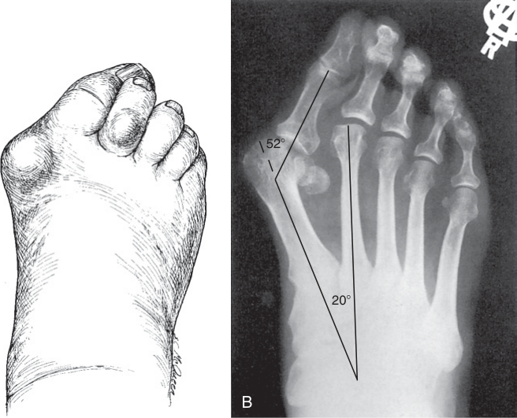
Như ở các ngón tay, mỗi ngón chân có một khớp liên đốt gần và một khớp liên đốt xa. Ngón cái, hay hallux, tương tự như ngón tay cái, chỉ có một khớp liên đốt.
Tất cả các khớp liên đốt của bàn chân đều có những đặc điểm giải phẫu tương tự. Khớp được cấu tạo từ đầu lồi của đốt ngón ở gần hơn khớp nối với đáy lõm của đốt ngón ở xa hơn. Đốt ngón gần của ngón chân thứ hai đã được cắt bỏ trong Hình 14.38 để lộ mặt lõm của khớp liên đốt gần. Cấu trúc và chức năng của các mô liên kết tại các khớp liên đốt nhìn chung tương tự như những gì đã mô tả cho các khớp bàn chân–đốt ngón. Các dây chằng bên, các bản lót lòng bàn chân (plantar plates) và bao khớp đều hiện diện nhưng nhỏ hơn và ít rõ nét hơn.
Vận động tại các khớp liên đốt chủ yếu giới hạn ở gập và duỗi. Biên độ gập nhìn chung lớn hơn biên độ duỗi, và vận động có xu hướng lớn hơn ở các khớp gần so với các khớp xa. Sự duỗi bị hạn chế chủ yếu do sức căng thụ động trong các cơ gập ngón chân và các dây chằng lòng bàn chân.
Các khớp của bàn chân trước gồm các khớp nối liên quan đến từng tia (ray), từ khớp đốt bàn chân (tarsometatarsal joint) đến các khớp liên đốt xa của ngón chân. Tùy theo giai đoạn của chu kỳ đi, các khớp này cung cấp yếu tố linh hoạt hoặc ổn định cho bàn chân trước.
Vào cuối giai đoạn đỡ, bàn chân giữa và bàn chân trước phải trở nên tương đối ổn định để chịu được ứng suất liên quan đến sự sụp đổ dạng ziczac của tia thứ nhất, tương tự như "sự trôi lệch phía trụ" (ulnar drift) của khớp bàn tay–đốt ngón ở bàn tay bị viêm khớp dạng thấp (xem Chương 8).
Mặc dù nguyên nhân và cơ chế bệnh lý tiềm ẩn của hallux valgus chưa hoàn toàn rõ, một số yếu tố dường như liên quan đến sự khởi phát hoặc tiến triển của rối loạn này. Một số yếu tố đó gồm di truyền, dị hình giới tính, giày dép không phù hợp, sự lệch trục bất thường của chi dưới, sấp gót (rearfoot valgus) quá mức kèm theo trục xoay bị thay đổi ở đáy của tia thứ nhất, căng gân Achilles, và mất ổn định ở đáy tia thứ nhất. Toàn bộ dải biểu hiện nặng của hallux valgus thường gồm trật khớp và viêm xương khớp của khớp bàn chân–đốt ngón, metatarsus varus (bàn chân trước lệch trong), lệch ngoài (valgus) của ngón cái, hình thành u xương (bunion) (kèm viêm túi hoạt dịch) trên khớp bàn chân–đốt ngón phía trong, ngón búa (hammer toe) ở ngón thứ hai, chai sẹo (calluses), và đau đốt bàn chân (metatarsalgia). Theo đề xuất của Glasoe và cộng sự, một đế chỉnh hình kiểm soát sấp (pronation controlling foot orthosis) có thể hữu ích trong việc làm chậm tiến triển của biến dạng. Phẫu thuật thường được chỉ định trong các trường hợp biến dạng và rối loạn chức năng rõ rệt.
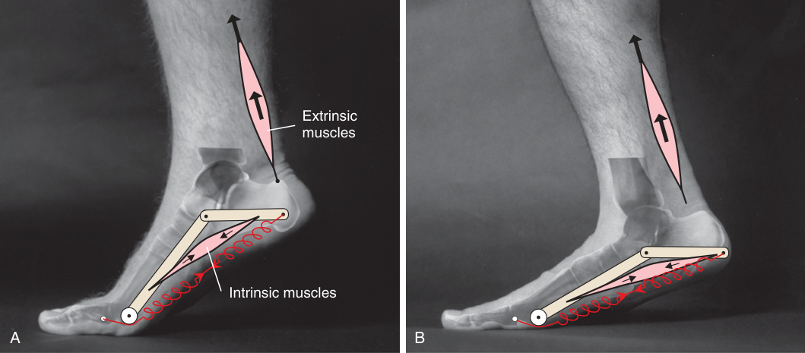
| Đỡ sớm (Early Stance) | Đỡ giữa đến muộn (Mid to Late Stance) | ||||
|---|---|---|---|---|---|
| Vùng (Region) | Khớp đại diện (Representative Joint) | Động tác (Action) | Chức năng mong muốn (Desired Function) | Động tác (Action) | Chức năng mong muốn (Desired Function) |
| Cổ chân (Ankle) | Sào–chày–mác (Talocrural) | Gập lòng bàn chân (Plantar flexion) | Cho phép bàn chân chạm đất nhanh chóng | Tiếp tục gập mu bàn chân, sau đó gập lòng bàn chân nhanh chóng | Tạo một cấu trúc chốt ổn định (mortise) để nhận trọng lượng cơ thể, tiếp theo là lực đẩy cần thiết cho cú đẩy (push off) |
| Bàn chân sau (Rearfoot) | Dưới sào (Subtalar) | Sấp (pronation) và hạ thấp vòm dọc trong | Cho phép xoay trong (internal rotation) của chi dưới Giúp bàn chân hoạt động như bộ giảm chấn Tạo ra bàn chân giữa dễ uốn | Tiếp tục sấp rồi chuyển sang ngửa (supination), sau đó nâng vòm dọc trong lên | Cho phép xoay ngoài (external rotation) của chi dưới Biến bàn chân giữa thành một đòn bẩy cứng cho cú đẩy |
| Bàn chân giữa (Midfoot) | Ngang cổ chân (Transverse tarsal) | Lật trong (inversion) tương đối để đáp ứng với lực phản hồi từ mặt đất | Cho phép khớp dưới sào sấp hết biên độ | Lật ngoài (eversion) tương đối | Giúp bàn chân giữa và bàn chân trước duy trì tiếp xúc chặt với mặt đất |
| Bàn chân trước (Forefoot) | Bàn chân–đốt ngón (Metatarsophalangeal) | Không đáng kể | — | Duỗi (Extension) | Thông qua hiệu ứng tời, nâng vòm dọc trong và ổn định bàn chân giữa cùng bàn chân trước cho cú đẩy |
* Mỗi vùng của bàn chân chỉ được đại diện bởi một khớp.
Đẩy cuối (terminal push off). Ngoài việc kích hoạt các cơ nội tại và ngoại sinh tại chỗ (đặc biệt là cơ chày sau — tibialis posterior), sự nâng lên của vòm dọc trong giúp ổn định bàn chân thêm. Mặc dù mức độ nâng của vòm rất thay đổi, trung bình đạt 6 mm trong giai đoạn đẩy muộn. Một trong những cơ chế chính được dùng để nâng vòm đã được mô tả từ lâu dưới tên gọi "hiệu ứng tời" (windlass effect), có thể minh họa bằng cách đứng bằng đầu ngón chân (Hình 14.40A). Nhờ các điểm bám gián tiếp giữa mạc gan bàn chân sâu và các ngón chân, sự duỗi hoàn toàn của các khớp bàn chân–đốt ngón làm tăng sức căng khắp vòm dọc trong. Về mặt lý thuyết, sức căng tăng này giúp ổn định vòm. Khi gót chân và hầu hết bàn chân được nâng lên, trọng lượng cơ thể dời về phía trước, hướng về các đầu đốt bàn chân ở phía trong hơn. Các đệm mỡ tại chỗ làm giảm ứng suất có thể gây hại cho xương, và các xương mè (sesamoid bones) bảo vệ gân gập dài của ngón cái. Sau khi được ổn định bởi mạc gan bàn chân bị kéo căng và một vòm được gia cố, tia thứ hai và thứ ba hoạt động như những đòn bẩy cứng có khả năng chịu được các mô-men uốn lớn do cơ bắp chân (gastrocnemius) và cơ dép (soleus) co tạo ra. Lực căng trong mạc gan bàn chân bị kéo căng trong giai đoạn đỡ rất muộn đã được ước tính vào khoảng 100% trọng lượng cơ thể. Nếu mạc gan bàn chân không truyền được lực này từ xương gót đến đáy các ngón chân, hiệu quả của cơ chế tời trong việc nâng vòm sẽ bị hạn chế. Điều này thực sự thường được quan sát thấy qua cách "đẩy" (push off) dè chừng hoặc kém hiệu quả ở một người đã cắt mạc gan bàn chân (plantar fasciotomy) hoặc đang bị viêm mạc gan bàn chân đau (plantar fasciitis).
Ngược lại với bàn chân khỏe mạnh, hãy xem xét cơ chế bệnh lý liên quan khi một người có "bàn chân phẳng" (pes planus) không ổn định cố gắng đứng bằng đầu ngón chân (xem Hình 14.40B). Dù người đó không có bệnh lý thần kinh–cơ, vẫn có sự suy giảm đáng kể trong việc nâng gót chân, ngay cả khi gắng sức tối đa. Khi thiếu một vòm dọc trong hiệu quả, bàn chân giữa và bàn chân trước mất ổn định, không được khóa chặt, bị xẹp xuống dưới trọng lượng cơ thể. Điều này thường gây ra một chuyển động theo hướng gập mu bàn chân (dorsiflexion) của các khớp đốt bàn chân (trái ngược với sự gập lòng bàn chân nhẹ bình thường). Đáp ứng động học này có thể làm căng các cơ gập ngón chân ngoại sinh và, nếu đáng kể, hạn chế sự duỗi ngón chân. Bất kể mối quan hệ nhân–quả cụ thể ra sao, sự duỗi giảm của các khớp bàn chân–đốt ngón làm giảm hiệu quả của hiệu ứng tời trong việc ổn định bàn chân.
Phần cuối cùng về động học khép lại bằng Bảng 14.6, bảng tóm tắt các chức năng quan trọng của cổ chân và bàn chân trong suốt giai đoạn đỡ của bước đi.
Các cơ ngoại sinh của cổ chân và bàn chân có điểm bám gần ở chân, và một số kéo dài về phía gần đến tận xương đùi. Ngược lại, các cơ nội tại có cả điểm bám gần và điểm bám xa đều nằm trong bàn chân.
Các cơ ngoại sinh được xếp thành ba ngăn (compartment) của chân: trước, ngoài và sau. Mỗi ngăn được chi phối bởi một dây thần kinh vận động khác nhau (xem các mặt cắt ngang trong Hình 14.41 và 14.42). Mỗi dây thần kinh vận động là một nhánh của thần kinh tọa (sciatic nerve), được tạo thành từ các rễ thần kinh tủy L4–S3 của đám rối cùng (sacral plexus).
Ở phía ngoài đầu xương mác, thần kinh mác chung (common fibular/peroneal nerve) (L4–S2) chia thành một nhánh sâu và một nhánh nông (xem Hình 14.41). Nhánh sâu của thần kinh mác chi phối các cơ trong ngăn trước: cơ chày trước (tibialis anterior), cơ duỗi các ngón chân dài (extensor digitorum longus), cơ duỗi ngón cái dài (extensor hallucis longus), và cơ mác thứ ba (fibularis/peroneus tertius). Nhánh sâu tiếp tục đi xa hơn để chi phối cơ duỗi các ngón chân ngắn (extensor digitorum brevis) — một cơ nội tại nằm ở mu bàn chân. Nó cũng cung cấp chi phối cảm giác cho một vùng da hình tam giác ở kẽ ngón giữa ngón thứ nhất và ngón thứ hai. Nhánh nông của thần kinh mác chi phối cơ mác dài (fibularis longus) và cơ mác ngắn (fibularis brevis) trong ngăn ngoài. Sau đó dây thần kinh tiếp tục đi xa như một dây thần kinh cảm giác, chi phối phần lớn da ở mặt mu và mặt ngoài của chân và bàn chân.
Thần kinh chày (tibial nerve) (L4–S3) và các nhánh tận cùng của nó chi phối phần còn lại của các cơ ngoại sinh và nội tại của bàn chân và cổ chân (xem Hình 14.42). Các cơ trong ngăn sau được chia thành nhóm nông và nhóm sâu. Nhóm nông gồm các cơ bắp chân: cơ bắp chân (gastrocnemius) và cơ dép (soleus) (cùng được gọi là cơ tam đầu bắp chân — triceps surae) cùng cơ gối (plantaris) nhỏ. Nhóm sâu gồm cơ chày sau (tibialis posterior), cơ gập ngón cái dài (flexor hallucis longus), và cơ gập các ngón chân dài (flexor digitorum longus). Khi thần kinh chày tiến về phía trong của cổ chân, nó phát ra một nhánh cảm giác đến da phía trên gót chân.
Ngay phía sau mắt cá trong, thần kinh chày tách thành thần kinh gan bàn chân trong (medial plantar nerve) (L4–S2) và thần kinh gan bàn chân ngoài (lateral plantar nerve) (L5–S3). Các dây thần kinh gan bàn chân cung cấp cảm giác cho da trên hầu hết bề mặt lòng bàn chân và chi phối vận động cho tất cả các cơ nội tại, trừ cơ duỗi các ngón chân ngắn. Cách tổ chức chung của sự chi phối các cơ nội tại của bàn chân tương tự như ở bàn tay. Thần kinh gan bàn chân trong tương tự như thần kinh giữa (median nerve), trong khi thần kinh gan bàn chân ngoài tương tự như thần kinh trụ (ulnar nerve).
Các rễ thần kinh tủy chi phối các cơ của chi dưới được liệt kê trong Phụ lục IV, Phần A. Phần B của phụ lục này liệt kê các cơ chính thường được dùng để kiểm tra tình trạng chức năng của các rễ thần kinh tủy L2–S3. Phần C trình bày bản đồ vùng da tủy (dermatome) của chi dưới.
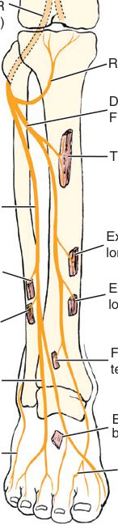
Khớp sào–chày–mác (talocrural joint) nhận chi phối cảm giác từ nhánh sâu của thần kinh mác. Nhìn chung, chi phối cảm giác cho các khớp khác của bàn chân được cung cấp bởi các nhánh thần kinh đi qua vùng đó. Mỗi khớp lớn nhận nhiều nguồn chi phối cảm giác, chủ yếu đi đến tủy sống qua các rễ S1 và S2.
Các cơ của cổ chân và bàn chân không chỉ kiểm soát các động tác cụ thể của các khớp bên dưới, mà còn cung cấp sự ổn định, lực đẩy và khả năng hấp thụ chấn động cần thiết cho vận động. Cả cơ nội tại và cơ ngoại sinh đều thực hiện các chức năng này. Thảo luận thêm về các tương tác cơ trong khi đi và chạy được trình bày ở các Chương 15 và 16.
Vì tất cả các cơ ngoại sinh đều vượt qua nhiều khớp, chúng có nhiều động tác. Nhiều động tác trong số này trở nên rõ ràng khi lưu ý đến chỗ các gân vượt qua các trục xoay tại khớp sào–chày–mác và khớp dưới sào (xem Hình 14.43 ở phần sau). Dù Hình 14.43 được đơn giản hóa quá mức (vì thiếu khớp ngang cổ chân cũng như các thành phần khác của sấp và ngửa bàn chân), nó vẫn có thể làm kim chỉ dẫn hữu ích để hiểu nhiều động tác của các cơ ngoại sinh.
Trong suốt phần còn lại của chương này, có thể hữu ích khi tham khảo Phụ lục IV, Phần D để xem tóm tắt các điểm bám và nguồn chi phối thần kinh của các cơ cổ chân và bàn chân. Ngoài ra, để làm tài liệu tham khảo, một danh sách diện tích mặt cắt ngang của một số cơ chọn lọc trong các vùng này được cung cấp trong Phụ lục IV, Phần E.
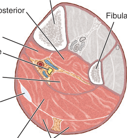
Giải phẫu (Anatomy)
Bốn cơ của ngăn trước được liệt kê trong ô. Với tư cách một nhóm, các cơ "trước xương chày" (pretibial) này có điểm bám gần trên các mặt trước và ngoài của nửa gần xương chày, xương mác kề cạnh, và màng gian xương (Hình 14.44).
Các gân của những cơ này vượt qua mặt mu của cổ chân, được giữ lại bởi dây giữ duỗi trên và dưới (superior and inferior extensor retinaculum) có lót màng hoạt dịch. Nằm ở vị trí trong cùng là gân nổi bật của cơ chày trước, đi xuống phía xa để bám vào mặt trong–lòng của khớp đốt bàn chân thứ nhất (Hình 14.45). Gân của cơ duỗi ngón cái dài đi ngay phía ngoài gân cơ chày trước khi hướng về mặt mu của ngón cái (xem Hình 14.44). Tiếp tục ra ngoài qua mu cổ chân là các gân của cơ duỗi các ngón chân dài và cơ mác thứ ba (hay cơ mác "thứ ba"). Bốn gân của cơ duỗi các ngón chân dài bám vào mặt mu của các đốt ngón giữa và xa qua mở rộng gân lưng ngón (dorsal digital expansion). Cơ mác thứ ba là một phần của cơ duỗi các ngón chân dài và có thể được xem là gân thứ năm của cơ này. Cơ mác thứ ba bám vào đáy của xương đốt bàn chân thứ năm.
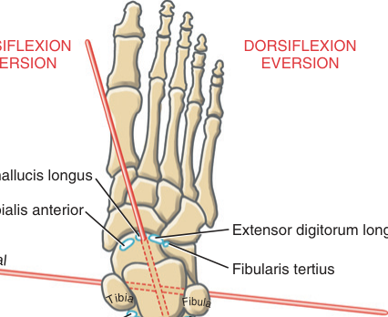
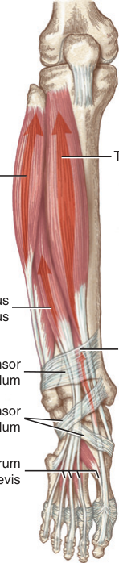
Các cơ ngăn trước của chân (Muscles of the Anterior Compartment of the Leg) — Các cơ trước xương chày "gập mu bàn chân" (Pretibial "Dorsiflexors")
Các cơ (Muscles):
Chi phối thần kinh (Innervation):
Động tác của khớp (Joint Action)
Cả bốn cơ trước xương chày đều là cơ gập mu bàn chân vì chúng vượt qua phía trước trục xoay tại khớp sào–chày–mác (xem Hình 14.43). Từ tư thế giải phẫu, cơ chày trước còn làm lật trong khớp dưới sào bằng cách đi ngay phía trong trục xoay. Cơ chày trước làm lật trong và dẫn gần khớp sào–thuyền, và khi có nhu cầu, nâng đỡ vòm dọc trong.
Các động tác chính của cơ duỗi ngón cái dài là gập mu bàn chân tại khớp sào–chày–mác và duỗi ngón cái. Sự lật trong tại khớp dưới sào là không đáng kể vì cánh tay đòn nhỏ của cơ này, ít nhất là khi phân tích từ tư thế giải phẫu. Ngoài việc gập mu bàn chân, cơ duỗi các ngón chân dài và cơ mác thứ ba làm lật ngoài bàn chân.
Các động tác cơ đã nêu ở trên của các cơ trước xương chày dựa trên giả định rằng các cơ được kích hoạt khi các khớp liên quan đang ở tư thế giải phẫu, hay tư thế trung lập. Tuy nhiên, rất có thể mô-men xoắn tiềm năng (hoặc thậm chí cả động tác) của một số cơ thay đổi khi các khớp được đưa ra xa khỏi tư thế giải phẫu. Sự thay đổi này có thể có ý nghĩa chức năng quan trọng. Hãy xem xét, ví dụ, cánh tay đòn lật trong của cơ chày trước có thể thực sự tăng lên ở tư thế lật trong cực đoan (xem Hình 14.43 làm hướng dẫn trực quan). Một tình huống cơ sinh học như vậy đôi khi có thể phản tác dụng, về mặt lý thuyết làm tăng khả năng tạo mô-men lật trong của cơ vào thời điểm mà các cơ lật ngoài (như cơ mác dài và cơ mác ngắn) đang cố gắng chống lại thành phần chính này của bong gân cổ chân điển hình.
Các cơ trước xương chày hoạt động mạnh nhất trong giai đoạn đỡ sớm và một lần nữa trong suốt giai đoạn vung của chu kỳ đi (xem Hình 15-29, cơ chày trước). Trong giai đoạn đỡ sớm, các cơ co lệch tâm (eccentrically) để kiểm soát tốc độ gập lòng bàn chân (tức là khoảng thời gian giữa lúc gót chân chạm đất và lúc bàn chân phẳng; xem Hình 14.19). Sự gập lòng bàn chân được kiểm soát là cần thiết để bàn chân tiếp đất nhẹ nhàng. Thông qua hoạt động lệch tâm tương tự, cơ chày trước giúp làm chậm sự hạ thấp của vòm dọc trong và nhờ đó gián tiếp giúp kiểm soát sự sấp (pronation) (lật ngoài — eversion) của bàn chân sau (xem lại Hình 14.31). Trong giai đoạn vung, các cơ trước xương chày chủ động gập mu bàn chân và duỗi các ngón chân để đảm bảo bàn chân không quệt đất.
Khả năng chủ động gập mu bàn chân trong mặt phẳng gần như đứng dọc (sagittal plane) đòi hỏi một sự cân bằng khá chính xác các lực từ các cơ trước xương chày. Ảnh hưởng lật ngoài (eversion) và/hoặc dẫn xa (abduction) của cơ duỗi các ngón chân dài và cơ mác thứ ba phải cân bằng lại ảnh hưởng lật trong (inversion) và dẫn gần (adduction) của cơ chày trước. Khi bị liệt cô lập cơ chày trước, cổ chân vẫn có thể gập mu bàn chân chủ động, nhưng sẽ thực hiện với xu hướng lật ngoài và dẫn xa.
Giải phẫu (Anatomy)
Cơ mác dài (fibularis longus) và cơ mác ngắn (fibularis brevis) (trước đây lần lượt được gọi là peroneus longus và peroneus brevis) chiếm ngăn ngoài của các cơ chân (Hình 14.46). Cả hai cơ đều bám gần dọc theo xương mác ở phía ngoài. Gân của cơ mác dài, nông hơn trong hai cơ, đi xuống phía xa một quãng đáng kể. Sau khi vòng qua phía sau mắt cá ngoài, gân đi vào mặt lòng của bàn chân qua một rãnh ở xương khối (cuboid bone). Sau đó gân đi giữa các dây chằng lòng bàn chân dài và ngắn đến điểm bám xa cuối cùng ở mặt lòng–ngoài của khớp đốt bàn chân thứ nhất (xem Hình 14.45). Đáng chú ý là cơ mác dài và cơ chày trước bám ở hai bên của mặt lòng tại khớp đốt bàn chân thứ nhất. Vì vậy, cặp cơ này cung cấp một sự ổn định động học cân bằng cho đáy của tia thứ nhất.
Sự cần thiết phải cân bằng các lực cơ này được thể hiện khi một người đứng bằng đầu ngón chân trong Hình 14.47. Khi gót chân nâng lên, cơ mác dài và cơ chày sau được kích hoạt mạnh mẽ trung hòa lẫn nhau, tạo thành một "cái dây treo" (sling) chức năng nâng đỡ vòm ngang và vòm dọc trong. Thường thì, hiệu ứng ròng của sự tương tác cơ này làm ngửa nhẹ bàn chân sau khi không chịu tải, giúp tăng thêm sự ổn định cho vòm dọc trong và các vùng xa hơn của bàn chân. Sự ổn định này đảm bảo rằng mô-men gập lòng bàn chân cần thiết để đứng bằng đầu ngón chân (hoặc đẩy cơ thể lên và về phía trước) được truyền hiệu quả về phía xa qua bàn chân, hướng về các đầu đốt bàn chân.
Gân của cơ mác ngắn đi phía sau mắt cá ngoài, song song với cơ mác dài. Cả hai gân mác cùng nằm trong một bao hoạt dịch khi đi dưới dây giữ mác (fibular retinaculum) (xem Hình 14.46). Ngay phía xa dây giữ, gân cơ mác ngắn tách khỏi gân cơ mác dài và hướng đến điểm bám xa của nó trên mỏm trâm của xương đốt bàn chân thứ năm. Thường thấy ở các vũ công, mỏm trâm có thể bị gãy bong mảnh (avulsion fracture) sau một cơn co cực mạnh của cơ mác ngắn, thường là để đáp ứng với một động tác lật trong (inversion) đột ngột và cực đoan của cổ chân hoặc bàn chân.
Hơn nữa, khi gót chân được nâng lên trong giai đoạn đẩy của bước đi, sự co của các cơ mác, đặc biệt là cơ mác dài, giúp chuyển trọng lượng cơ thể từ phía ngoài sang phía trong của bàn chân trước. Động tác này dời trọng lượng cơ thể về phía bàn chân bên đối diện, vừa mới bước vào giai đoạn đỡ sớm của chu kỳ đi.
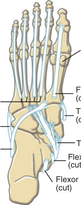
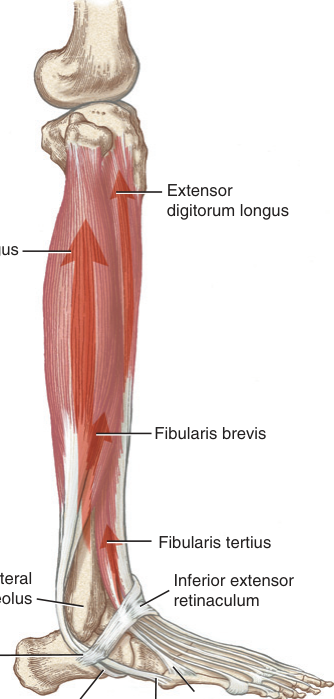
Ngăn ngoài của chân (Lateral Compartment of the Leg) — Các cơ lật ngoài ("Evertors")
Các cơ (Muscles):
Chi phối thần kinh (Innervation):
Động tác của khớp (Joint Action)
Cơ mác dài và cơ mác ngắn là những cơ lật ngoài chính của bàn chân (xem Hình 14.43). Các cơ này cung cấp nguồn ổn định chủ động chính cho phía ngoài của cổ chân. Sự kích hoạt giảm của các cơ này được xem là một yếu tố nguy cơ phát triển hoặc kéo dài mất ổn định cổ chân mạn tính (dạng lật trong). Vì lý do này, các bài tập tăng sức mạnh, rèn luyện thể lực và phối hợp liên quan đến các cơ này thường được thiết kế cho những người có nguy cơ bị bong gân do lật trong, chẳng hạn như người chơi bóng rổ hoặc bóng chuyền. Điều đáng chú ý là, dù các cơ lật ngoài rất hiệu quả trong việc chống lại sự lật trong, một cơn co cơ thuần phản xạ để đáp ứng với một động tác lật trong bất ngờ thường là quá chậm để ngăn ngừa chấn thương. Cần có các cơ chế thần kinh–cơ toàn thân phức tạp hơn để bảo vệ, có lẽ là những cơ chế liên quan đến đáp ứng kiểm soát trước (feed-forward) hoặc dự đoán trước một chấn thương lật trong sắp xảy ra.
Cơ mác dài và cơ mác ngắn có cánh tay đòn đáng kể để lật ngoài qua khớp dưới sào — hơn 2 cm. Mắt cá ngoài, đóng vai trò một ròng rọc cố định, dẫn các gân mác đi phía sau trục xoay tại khớp sào–chày–mác. Vì vậy, cả hai cơ cũng là các cơ gập lòng bàn chân của khớp sào–chày–mác. Dù không thể hiện rõ trong Hình 14.43, cơ mác dài và cơ mác ngắn còn dẫn xa các khớp dưới sào và khớp ngang cổ chân.
Điểm bám xa của cơ mác dài tạo ra mô-men lật ngoài xa về phía trước đến tận bàn chân trước. Điều này thể hiện rõ khi đáy của tia thứ nhất lật ngoài và hạ thấp (gập lòng bàn chân) nhẹ trong lúc sấp bàn chân không chịu tải với nỗ lực tối đa. Ngoài ra, cơ mác dài ổn định khớp đốt bàn chân thứ nhất chống lại sức kéo mạnh về phía trong của cơ chày trước. Nếu thiếu sự ổn định này, tia thứ nhất có thể di chuyển về phía trong, có khả năng khiến một người dễ bị biến dạng hallux valgus.
Cơ mác dài và cơ mác ngắn hoạt động trong hầu hết giai đoạn đỡ của bước đi (xem Hình 15.29). Dù tương đối nhỏ, sự co đẳng trương (concentric) của cơ mác dài tại thời điểm và ngay sau lúc gót chân chạm đất có thể giúp kiểm soát động học của bàn chân sau đang sấp, vốn đồng thời còn được kiểm soát thêm bởi sự co lệch tâm của cơ chày sau và cơ chày trước. Các cơ mác đạt mức hoạt động cao nhất trong suốt giai đoạn đỡ giữa và đẩy, khi khớp dưới sào đang ngửa (lật trong) và khớp sào–chày–mác đang gập mu bàn chân bắt đầu đổi hướng vận động sang gập lòng bàn chân. Một chức năng quan trọng của các cơ mác trong giai đoạn đi này là làm chậm, từ đó kiểm soát, tốc độ và mức độ ngửa của khớp dưới sào. Hơn nữa, lực chủ động trong cơ mác dài giúp cố định chắc chắn tia thứ nhất vào mặt đất, một động tác được thể hiện ở bàn chân trước trong Hình 14.33. Khi cơ mác dài yếu, bị liệt hoặc bị ức chế, sức kéo ngửa mạnh của cơ chày sau lên bàn chân trước không bị đối kháng. Hệ quả là bàn chân trước đi theo bàn chân sau vào tư thế ngửa, khiến người đó đi bằng bờ ngoài của bàn chân, có thể làm tăng khả năng bị bong gân do lật trong.
Ở giai đoạn đỡ rất muộn, trong lúc đẩy, cơ mác dài và cơ mác ngắn hỗ trợ các cơ khác thực hiện gập lòng bàn chân tại khớp sào–chày–mác. Vị trí ngoài của các cơ mác giúp trung hòa xu hướng lật trong (ngửa) mạnh của các cơ gập lòng bàn chân còn đang hoạt động, gồm cơ chày sau và, ở mức độ hạn chế, cơ bắp chân (và cơ dép).
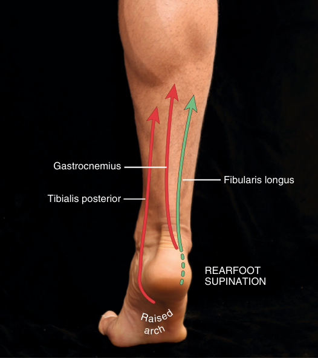
Giải phẫu (Anatomy)
Các cơ của ngăn sau được chia thành hai nhóm. Nhóm nông gồm cơ bắp chân, cơ dép (cùng được gọi là cơ tam đầu bắp chân — triceps surae), và cơ gối (plantaris) (Hình 14.48).
Nhóm nông (Superficial Group). Cơ bắp chân tạo nên bụng cơ nổi bật của cẳng chân. Cơ hai đầu này bám bằng các đầu riêng biệt từ mặt sau của các mỏm cầu xương đùi trong và ngoài. Đầu trong lớn hơn hợp với đầu ngoài ở giữa chân, hòa lẫn vào gân Achilles. Cơ dép, rộng và dẹt, nằm sâu hơn cơ bắp chân, khởi phát chủ yếu từ mặt sau của xương mác gần và xương chày đoạn giữa. Giống như cơ bắp chân, cơ dép hòa vào gân Achilles để bám xa vào mỏm gót (calcaneal tuberosity). Tuy nhiên, cần nhận ra rằng cơ bắp chân vượt qua khớp gối còn cơ dép thì không. Vì lý do này, có thể giãn cơ bắp chân hiệu quả hơn bằng cách kết hợp duỗi gối với gập mu bàn chân.
Cơ dép là một cơ rất dày, diện tích mặt cắt ngang xấp xỉ gấp đôi cơ bắp chân nằm trên nó. Các nghiên cứu cho thấy một số sợi cơ ở vùng gần của hai cơ này được nối với nhau qua các mô mạc gân (aponeurotic tissues). Những kết nối này cho phép một lượng nhỏ lực truyền giữa các cơ.
Cơ gối khởi phát từ đường trên mỏm cầu ngoài của xương đùi. Bụng cơ hình thoi chỉ dài 7 đến 10 cm, nhỏ bất thường so với các cơ khác trong vùng. Cơ gối có một gân rất dài và mảnh, đi giữa cơ bắp chân và cơ dép, cuối cùng hòa vào bờ trong của gân Achilles.
Nhóm sâu gồm cơ chày sau, cơ gập các ngón chân dài, và cơ gập ngón cái dài (Hình 14.49).
Các cơ ngăn sau của chân (Muscles of the Posterior Compartment of the Leg)
NHÓM NÔNG (CÁC CƠ GẬP LÒNG BÀN CHÂN) — SUPERFICIAL GROUP ("PLANTAR FLEXORS")
NHÓM SÂU (CÁC CƠ LẬT TRONG) — DEEP GROUP ("INVERTORS")
Chi phối thần kinh (Innervation):
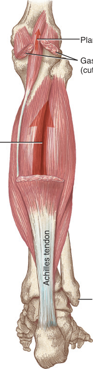
Nhóm sâu (Deep Group). Cơ chày sau (tibialis posterior), cơ gập ngón cái dài (flexor hallucis longus) và cơ gập các ngón chân dài (flexor digitorum longus) nằm sâu hơn cơ dép (soleus) (xem Hình 14.49). Với tư cách là một nhóm, các cơ này xuất phát từ mặt sau của xương chày, xương mác và màng gian xương (interosseous membrane). Cơ chày sau nằm ở vị trí trung tâm hơn được bao quanh và che phủ một phần bởi cơ gập ngón cái dài ở phía ngoài và cơ gập các ngón chân dài ở phía trong. Tại các điểm nối cơ–gân (musculotendinous junctions) ở phần xa, cả ba cơ đều đi vào mặt gan bàn chân từ phía trong của bàn chân (xem Hình 14.45). Vị trí của các gân khi chúng đi qua cổ chân và bàn chân giải thích thành phần ngửa (lật trong) mạnh mẽ của các cơ này, đặc biệt là cơ chày sau (xem Hình 14.43). Cơ chày sau, cơ gập các ngón chân dài và bó mạch–thần kinh chày (tibial neurovascular bundle) đi qua đường hầm cổ chân (tarsal tunnel), nằm ngay sâu dưới cân giữ gân gập (flexor retinaculum) (Hình 14.50). Đường hầm cổ chân tương tự như ống cổ tay (carpal tunnel) ở cổ tay. "Hội chứng đường hầm cổ chân" (tarsal tunnel syndrome) (tương tự như hội chứng ống cổ tay) đặc trưng bởi sự chèn ép dây thần kinh chày (tibial nerve) bên dưới cân giữ gân gập và dị cảm (paresthesia) sau đó trên mặt gan của bàn chân.
Gân của cơ gập ngón cái dài đi dần về phía xa qua cổ chân trong một rãnh được tạo thành giữa các củ của xương sào (talus) và bờ dưới của bệ đỡ sào (sustentaculum talus) (xem Hình 14.12). Các dải xơ biến rãnh này thành một bao lót hoạt dịch (synovial-lined sleeve), neo giữ vị trí của gân. Vị trí sâu hơn (ở phía ngoài) của gân so với cơ chày sau và cơ gập các ngón chân dài giải thích lý do tại sao cơ gập ngón cái dài không phải là một cấu trúc nằm trong đường hầm cổ chân. Khi đã vào mặt gan bàn chân, gân của cơ gập ngón cái dài đi giữa hai xương mè (sesamoid bones) của khớp bàn chân–đốt ngón (metatarsophalangeal joint) thứ nhất, cuối cùng bám vào mặt gan của đế ngón (base) của đốt ngón xa (distal phalanx) của ngón cái (great toe) (xem Hình 14.45).
Gân của cơ gập các ngón chân dài đi dần về phía xa qua cổ chân, phía sau mắt cá trong (medial malleolus). Ở khoảng mức đế của các xương đốt bàn chân (metatarsals), gân chính của cơ gập các ngón chân dài chia thành bốn gân nhỏ hơn, mỗi gân bám vào đế của đốt ngón xa của các ngón chân nhỏ (lesser toes) (xem Hình 14.45).
Gân của cơ chày sau nằm ngay phía trước gân của cơ gập các ngón chân dài trong một rãnh chung ở mặt sau của mắt cá trong (xem Hình 14.50). Gân của cơ chày sau tiếp tục đi xa và vượt qua sâu dưới cân giữ gân gập nhưng ngay nông hơn dây chằng tam giác (deltoid ligament) và dây chằng lò xo (spring ligament). Tại đây gân chia thành phần nông và phần sâu, thiết lập các điểm bám vào mọi xương cổ bàn chân (tarsal bone) trừ xương sào, và vào đế của một số xương đốt bàn chân nằm ở trung tâm hơn (xem Hình 14.45). Điểm bám xa nổi bật nhất của cơ chày sau nằm ở mặt gan của củ thuyền (navicular tuberosity). Gân thường sờ thấy được trong vài centimet ngay gần củ thuyền khi khép và lật trong bàn chân có kháng lực. Các điểm bám xa dạng lưới phân bố rộng rãi của cơ chày sau tạo thành một vòng đỡ động học (kinetic sling) vững chắc để hỗ trợ cả dây chằng lò xo kề cạnh lẫn vòm dọc trong (medial longitudinal arch). Mất sự hỗ trợ này thường dẫn đến bàn chân phẳng (pes planus).
Gân của cả cơ chày sau và cơ gập các ngón chân dài đều dùng mắt cá trong làm một ròng rọc cố định để hướng lực của chúng ra phía sau trục xoay tại khớp sào–chày–mác (talocrural joint). Một ròng rọc tương tự tồn tại cho các gân của cơ mác dài (fibularis longus) và cơ mác ngắn (fibularis brevis), khi các cấu trúc này đi qua phía sau mắt cá ngoài (lateral malleolus) (xem Hình 14.46). Các gân của cơ chày sau và cơ gập các ngón chân dài được định vị phía sau mắt cá trong bởi cân giữ gân gập. Cơ gập ngón cái dài sử dụng một hệ thống ròng rọc gập lòng bàn chân khác, được tạo thành ở gần bởi các củ trong và củ ngoài của xương sào và ở xa bởi bệ đỡ sào của xương gót (calcaneus).
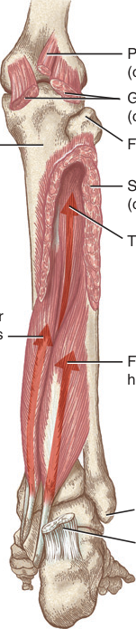
Ngoại trừ cơ mác dài và cơ mác ngắn, tất cả các cơ gập lòng bàn chân tại khớp sào–chày–mác cũng ngửa (lật trong) các khớp dưới sào (subtalar joint) hoặc khớp ngang cổ chân (transverse tarsal joint). Xu hướng lật trong mạnh mẽ này được chứng minh bằng vị trí của tất cả các cơ trong khoang sau của cẳng chân so với khớp dưới sào (xem Hình 14.43). Từ tư thế giải phẫu, ngay cả cơ tam đầu bắp chân (triceps surae) cũng lật trong nhẹ, vì lực của gân Achilles đi qua ngay phía trong trục xoay của khớp dưới sào.
Cơ chày sau, cơ gập ngón cái dài và cơ gập các ngón chân dài là những cơ ngửa chính của bàn chân. Trong ba cơ này, cơ chày sau có khả năng tạo ra mô men ngửa lớn nhất (đặc biệt theo hướng khép) qua các khớp dưới sào và khớp ngang cổ chân. Các điểm bám xa rộng rãi của cơ, đặc biệt là ở xương thuyền (navicular), tạo ra một sự "xoắn" lật trong hiệu quả của bàn chân giữa (xem Hình 14.26D). Ngoài gập lòng bàn chân và ngửa, cơ gập các ngón chân dài và cơ gập ngón cái dài còn có các tác động bổ sung tại các khớp xa hơn của bàn chân, đặc biệt là tại các khớp bàn chân–đốt ngón và khớp liên đốt ngón (interphalangeal joints).
Kích hoạt các cơ gập lòng bàn chân và các cơ ngửa trong khi đi bộ (Activation of the Plantar Flexor and Supinator Muscles during Walking). Các cơ gập lòng bàn chân và các cơ ngửa hoạt động trong hầu hết giai đoạn đỡ của chu kỳ đi (gait cycle), đặc biệt là giữa các pha bàn chân tiếp đất hoàn toàn (foot flat) và nhấc ngón (toe off) (xem ví dụ về sự hoạt hóa của cơ bắp chân và cơ dép trong Hình 15-29). Các cơ này bắt đầu hoạt động ngay sau khi các cơ gập mu bàn chân thư giãn. Từ lúc bàn chân tiếp đất hoàn toàn đến ngay trước khi nhấc gót (heel off), các cơ gập lòng bàn chân (chủ yếu là cơ dép) hoạt động lệch tâm để làm chậm sự xoay về phía trước (gập mu bàn chân) của cẳng chân trên xương sào cố định. Tuy nhiên, giữa các pha nhấc gót và nhấc ngón, các cơ chuyển sang hoạt hóa đồng tâm để hỗ trợ lực đẩy cần thiết cho pha đẩy đi và giai đoạn vung sớm. Hơn nữa, các lực hoạt động trong cơ gập ngón cái dài, cơ gập các ngón chân dài và các cơ bàn chân (intrinsic foot muscles) (các cơ giun và cơ gian xương) giữ chặt mặt gan của các ngón đang duỗi xuống mặt đất. Hành động này mở rộng bề mặt chịu trọng lượng của các ngón chân, từ đó giảm thiểu áp lực tiếp xúc.
Cơ chày sau, cơ gập ngón cái dài và cơ gập các ngón chân dài đều có khả năng chống lại sự sấp (pronation) và hỗ trợ ngửa trong giai đoạn đỡ của bước đi. Tuy nhiên, trong ba cơ này, cơ chày sau được thiết kế phù hợp nhất cho chức năng này. Các nghiên cứu EMG cho thấy cơ chày sau hoạt động trong hầu hết giai đoạn đỡ, lâu hơn bất kỳ cơ ngửa nào khác. Khi toàn bộ bàn chân tiếp xúc mặt đất, cơ chày sau làm chậm sự sấp của bàn chân sau (rearfoot), giúp hạ thấp vòm dọc trong một cách từ từ và được kiểm soát (xem lại Hình 14.31). Thông qua hành động lệch tâm này, cơ chày sau hấp thụ một phần xung lực của tải trọng. Những người sấp quá mức và/hoặc quá nhanh trong giai đoạn đỡ của bước đi hoặc chạy có thể đặt ra nhu cầu phanh (giảm tốc) quá mức lên cơ chày sau, dẫn đến bệnh gân (tendinopathy), mỏi cơ, hoặc đau cẳng chân trước liên quan đến căng thẳng (gọi chung là "shin splints"). Không phải lúc nào cũng chắc chắn rằng sấp quá mức gây ra hay là hệ quả của rối loạn chức năng cơ chày sau. Trong cả hai trường hợp, chức năng giảm sút của cơ chày sau làm hạn chế một cơ chế hấp thụ xung lực quan trọng của bàn chân.
Trong suốt giai đoạn đỡ giữa đến cuối, sự co của cơ chày sau giúp dẫn bàn chân sau hướng tới ngửa. Cùng một lực cơ này cũng có thể hỗ trợ sự xoay ngoài đồng thời của cẳng chân và xương sào, cũng như tái lập chiều cao của vòm dọc trong. Sự kích hoạt đồng thời của các cơ mác giúp kiểm soát tốc độ và mức độ của chuyển động ngửa, đồng thời tăng cường độ ổn định theo hướng trong–ngoài cho ổ khớp (mortise).
Mô men gập lòng bàn chân tạo ra để đẩy cơ thể (Plantar Flexion Torque Generated for Propulsion). Ngay vào cuối giai đoạn đỡ, các cơ trong khoang sau co lại để gập lòng bàn chân tại khớp sào–chày–mác. Cơ mác dài và cơ mác ngắn (nằm trong khoang ngoài) cũng góp phần vào mô men này. Lượng hoạt động cơ do các cơ gập lòng bàn chân tạo ra trong pha đẩy đi phụ thuộc mạnh vào tốc độ và sức sống của bước đi. Mặc dù các cơ này cung cấp lực đẩy chính cho bước đi, các nguồn năng lượng phụ có thể bao gồm các cơ duỗi háng cùng bên (tạo ra ở giai đoạn đỡ sớm) và các cơ gập háng cùng bên (tạo ra ở giai đoạn đỡ rất muộn).
Ở những người khỏe mạnh, mô men gập lòng bàn chân đẳng trường tối đa vượt xa tiềm năng mô men của tất cả các chuyển động khác quanh cổ chân và bàn chân cộng lại (Hình 14.51). Một lượng lớn mô men gập lòng bàn chân như vậy cần thiết để nhanh chóng tăng tốc cơ thể lên và về phía trước khi chạy, nhảy và leo. Mô men gập lòng bàn chân đơn lẻ lớn nhất khi cổ chân tiến gần gập mu bàn chân hoàn toàn (tức là khi các cơ gập lòng bàn chân được kéo giãn) và nhỏ nhất khi cổ chân gập lòng bàn chân hoàn toàn. Cổ chân thường ở tư thế gập mu bàn chân khi một người chuẩn bị chạy nước rút hoặc nhảy. Điều thú vị là, khi cổ chân gập lòng bàn chân mạnh mẽ ở cú "bật" (take off) của một lần chạy nước rút hoặc nhảy, cơ bắp chân đang co lại đồng thời bị kéo giãn bởi tác động duỗi gối của cơ tứ đầu đùi. Sắp xếp hai khớp (biarticular) này ngăn cơ bắp chân rút ngắn quá mức, cho phép tạo ra các mô men gập lòng bàn chân lớn hơn trong một phạm vi chuyển động rộng hơn của cổ chân. Vì cơ dép không vắt qua gối, mối quan hệ chiều dài–căng của nó ít bị ảnh hưởng bởi vị trí của gối. Có lẽ các đặc tính cơ sợi chậm (slow-twitch) tương đối của cơ dép lại đặc biệt phù hợp để kiểm soát các chuyển động đung đưa tư thế tinh tế của cẳng chân (và cơ thể) trên xương sào khi đứng. Mặt khác, các đặc tính co nhanh hơn của cơ bắp chân có thể phù hợp hơn để cung cấp mô men gập lòng bàn chân đẩy cho các hoạt động cũng đòi hỏi duỗi gối động, chẳng hạn nhảy và chạy nước rút.
Trong tất cả các cơ gập lòng bàn chân, cơ bắp chân và cơ dép là mạnh nhất, về mặt lý thuyết có khả năng tạo ra khoảng 80% tổng mô men gập lòng bàn chân tại cổ chân. Tiềm năng mô men lớn của các cơ này một phần bắt nguồn từ diện tích mặt cắt ngang lớn và cánh tay đòn tương đối dài của chúng. Mỏm gót (calcaneal tuberosity) nhô ra cung cho cơ tam đầu bắp chân một cánh tay đòn khoảng 5 cm tính từ khớp sào–chày–mác, gần gấp đôi cánh tay đòn trung bình của các cơ gập lòng bàn chân khác.
Nghiên cứu đã chỉ ra rằng thực hiện pha đẩy đi của bước đi ở một người trưởng thành khỏe mạnh đòi hỏi khoảng 70% khả năng mô men (gập lòng bàn chân) gắng sức tối đa của cơ bắp chân và cơ dép. Đây là một nhu cầu mô men đáng ngạc nhiên cao đối với một nhiệm vụ phổ biến và tương đối dễ dàng như đi bộ. "Dự trữ mô men" thấp của các cơ gập lòng bàn chân trong bước đi bình thường có thể giải thích tại sao chỉ yếu vừa phải các cơ bắp chân–cơ dép cũng thường gây rối loạn rõ rệt ở dáng đi hay kiểu vận động của một người. Điều này cũng có thể giải thích một phần một số thay đổi tự nhiên về động học ở nhóm người cao tuổi khỏe mạnh khi họ tiếp tục đi bộ trong khi tự nhiên mất dần sức mạnh gập lòng bàn chân theo tuổi tác.
Gân Achilles, gân mạnh nhất cơ thể, phải thường xuyên truyền các lực cơ lớn giữa các cơ bắp chân đang hoạt động và mỏm gót. Những lực này có thể rất lớn, đặc biệt trong các chuyển động tăng tốc hoặc giảm tốc nhanh và bùng nổ của cổ chân, thường liên quan đến chạy, nhảy hoặc tiếp đất. Mặc dù bình thường rất chắc, vỡ gân Achilles không phải là hiếm. Tại Hoa Kỳ, 75% trường hợp vỡ xảy ra ở những người dưới 55 tuổi, thường liên quan nhất đến tham gia bóng rổ, bóng đá và quần vợt. Mặc dù cơ chế chấn thương chính xác có khác nhau, nguyên nhân cuối cùng của sự vỡ là việc gân không chịu được về mặt cơ học lực căng lớn phát sinh bên trong đơn vị cơ–gân (musculotendinous unit).
Giống như nhiều mô liên kết quanh khớp, gân Achilles tương đối dễ giãn (tức là nghịch đảo của độ cứng) và đàn hồi. Ví dụ, khi đi bộ và chạy, gân chịu một độ biến dạng (tức là kéo dài tương đối) khoảng 5–6%. Độ dễ giãn và tính đàn hồi tương đối của gân Achilles có thể có các chức năng sinh cơ học hữu ích. Chẳng hạn, gân có thể tích lũy một lượng đáng kể năng lượng cơ học khi bị kéo giãn trong hầu hết giai đoạn đỡ của chu kỳ đi, chỉ để được dùng tăng cường cho sự gập lòng bàn chân chủ động trong pha đẩy đi. Mặc dù độ dễ giãn tự nhiên của gân Achilles có nhiều lợi ích trong vận động, một số hoạt động liên quan đến căng lặp đi lặp lại có thể dẫn đến bệnh gân Achilles đau (painful Achilles tendinopathy).
TẬP TRUNG ĐẶC BIỆT 14.7 — Dị tật bàn chân phẳng mắc phải ở người lớn: Hệ quả của mất sự hỗ trợ từ cơ chày sau (Adult Acquired Flatfoot Deformity: Consequence of Loss of Support from the Tibialis Posterior)
Cơ chày sau hoạt động rất mạnh trong hầu hết giai đoạn đỡ của bước đi. Có lẽ các tác động đa dạng của cơ này, với những chuyển đổi nhanh giữa kích hoạt đồng tâm và lệch tâm, tự nhiên khiến gân của nó dễ bị tổn thương liên quan đến căng quá mức. Chấn thương, viêm mạn tính, hoặc bệnh lý thoái hóa trong gân của cơ hay bao gân liên quan có thể dẫn đến sự mòn hoặc vỡ cuối cùng, gây sụp đổ vòm dọc trong. Tình trạng thường tiến triển này ở người lớn thường được gọi là dị tật bàn chân phẳng mắc phải ở người lớn (adult acquired flatfoot deformity, AAFD). Suy cấu trúc của gân cơ chày sau thường liên quan đến sự tụt xương thuyền cùng với lật ngoài rõ rệt của bàn chân sau và sự dàn rộng của bàn chân trước thành dẫn quá mức. Ngoài việc vỡ gân, dây chằng lò xo (gót–thuyền gan bàn chân) kề cạnh cũng có thể bị mòn quá mức, biểu hiện bằng sự sụt chiều cao của đầu xương sào và bán trật khớp một phần đi kèm của khớp sào–thuyền (talonavicular joint).
Bốn giai đoạn của AAFD đã được mô tả. Giai đoạn I, dạng nhẹ nhất, liên quan đến viêm gân cơ chày sau mà không có biến dạng. Ở đầu kia của phổ, Giai đoạn 4, dạng nặng nhất, liên quan đến vỡ hoàn toàn hoặc suy yếu nghiêm trọng gân cơ chày sau cùng với biến dạng valgus cố định của bàn chân sau (lật ngoài), và dây chằng tam giác bị rách hoặc bị kéo giãn quá mức. Nếu không có sự hỗ trợ đầy đủ của cổ chân phía trong, xương sào thường nghiêng mạnh trong ổ khớp về phía valgus. Độ nghiêng quá mức của xương sào thường khiến cổ chân dễ bị "tải trọng điểm" (point loading) cao và cuối cùng là viêm xương khớp (osteoarthritis). Lật ngoài rõ rệt và mất ổn định ngoài của ổ khớp cũng có thể gây căng dây thần kinh chày trong đường hầm cổ chân, có khả năng gây bệnh thần kinh và yếu đi kèm các cơ bàn chân (intrinsic muscles of the foot) cùng các rối loạn cảm giác.
Vỡ hoặc đau ở gân cơ chày sau có thể khởi đầu một chuỗi sự kiện kéo dài biến dạng valgus nặng của bàn chân sau. Với sự mất lực lật trong chi phối ở bàn chân sau, các lực lật ngoài do cơ mác dài và cơ mác ngắn tạo ra bị để lại gần như không bị đối kháng, do đó xu hướng mạnh về lật ngoài bàn chân sau. Hệ quả là, xương gót bị lật ngoài quá mức có thể dịch đường lực của phức hợp cơ bắp chân–cơ dép (gân Achilles) hơi sang phía ngoài của trục xoay tại khớp dưới sào (xem Hình 14.43 để có hướng dẫn trực quan). Mặc dù đòn bẩy cho lật ngoài có thể chỉ nhỏ, tiềm năng lực lớn mang trong gân Achilles có thể tạo ra một mô men lật ngoài đáng kể (và không ngừng). Sự căng chặt tiềm ẩn của gân Achilles thậm chí có thể làm tăng khả năng biến dạng lật ngoài bàn chân sau.
AAFD có thể gây đau và tàn tật, xảy ra với mức độ nặng khác nhau ở tới 10% phụ nữ cao tuổi. Bàn chân sấp mạn tính và nặng không bao giờ khóa lại ở giai đoạn đỡ cuối, làm giảm đáng kể sự ổn định cần thiết trong pha đẩy đi. Việc điều trị đã được tranh luận từ lâu. Các giai đoạn sớm của AAFD có thể đáp ứng tốt với vật lý trị liệu và đế chỉnh hình, trong khi phẫu thuật thường cần thiết ở các giai đoạn muộn hơn. Gân của cơ gập ngón cái dài hoặc cơ gập các ngón chân dài có thể được chuyển bằng phẫu thuật để tăng cường hỗ trợ cho vòm dọc trong và vùng khớp sào–thuyền.
TẬP TRUNG ĐẶC BIỆT 14.8 — Sinh cơ học của việc đứng lên trên đầu ngón chân (Biomechanics of Raising Up on Tiptoes)
Lực chức năng của các cơ gập lòng bàn chân thường được đánh giá bằng cách yêu cầu một người lặp đi lặp lại đứng lên trên đầu ngón chân. Như thể hiện trong Hình 14.52, việc nâng cơ thể tối đa đòi hỏi sự tương tác của hai mô men gập lòng bàn chân trong đồng thời: một tại khớp sào–chày–mác và một tại các khớp bàn chân–đốt ngón. Các cơ gập lòng bàn chân, đại diện là cơ bắp chân, gập lòng bàn chân tại khớp sào–chày–mác bằng cách xoay xương gót và xương sào trong ổ khớp. Tuy nhiên, mô men chính dùng để nâng cơ thể xảy ra thông qua sự duỗi qua các khớp bàn chân–đốt ngón. Hoạt động quanh các trục xoay trong–ngoài tại các ngón chân, cơ bắp chân có cánh tay đòn trong lớn hơn nhiều cánh tay đòn ngoài của trọng lượng cơ thể (so sánh các bảng B và C trong Hình 14.52). Một lợi thế cơ học lớn như vậy rất hiếm trong hệ cơ xương. Hoạt động như một đòn bẩy loại hai với điểm tựa tại các khớp bàn chân–đốt ngón, cơ bắp chân nâng cơ thể bằng cơ chế tương tự như một người nâng tải trọng lớn bằng xe cút kít (wheelbarrow). Ví dụ, nếu cơ bắp chân hoạt động với lợi thế cơ học 3:1 (tức là tỷ lệ giữa cánh tay đòn trong và ngoài, hay B/C trong Hình 14.52), cơ chỉ cần tạo ra một lực nâng bằng một phần ba, hay 33%, trọng lượng cơ thể để duy trì tư thế gập lòng bàn chân. Hiếm khi trong cơ thể một cơ lại tạo ra lực nhỏ hơn tải trọng mà nó nâng đỡ. Tuy nhiên, như một sự đánh đổi sinh cơ học, về mặt lý thuyết cơ bắp chân cần rút ngắn một quãng đường lớn gấp ba lần độ dịch chuyển thẳng đứng của trọng tâm cơ thể (xem Chương 1). (Ước tính chính xác hơn độ dịch chuyển thẳng đứng đòi hỏi kiến thức về góc lông chim (pennation) trung bình của tất cả các cơ gập lòng bàn chân.) Dù sao, bản chất của sự đánh đổi cơ học này cho phép một người đứng trên đầu ngón chân tương đối dễ dàng.
Hình 14.52 cho thấy tầm quan trọng của phạm vi duỗi rộng rãi tại các khớp bàn chân–đốt ngón. Không chỉ các cơ gập lòng bàn chân dùng các khớp này để tăng cánh tay đòn trong của mình, mà như đã mô tả ở phần trước, sự duỗi hoàn toàn của các khớp này còn kéo căng mạc gan bàn chân (plantar fascia) thông qua hiệu ứng tời (windlass effect). Hành động này giúp các cơ bàn chân (intrinsic muscles) hỗ trợ vòm dọc trong và duy trì bàn chân trước cứng, từ đó cho phép bàn chân chịu được tải trọng do trọng lượng cơ thể áp đặt.
Dây thần kinh mác chung (common fibular nerve) quấn quanh cổ xương mác, ngay sâu dưới cơ mác dài. Dây thần kinh này tương đối thường bị tổn thương do vết cắt hoặc chấn thương liên quan đến gãy xương mác gần. Tổn thương nhánh sâu của dây thần kinh mác có thể dẫn đến liệt tất cả các cơ gập mu bàn chân (các cơ trước cẳng chân, pretibial muscles) (xem Hình 14.41). Với sự liệt của các cơ gập mu bàn chân, bàn chân gập lòng bàn chân nhanh chóng và không kiểm soát ngay sau pha tiếp đất bằng gót của bước đi. Trong giai đoạn vung, háng và gối phải gập quá mức để đảm bảo các ngón chân không chạm đất.
Liệt các cơ gập mu bàn chân làm tăng mạnh khả năng phát triển co rút gập lòng bàn chân tại khớp sào–chày–mác. Biến dạng này được gọi là bàn chân rơi (drop-foot) hoặc pes equinus (bàn chân kiểu ngựa). Trong một khoảng thời gian ngạc nhiên ngắn, tư thế gập lòng bàn chân có thể dẫn đến rút ngắn và căng chặt thích ứng của gân Achilles cũng như một số dây chằng bên của cổ chân. Sự kéo liên tục của trọng lực cũng có thể góp phần gây co rút gập lòng bàn chân, thường đòi hỏi một nẹp cổ chân–bàn chân (ankle-foot orthosis) để duy trì gập mu bàn chân đầy đủ trong khi đi bộ.
Một chấn thương ở nhánh nông của dây thần kinh mác có thể dẫn đến liệt cơ mác dài và cơ mác ngắn (xem Hình 14.41). Theo thời gian, liệt có thể dẫn đến tư thế ngửa hoặc lật trong của bàn chân, một tình trạng gọi là pes varus (bàn chân lật trong).
Một chấn thương dây thần kinh mác chung có thể liên quan đến cả nhánh sâu và nhánh nông. Hệ quả là sự liệt của tất cả các cơ gập mu bàn chân và các cơ lật ngoài khiến một người rất dễ phát triển biến dạng phối hợp gập lòng bàn chân của cổ chân và ngửa của bàn chân, một tình trạng gọi là pes equinovarus (bàn chân kiểu ngựa–lật trong).
Chấn thương dây thần kinh chày có thể gây yếu hoặc liệt ở các mức độ khác nhau ở các cơ của khoang sau (xem Hình 14.42). Liệt đơn thuần cơ bắp chân và cơ dép do chấn thương dây thần kinh chày là hiếm. Tuy nhiên, bất kể bệnh lý nền là gì, liệt các cơ này gây mất sâu sắc mô men gập lòng bàn chân. Theo thời gian, một tư thế gập mu bàn chân cố định có thể hình thành tại khớp sào–chày–mác, một tình trạng gọi là pes calcaneus (bàn chân gót). Thuật ngữ calcaneus được dùng để mô tả đệm gót thường lồi ra hình thành để đáp ứng với việc gót của cổ chân bị gập mu bàn chân mạn tính đập mạnh xuống đất khi bắt đầu giai đoạn đỡ.
Liệt chủ yếu các cơ ngửa của bàn chân có thể dẫn đến biến dạng sấp cố định, chủ yếu là hệ quả của tác động không bị đối kháng của cơ mác dài và cơ mác ngắn. Thuật ngữ pes valgus thường mô tả cả hai thành phần lật ngoài và dẫn của biến dạng sấp. Liệt liên quan đến tất cả các cơ của khoang sau làm tăng khả năng biến dạng cố định gọi là pes calcaneovalgus (bàn chân gót–lật ngoài).
Chấn thương dây thần kinh chày trong cẳng chân thường liên quan đến các dây thần kinh gan bàn chân trong và ngoài (medial and lateral plantar nerves) ở xa hơn (xem Hình 14.42). Liệt các cơ bàn chân (intrinsic muscles) bên trong bàn chân thường dẫn đến "hình móng vuốt" (clawing) của các ngón chân: vượt duỗi các khớp bàn chân–đốt ngón kèm gập các khớp liên đốt ngón. Biến dạng này chủ yếu bắt nguồn từ lực kéo không bị đối kháng của các cơ duỗi ngón chân ngoại lai (extrinsic toe extensor muscles) qua các khớp bàn chân–đốt ngón. Cơ chế bệnh sinh của hình móng vuốt do yếu các cơ bàn chân tương tự như cơ chế hình móng vuốt của các ngón tay sau chấn thương phối hợp dây thần kinh trụ và dây thần kinh giữa (xem Chương 8).
Những biến dạng cố định hay tư thế bất thường phổ biến của cổ chân, bàn chân và các ngón chân được tóm tắt theo chấn thương dây thần kinh trong Bảng 14.7.
| Chấn thương dây thần kinh và liệt cơ liên quan (Nerve Injury and Associated Muscle Paralysis) | Biến dạng hoặc tư thế bất thường có thể xảy ra (Possible Ensuing Deformity or Abnormal Posture) | Tên lâm sàng thường gặp (Common Clinical Name) | Ví dụ về các cấu trúc có khả năng bị rút ngắn thích ứng và căng chặt sau đó (Examples of Structures Likely to Experience Adaptive Shortening and Subsequent Tightness) |
|---|---|---|---|
| Tổn thương nhánh sâu của dây thần kinh mác với liệt các cơ trước cẳng chân (pretibial muscles) | Gập lòng bàn chân tại khớp sào–chày–mác | Bàn chân rơi (drop-foot) hoặc pes equinus | Gân Achilles, bao khớp sau của khớp sào–chày–mác |
| Tổn thương nhánh nông của dây thần kinh mác với liệt cơ mác dài và cơ mác ngắn | Lật trong bàn chân | Pes varus | Cơ chày sau, các sợi chày–gót của dây chằng tam giác (tibiocalcaneal fibers) và bao khớp kề cạnh của khớp dưới sào |
| Tổn thương dây thần kinh mác chung với liệt tất cả các cơ gập mu bàn chân và các cơ lật ngoài | Gập lòng bàn chân tại khớp sào–chày–mác và lật trong bàn chân | Pes equinovarus | Gân Achilles, cơ chày sau |
| Tổn thương phần gần của dây thần kinh chày với liệt tất cả các cơ gập lòng bàn chân và các cơ ngửa | Gập mu bàn chân† tại khớp sào–chày–mác và lật ngoài bàn chân | Pes calcaneovalgus | Các cơ gập mu bàn chân và các cơ lật ngoài, dây chằng sào–mác trước (anterior talofibular ligament) và bao khớp kề cạnh của khớp dưới sào |
| Tổn thương phần giữa của dây thần kinh chày với liệt các cơ ngửa | Lật ngoài bàn chân | Pes valgus | Các cơ mác |
| Tổn thương liên quan đến các dây thần kinh gan bàn chân trong và ngoài | Vượt duỗi các khớp bàn chân–đốt ngón và gập các khớp liên đốt ngón | Ngón chân hình móng vuốt (Clawing of the toes) | Cơ duỗi các ngón chân dài và ngắn (Extensor digitorum longus and brevis) |
* Bàn chân ở đây chủ yếu chỉ các khớp dưới sào và khớp ngang cổ chân.
† Mức độ nặng phụ thuộc vào ảnh hưởng của trọng lực.
Các cơ bàn chân (intrinsic muscles) là những cơ có nguyên ủy và điểm bám đều nằm trong bàn chân. Thảo luận sau đây làm nổi bật các điểm bám và tác động chính của các cơ bàn chân. Các điểm bám chi tiết hơn của những cơ này được trình bày trong Phụ lục IV, phần D.
Mu bàn chân có một cơ bàn chân duy nhất là cơ duỗi các ngón chân ngắn (extensor digitorum brevis), được nhánh sâu của dây thần kinh mác (fibular nerve) chi phối. Cơ duỗi các ngón chân ngắn xuất phát từ mặt lưng–ngoài của xương gót (calcaneus), ngay gần khớp gót–khối (calcaneocuboid articulation). Bụng cơ cho ra bốn gân: một đến mặt lưng của ngón cái (thường được gọi là cơ duỗi ngón cái ngắn — extensor hallucis brevis), và ba gân hòa vào các gân của cơ duỗi các ngón chân dài (extensor digitorum longus) của ngón thứ hai đến ngón thứ tư (xem Hình 14.44). Cơ duỗi các ngón chân ngắn hỗ trợ cơ duỗi ngón cái dài và cơ duỗi các ngón chân dài trong việc duỗi các ngón chân.
Các cơ bàn chân còn lại có nguyên ủy và điểm bám trong mặt gan của bàn chân. Những cơ này được tổ chức thành bốn lớp (Hình 14.53). Mạc gan bàn chân (plantar fascia) nằm ngay nông hơn lớp cơ thứ nhất.
Các cơ bàn chân ở lớp thứ nhất là cơ gập các ngón chân ngắn (flexor digitorum brevis), cơ dẫn ngón cái (abductor hallucis) và cơ dẫn ngón nhỏ (abductor digiti minimi) (xem Hình 14.53A). Với tư cách là một nhóm, các cơ này xuất phát từ các mỏm ngoài và trong của mỏm gót (calcaneal tuberosity) và các mô liên kết kề cạnh. Cơ gập các ngón chân ngắn bám vào cả hai bên mặt gan của đốt ngón giữa (middle phalanges) của bốn ngón chân nhỏ. Ở gần điểm bám xa này, mỗi gân tách ra để cho các gân của cơ gập các ngón chân dài đi qua. (Lưu ý mối quan hệ tương tự giữa cơ gập nông và cơ gập sâu của bàn tay — flexor digitorum superficialis và flexor digitorum profundus.) Cơ gập các ngón chân ngắn hỗ trợ cơ gập các ngón chân dài trong việc gập các ngón chân. Cơ dẫn ngón cái tạo thành bờ trong của bàn chân, cung cấp một đường đi được che phủ cho các dây thần kinh đi vào mặt gan của bàn chân. Cơ dẫn này bám xa vào bờ trong của đốt ngón gần (proximal phalanx) của ngón cái, chia sẻ điểm bám với đầu trong của cơ gập ngón cái ngắn (flexor hallucis brevis) (xem Hình 14.53C). Cơ dẫn ngón nhỏ giúp tạo thành bờ gan–ngoài của bàn chân, bám xa vào bờ ngoài của đế đốt ngón gần của ngón thứ năm. Mỗi cơ dẫn ngón tương ứng và hỗ trợ gập ngón của mình.
Các cơ bàn chân, Lớp 1 (Intrinsic Muscles of the Foot, Layer 1)
Các cơ bàn chân ở lớp thứ hai là cơ vuông gan bàn chân (quadratus plantae) và các cơ giun (lumbricals) (xem Hình 14.53B). Cả hai cơ đều có liên hệ giải phẫu với các gân của cơ gập các ngón chân dài. Cơ vuông gan bàn chân (còn gọi là cơ gập phụ — flexor digitorum accessorius) bám bằng hai đầu vào mặt gan của xương gót. Cả hai đầu bám xa vào bờ ngoài của gân chung của cơ gập các ngón chân dài. Cơ vuông gan bàn chân giúp ổn định các gân của cơ gập các ngón chân dài, ngăn chúng di chuyển về phía trong. Bốn cơ giun có điểm bám gần từ các gân của cơ gập các ngón chân dài. Những cơ nhỏ, mọng thịt này đi ở phía trong của các ngón chân nhỏ để bám vào mở rộng gân duỗi (extensor digital expansion). Các cơ giun gập các khớp bàn chân–đốt ngón và duỗi các khớp liên đốt ngón — những tác động tương đương về chức năng với các tác động do các cơ giun của bàn tay thực hiện.
Các cơ bàn chân, Lớp 2 (Intrinsic Muscles of the Foot, Layer 2)
Các cơ bàn chân ở lớp thứ ba là cơ khép ngón cái (adductor hallucis), cơ gập ngón cái ngắn (flexor hallucis brevis) và cơ gập ngón nhỏ (flexor digiti minimi) (xem Hình 14.53C). Với tư cách là một nhóm, các cơ ngắn này xuất phát từ mặt gan của xương khối (cuboid), các xương nêm (cuneiforms) và đế của các xương đốt bàn chân nằm ở trung tâm hơn, cùng các mô liên kết tại chỗ. Tương tự như cơ khép ngón cái của bàn tay (adductor pollicis), cơ khép ngón cái có hai đầu: đầu xiên (oblique) và đầu ngang (transverse). Cả hai đầu bám vào đế ngoài của đốt ngón gần của ngón cái và xương mè ngoài kề cạnh. Cơ khép và hỗ trợ gập khớp bàn chân–đốt ngón của ngón cái. Cơ gập ngón cái ngắn có hai đầu bám xa vào hai bên trong và ngoài của đế đốt ngón gần của ngón cái. Xương mè trong và xương mè ngoài nằm trong hai gân của cơ này, cung cấp đòn bẩy lớn hơn cho việc tạo mô men gập ngón chân. Cơ gập ngón nhỏ bám vào đế ngoài của đốt ngón gần của ngón thứ năm, chia sẻ điểm bám chung với cơ dẫn ngón nhỏ. Cả hai cơ gập ngắn đều gập khớp bàn chân–đốt ngón của ngón tương ứng.
Các cơ bàn chân, Lớp 3 (Intrinsic Muscles of the Foot, Layer 3)
Lớp cơ bàn chân thứ tư chứa ba cơ gian xương gan (plantar interossei) và bốn cơ gian xương lưng (dorsal interossei). Các cơ gian xương gan được thể hiện trong Hình 14.53C, cùng với các cơ của lớp thứ ba. Các cơ gian xương lưng được minh họa trong Hình 14.38. Bố cục tổng thể của các cơ gian xương gần như giống hệt với của bàn tay, ngoại trừ việc "ngón quy chiếu" (reference digit) để dẫn và khép các ngón chân là ngón thứ hai thay vì ngón thứ ba như ở bàn tay.
Các cơ gian xương lưng là những cơ hai đầu, lông chim kép (bipennate). Ngón thứ hai chứa hai cơ gian xương lưng, trong khi ngón thứ ba và ngón thứ tư mỗi ngón chứa một cơ. Tất cả các cơ gian xương lưng bám vào đế của các đốt ngón gần; cơ gian xương thứ nhất và thứ hai bám vào các bề mặt trong và ngoài của ngón thứ hai, tương ứng, và cơ gian xương lưng thứ ba và thứ tư bám vào mặt ngoài của ngón thứ ba và ngón thứ tư (xem lại các điểm bám trong Hình 14.4). Mỗi cơ gian xương lưng dẫn khớp bàn chân–đốt ngón. Mỗi ngón thứ ba, thứ tư và thứ năm chứa một cơ gian xương gan. Mỗi cơ gồm một đầu và bám vào mặt trong của đế đốt ngón gần tương ứng (xem lại các điểm bám trong Hình 14.5). Những cơ này khép khớp bàn chân–đốt ngón tương ứng của chúng.
Các cơ bàn chân, Lớp 4 (Intrinsic Muscles of the Foot, Layer 4)
Những tác động được gán cho mỗi cơ bàn chân giả định rằng bàn chân không chịu tải và các ngón chân được tự do vận động. Mặc dù những tác động đặc thù này cho phép bác sĩ lâm sàng kiểm tra sức mạnh và sự khéo léo của các cơ này, các tác động này lại không mấy liên quan về mặt chức năng. Các cơ bàn chân được dùng ít hơn cho sự khéo léo thủ công, như ở bàn tay, và nhiều hơn cho việc hỗ trợ tính toàn vẹn của vòm dọc trong và giúp duy trì thăng bằng khi đứng. Tuy nhiên, đáng chú ý nhất là các cơ bàn chân cung cấp sự ổn định động cho bàn chân và vòm trong pha đẩy đi của bước đi. Những chức năng này giải thích tại sao hầu hết các cơ bàn chân hoạt động tối đa ở giai đoạn đỡ cuối, đúng lúc gót vừa nhấc khỏi mặt đất.
Hầu hết các cơ bàn chân tương tự về giải phẫu với một cơ bàn tay. Tuy nhiên, một ngoại lệ là bàn chân không chứa các cơ thực hiện sự đối chiếu (opposition) của ngón thứ nhất và ngón thứ năm. Hiểu được những sự tương tự này nên giúp việc học giải phẫu, thần kinh chi phối và tác động của các cơ này. Bảng 14.8 tóm tắt các thông tin liên quan về các cơ bàn chân.
| Cơ bàn chân (Intrinsic Muscle) | Vị trí (Location) | Tác động đơn lẻ (Isolated Action) | Thần kinh chi phối (Innervation) | Cơ tương ứng ở bàn tay (Analogous Muscle in the Hand) |
|---|---|---|---|---|
| Cơ duỗi các ngón chân ngắn (Extensor digitorum brevis) | Mu bàn chân (Dorsum of the foot) | Duỗi các ngón chân | Nhánh sâu của dây thần kinh mác | Không có |
| Cơ gập các ngón chân ngắn (Flexor digitorum brevis) | Lớp 1 | Gập các khớp liên đốt ngón gần và khớp bàn chân–đốt ngón của các ngón chân nhỏ | Dây thần kinh gan bàn chân trong (medial plantar nerve) | Cơ gập nông các ngón tay (Flexor digitorum superficialis) |
| Cơ dẫn ngón cái (Abductor hallucis) | Lớp 1 | Dẫn và (hỗ trợ) gập khớp bàn chân–đốt ngón của ngón cái | Dây thần kinh gan bàn chân trong | Cơ dẫn ngón cái ngắn (Abductor pollicis brevis) |
| Cơ dẫn ngón nhỏ (Abductor digiti minimi) | Lớp 1 | Dẫn và (hỗ trợ) gập khớp bàn chân–đốt ngón của ngón thứ năm | Dây thần kinh gan bàn chân ngoài (lateral plantar nerve) | Cơ dẫn ngón nhỏ (Abductor digiti minimi) |
| Cơ vuông gan bàn chân (Quadratus plantae) | Lớp 2 | Cung cấp sự ổn định phía trong cho các gân chung của cơ gập các ngón chân dài | Dây thần kinh gan bàn chân ngoài | Không có |
| Các cơ giun (Lumbricals) | Lớp 2 | Gập các khớp bàn chân–đốt ngón và duỗi các khớp liên đốt ngón của các ngón chân nhỏ | Ngón thứ hai: dây thần kinh gan bàn chân trong Ngón thứ ba đến thứ năm: dây thần kinh gan bàn chân ngoài | Các cơ giun (Lumbricals) |
| Cơ khép ngón cái (Adductor hallucis) | Lớp 3 | Khép và (hỗ trợ) gập khớp bàn chân–đốt ngón của ngón cái | Dây thần kinh gan bàn chân ngoài | Cơ khép ngón cái (Adductor pollicis) |
| Cơ gập ngón cái ngắn (Flexor hallucis brevis) | Lớp 3 | Gập khớp bàn chân–đốt ngón của ngón cái | Dây thần kinh gan bàn chân trong | Cơ gập ngón cái ngắn (Flexor pollicis brevis) |
| Cơ gập ngón nhỏ (Flexor digiti minimi) | Lớp 3 | Gập khớp bàn chân–đốt ngón của ngón thứ năm | Dây thần kinh gan bàn chân ngoài | Cơ gập ngón nhỏ (Flexor digiti minimi) |
| Các cơ gian xương gan (ba) (Plantar interossei (three)) | Lớp 4 | Khép các khớp bàn chân–đốt ngón của ngón thứ ba, thứ tư và thứ năm (so với đường quy chiếu đi qua ngón thứ hai) | Dây thần kinh gan bàn chân ngoài | Các cơ gian xương gan bàn tay (Palmar interossei) |
| Các cơ gian xương lưng (bốn) (Dorsal interossei (four)) | Lớp 4 | Dẫn các khớp bàn chân–đốt ngón của ngón thứ hai, thứ ba và thứ tư (so với đường quy chiếu đi qua ngón thứ hai) | Dây thần kinh gan bàn chân ngoài | Các cơ gian xương lưng (Dorsal interossei) |
Trong các giai đoạn đỡ giữa và cuối của chu kỳ đi, toàn bộ chi dưới (vốn trước đó đang xoay trong) thay đổi đột ngột hướng xoay của nó. Chi dưới giờ xoay ngoài, dù chuyển động chỉ nhẹ và khó nhận thấy, giúp khởi đầu sự chuyển tiếp dần từ bàn chân sau lật ngoài sang lật trong. Về mặt cơ học được ghép nối với sự nhấc lên sắp xảy ra của vòm dọc trong, bàn chân lý tưởng trở nên ngày càng cứng. Độ cứng tăng lên có tác dụng ổn định bàn chân — cả theo chiều dọc lẫn chiều ngang — trong pha đẩy đi của bước đi. Sự nhấc vòm lên trong phần sau của giai đoạn đỡ được dẫn động chủ yếu thông qua tác động đồng tâm của các cơ lật trong (đặc biệt là cơ chày sau) và các cơ bàn chân. Khi gót nhấc lên, ngay trước pha nhấc ngón, trọng lượng cơ thể được chuyển về phía trước tới các đầu xương đốt bàn chân (metatarsal heads). Sự đồng hoạt hóa liên tục của các cơ bàn chân và cơ ngoại lai, kết hợp với hiệu ứng tời qua các khớp bàn chân–đốt ngón đang duỗi, cung cấp các yếu tố ổn định cuối cùng cho bàn chân đang đẩy.
Các rối loạn của cổ chân và bàn chân có nhiều nguyên nhân, bao gồm bệnh lý ảnh hưởng đến mô liên kết, cơ, dây thần kinh ngoại biên, hoặc hệ thần kinh trung ương. Cổ chân và bàn chân cũng rất dễ bị chấn thương cơ học trực tiếp. Chấn thương cấp có thể xảy ra từ một sự kiện đơn lẻ liên quan đến một ứng suất gây tổn thương tương đối lớn, chẳng hạn bong gân cổ chân do lật trong (inversion sprain), gãy mỏm trâm (styloid process) của xương đốt bàn chân thứ năm, hoặc vượt duỗi nặng của ngón cái. Chấn thương mạn có thể bắt nguồn từ sự tích lũy ứng suất cường độ thấp hơn trong thời gian dài, dẫn đến viêm mạc gan bàn chân (plantar fasciitis), sự dịch chuyển của gân cơ mác dài so với xương mác, bệnh gân cơ chày sau (tibialis posterior tendinopathy), "gai xương gót" (heel spurs), hoặc đau đốt bàn chân (metatarsalgia). Thường thì ứng suất do vi chấn thương (microtrauma) liên quan đến sự căn chỉnh bất thường trong các khớp của bàn chân hoặc ở các phần gần hơn của chi dưới. Sự căn chỉnh bất thường có thể dẫn đến các bù trừ động học quá mức gây căng hoặc mỏi cơ và các mô liên kết hỗ trợ. Vì tần suất và sự cần thiết thường xuyên phải sử dụng bàn chân, nhiều tình trạng liên quan đến ứng suất có kèm viêm và đau.
Kiến thức về giải phẫu và động học (kinesiology) của cổ chân và bàn chân là điều kiện tiên quyết để hiểu các cơ chế bệnh sinh liên quan. Sự tương tác cơ–khớp phải được hiểu cả khi bàn chân không chịu tải và khi bàn chân được cố định xuống mặt đất. Hơn nữa, bác sĩ lâm sàng phải đánh giá được sự phụ thuộc lẫn nhau về cơ học giữa động học của cổ chân và bàn chân với các vùng gần hơn của chi dưới.
Như một phức hợp tích hợp, cổ chân và bàn chân đóng vai trò là giao diện động giữa chi dưới và bề mặt trái đất. Giao diện này có khả năng thích ứng đáng kinh ngạc: đủ dẻo để hấp thụ tải lặp đi lặp lại và thích nghi với mặt đất không bằng phẳng, nhưng lại đủ cứng để nâng đỡ trọng lượng cơ thể và lực đẩy cơ bắp của bước đi và chạy.
Hai mươi tám cơ riêng lẻ, tác động qua 32 khớp hoặc phức hợp khớp, kiểm soát chuyển động và tư thế của cổ chân và bàn chân. Như một cách tổ chức giải phẫu, cổ chân và bàn chân được chia thuận tiện thành ba vùng: bàn chân sau (rearfoot), bàn chân giữa (midfoot) và bàn chân trước (forefoot). Mặc dù chuyển động có thể xảy ra độc lập trong các vùng này, nhưng nhìn chung không phải vậy — đặc biệt là trong giai đoạn đỡ của bước đi. Thường thì các chuyển động trong mỗi vùng nhằm khuếch đại hoặc thích ứng với các chuyển động được tạo ra ở các vùng khác của bàn chân và chi dưới, thường để đáp ứng với lực cơ hoạt động và lực phản ứng mặt đất.
Cách hiệu quả nhất để tóm tắt động học của cổ chân và bàn chân là đi theo các sự kiện chính của giai đoạn đỡ của bước đi, bắt đầu khi gót tiếp xúc mặt đất. Ở giai đoạn đỡ sớm, cổ chân gập lòng bàn chân nhanh trong khi bàn chân sau sấp (lật ngoài). Trong cái gọi là pha tiếp nhận tải (load-acceptance phase) của chu kỳ đi, các cơ gập mu bàn chân và các cơ ngửa (lật trong) hoạt động lệch tâm để làm chậm động học chi phối, cũng như hấp thụ xung lực của bàn chân đập xuống đất.
Như một phần của cơ chế tiếp nhận tải và hấp thụ xung lực này, vòm dọc trong hạ thấp dần để đáp ứng với trọng lượng cơ thể. Một số mô giúp nâng đỡ cũng như làm chậm sự hạ thấp của vòm, bao gồm dây chằng lò xo (spring ligament), bao khớp của khớp sào–thuyền (talonavicular joint), mạc gan bàn chân (plantar fascia), và, khi cần, các cơ như cơ chày sau. Các mô làm chậm sự hạ thấp của vòm hấp thụ năng lượng và do đó bảo vệ bàn chân. Việc không kiểm soát được mức độ hay tốc độ của sự sấp bàn chân sau phối hợp với sự hạ thấp của vòm dọc trong có thể, theo thời gian, dẫn đến ứng suất gây tổn hại và đau ở các mô tại chỗ. Điều trị cho vấn đề này có thể bao gồm đế chỉnh hình (orthotics) hoặc giày chuyên dụng, băng dán (taping), điều chỉnh hoạt động, và các bài tập chọn lọc kéo giãn, tăng cường sức mạnh và huấn luyện lại các cơ chi dưới trực tiếp hoặc gián tiếp kiểm soát cổ chân và bàn chân.
KẾT NỐI LÂM SÀNG 14.1 — Mất ổn định cổ chân mạn tính: Bong gân cổ chân ngoài và khả năng dẫn đến mất ổn định cổ chân mạn tính (Chronic Ankle Instability: Lateral Ankle Sprains and the Potential for Chronic Ankle Instability)
Bong gân cổ chân ngoài hay bong gân do "lật trong" (inversion) là những chấn thương thường gặp nhất trong thể thao và chiếm một tỷ lệ lớn các chấn thương chỉnh hình trong dân chúng nói chung. Hầu hết những chấn thương này đều có ít nhất một yếu tố lật trong quá mức ở cổ chân hoặc bàn chân. Các dữ liệu EMG và động học (kinematic) in vivo đã được thu thập trong một trường hợp bong gân cổ chân do lật trong thực sự (bất ngờ) khi một vận động viên khỏe mạnh thực hiện một thí nghiệm liên quan đến các động tác quay người đột ngột. Trường hợp bong gân cổ chân đó gồm sự kết hợp điển hình của lật trong quá mức, gập lòng bàn chân và khép (xoay trong). Mức lật trong tối đa 45 độ xảy ra sau 60 ms kể từ lúc chạm gót, ở vận tốc góc đỉnh 1290 độ mỗi giây. Đáp ứng EMG tăng cường và kéo dài từ cơ chày trước và cơ mác dài gợi ý rằng các cơ này có thể tự nhiên giúp bảo vệ cổ chân bằng cách làm chậm lại theo phản xạ, từ đó hạn chế mức cực đoan của một số chuyển động gây tổn thương. Tuy nhiên, điều đáng chú ý là mặc dù sự kích hoạt cơ chày trước có thể hạn chế mức cực đoan của gập lòng bàn chân, nó lại có thể góp phần gây lật trong quá mức.
Nếu nặng, bong gân do lật trong có thể gây tổn thương đáng kể ở nhiều mô, thường gặp nhất là các dây chằng sào–mác trước và dây chằng gót–mác. Có thể ít được lưu ý hơn, bong gân do lật trong cũng thường gây tổn thương dây chằng tam giác và những vết bầm xương do nén hoặc do lực cắt (shear) giữa xương sào và mắt cá trong. Chấn thương đồng thời ở mặt trong của cổ chân này có thể giải thích tại sao một số trường hợp bong gân do "lật trong" nặng lại có sưng và bầm tụi máu (ecchymosis) ở cả mặt ngoài và mặt trong của cổ chân. Lật trong quá mức có thể chèn ép hoặc ép vào một số phần của dây chằng tam giác. Hơn nữa, bong gân do lật trong liên quan đến gập lòng bàn chân quá mức cùng các chuyển động xoay và dịch chuyển khác bên trong hố khớp (mortise) về mặt lý thuyết có thể kéo giãn quá mức và làm tổn thương các sợi khác nhau của dây chằng tam giác.
Từ 30% đến 70% số người bị bong gân do lật trong đơn thuần cần can thiệp y tế sẽ về sau bị nhiều lần bong gân cổ chân ở cùng một bàn chân, đau mạn tính và mất ổn định khớp lan tỏa. Những người bị mất ổn định cổ chân mạn tính (CAI) thường báo cáo rằng cổ chân của họ thường xuyên "trẹo ra" (gives way) khi tham gia các hoạt động thể thao hoặc ngay cả trong những hoạt động tương đối nhẹ nhàng. Ngoài việc mất chức năng, những người bị CAI có nguy cơ cao hơn bị viêm xương khớp cổ chân.
Phạm vi rộng về tần suất được báo cáo của CAI phản ánh sự thiếu đồng thuận về việc điều gì thực sự cấu thành tình trạng này. Nhìn chung, CAI có cả đặc điểm cơ học và chức năng. Các đặc điểm cơ học có thể gồm lỏng lẻo quá mức về phía trước của xương sào so với hố khớp (có thể phản ánh dây chằng sào–mác trước bị rách hoặc lỏng), hạn chế trượt (slide) về phía sau — hoặc lướt (glide) — của xương sào kèm theo giảm gập mu bàn chân tại khớp sào–chày–mác, và các thay đổi thoái hóa bên trong cổ chân. Các đặc điểm chức năng có thể gồm đau mạn tính, yếu cơ, cảm giác chủ quan rằng cổ chân "trẹo ra", giảm thăng bằng và cảm nhận thay đổi về vị trí khớp cổ chân hay cảm giác tự thân (proprioception). Lý do tại sao một số người phát triển CAI trong khi những người khác thì không vẫn chưa được hiểu rõ. Một lượng đáng kể bằng chứng gợi ý rằng cơ chế bệnh sinh của CAI liên quan đến giảm cảm giác do tổn thương các thụ thể cơ học (mechanoreceptors) nằm trong các dây chằng và bao khớp bị tổn thương của cổ chân. Dòng tín hiệu cảm giác (hướng tâm — afferent) truyền đến hệ thần kinh bị méo mó làm giảm khả năng của cơ thể tạo ra một đáp ứng cơ bảo vệ hiệu quả và kịp thời để bảo vệ cổ chân, đặc biệt sau một cú lật trong bất ngờ. Thật vậy, các nghiên cứu sau đó đã chỉ ra rằng những người bị CAI có cảm giác tự thân cổ chân thay đổi (nhận biết vị trí), tăng mất ổn định tư thế hoặc giảm thăng bằng (rõ nhất khi đứng trên một chân), thời gian phản ứng chậm hơn ở các cơ tại chỗ (đặc biệt là cơ mác dài và cơ mác ngắn), và kiểu huy động các cơ thay đổi ở khắp toàn bộ chi dưới. Phân tích chu kỳ đi (gait analysis) đã cho thấy những người bị CAI bước vào giai đoạn đỡ với khớp dưới sào lật trong lớn hơn 6 đến 7 độ so với người bình thường. Xu hướng ưu lật trong của cơ khi đi lại có thể phản ánh sự không thể phát hiện đúng vị trí cổ chân của các đối tượng, hoặc sự chậm trễ trong kích hoạt các cơ mác, hoặc sự kết hợp của cả hai. Cả hai đáp ứng bất thường này được cho là kết quả của tổn thương các thụ thể cơ học nằm trong các dây chằng bị tổn thương. Về mặt sinh cơ học, lật trong lớn hơn khi chạm gót làm tăng khả năng các lực từ mặt đất hướng lên tại thời điểm chạm gót sẽ tạo ra một mô men lật trong lớn và thường bất ngờ.
Hubbard và các cộng sự báo cáo rằng những người bị CAI, nói chung, có vị trí xương mác xa bị lệch về phía trước một cách bất thường. Vị trí thay đổi của xương mác có thể bắt nguồn từ độ căng ở dây chằng sào–mác trước bị kéo giãn quá mức, hoặc từ sưng quanh hố khớp. Các tác giả cũng gợi ý rằng xương mác lệch trục có thể là kết quả của "trương lực" tăng ở các cơ mác, thứ phát sau hoạt động tăng lên trong hệ vận động thần kinh gamma. Hoạt động thần kinh tăng này có thể là một đáp ứng với các xung hướng tâm bất thường từ những thụ thể cơ học bị tổn thương nằm trong các dây chằng cổ chân ngoài bị tổn thương. Bất kể nguyên nhân là gì, sự di chuyển quá mức về phía trước của đầu xa xương mác sẽ làm thay đổi động học và có thể làm tăng ứng suất bên trong khớp sào–chày–mác.
Tóm lại, cơ chế bệnh sinh cụ thể của CAI chưa rõ và nhiều khả năng liên quan đến nhiều yếu tố. Nghiên cứu nhất quán cho thấy cảm giác tự thân giảm quanh cổ chân, làm giảm sự vững vàng tư thế tổng thể cũng như đáp ứng động của cơ thể trong việc bảo vệ cổ chân khỏi chấn thương. Tuy nhiên, vẫn chưa chắc chắn rằng sự mất ổn định tư thế hay sự thiếu kiểm soát cơ thường đi kèm với CAI là nguyên nhân hay là hậu quả của những lần bong gân cổ chân lặp đi lặp lại.
Đánh giá và điều trị những người bị CAI nên giải quyết không chỉ sự mất ổn định tại cổ chân (thông qua nẹp, băng dính và tăng cường cùng huy động các cơ mác [cơ lật ngoài]), mà còn cả các khiếm khuyết về thăng bằng và sức mạnh trong toàn bộ cơ thể, đặc biệt khi người đó đứng trên một chân hoặc chuyển từ chống hai chân sang chống một chân. Việc sử dụng "ván thăng bằng" hoặc các thử thách động khác đối với tư thế đứng đã được chứng minh là có hiệu quả trong điều trị nhiều rối loạn chức năng liên quan đến CAI. Tuy nhiên, các dữ liệu còn trái ngược về hiệu quả của các bài tập cảm giác tự thân trong việc giảm tỷ lệ tái phát bong gân cổ chân.
KẾT NỐI LÂM SÀNG 14.2 — Sờ nắm các cấu trúc giải phẫu chọn lọc của cổ chân và bàn chân (Palpation of Selected Anatomy of the Ankle and Foot)
Khả năng sờ nắm và từ đó xác định các xương và khớp của cơ thể là một kỹ năng lâm sàng thiết yếu, được sử dụng thường xuyên trong cả đánh giá và điều trị các rối loạn cơ xương khớp. Kỹ năng này cho phép bác sĩ lâm sàng có một "cửa sổ" nhìn vào giải phẫu đang hoạt động (và cuối cùng là động học — kinesiology) của vùng. Kỹ năng sờ nắm (1) tạo thuận lợi cho giao tiếp và ghi chép lâm sàng, (2) cải thiện khả năng xác định các mô then chốt cụ thể, thường nhằm mục đích chẩn đoán hoặc theo dõi tình trạng của bệnh nhân, (3) nâng cao hiệu quả của hầu như bất kỳ phương pháp điều trị thủ công nào, và (4) hỗ trợ đánh giá chuyển động và tư thế bình thường cũng như bất thường.
Phần dưới đây đưa ra các ví dụ về những vùng xương của cổ chân và bàn chân thường xuyên được sờ nắm như một phần của quá trình đánh giá hoặc điều trị các rối loạn cơ xương khớp thường gặp. Những vùng xương hoặc khớp này được làm nổi bật ở các mặt nhìn trong và ngoài bằng một phim X-quang và ảnh chụp của một người đàn ông 23 tuổi khỏe mạnh (Hình 14.54 và 14.55). Mỗi hình đi kèm với một bảng mô tả (1) cách sờ nắm cấu trúc và (2) các ví dụ về lý do bác sĩ lâm sàng quan tâm đến vùng đó.
| Cấu trúc (Structure) | Vị trí sờ nắm (Where to Palpate) | Lý do có thể sờ nắm (Possible Reasons for Palpation) |
|---|---|---|
| Mắt cá trong | Đầu xa cùng của xương chày phía trong | • Đánh giá đau nhức tại điểm bám gần của dây chằng tam giác • Đánh giá chiều dài chân • Ước tính trục xoay trong–ngoài tại khớp sào–chày–mác • Mốc giải phẫu để định vị các cấu trúc trong đường hầm cổ chân (tarsal tunnel), chẳng hạn như: o gân cơ chày sau o cơ gập các ngón chân dài (flexor digitorum longus) o thần kinh chày và các nhánh tận (các thần kinh gan bàn chân trong và ngoài) |
| Mỏm gót | Vùng gót sau–gan bàn chân | • Đánh giá viêm gân Achilles • Kiểm tra sự hình thành xương bất thường (có thể liên quan đến ứng suất quá mức đặt lên gân Achilles) |
| Mỏm trong của mỏm gót | Vùng gót gan bàn chân–trong | • Đánh giá viêm mạc gan bàn chân, gai xương gót hoặc điểm bám gần bị viêm của nhiều cơ bàn chân (intrinsic foot muscles) |
| Bệ đỡ sào | Khoảng 2–3 cm bên dưới đầu mắt cá trong | • Mốc giải phẫu để định vị mặt trong của khớp dưới sào • Đánh giá đau nhức tại (a) điểm bám xa của các sợi chày–gót thuộc dây chằng tam giác, (b) điểm bám gần của dây chằng "lò xo" (spring ligament) |
| Mỏm xương thuyền | Là một mỏm nhô tương đối sắc, nằm khoảng 4 cm bên dưới và phía trước đầu mắt cá trong | • Mốc chung để định vị xương thuyền, bao gồm cả các khớp sào–thuyền và khớp nêm trong–thuyền thứ nhất ở gần đó • Đánh giá chiều cao của vòm dọc trong (medial longitudinal arch) • Đánh giá viêm gân cơ chày sau (tibialis posterior tendinopathy) |
| Các xương mè | Mặt gan bàn chân của khớp bàn chân–đốt ngón của ngón cái (thường khó phân biệt với các gân gập đi qua khớp) | • Đánh giá đau nhức liên quan đến viêm xương mè (sesamoiditis) hoặc gãy xương (thường gặp ở vũ công) |
| Khớp bàn chân–đốt ngón thứ nhất | Mặt mu hoặc mặt trong; ngay phía xa đầu xương đốt bàn chân thứ nhất | • Đánh giá mức độ nặng của hallux valgus ("bunion" — gai bàn chân) hoặc hallux rigidus ("turf toe") |
| Thân xương đốt bàn chân thứ nhất | Mặt mu hoặc mặt trong của bàn chân trước | • Đánh giá sự thẳng hàng (ví dụ valgus hoặc varus) và độ linh hoạt tổng thể của bàn chân trước • Đánh giá tia thứ nhất gập lòng bàn chân (plantar flexed first ray), chẳng hạn như thường gặp ở bàn chân vòm cao (pes cavus), hoặc độ căng tăng ở cơ mác dài |
| Khớp đốt bàn chân | Ngay phía gần đáy xương đốt bàn chân | • Đánh giá lỏng lẻo hoặc sự thẳng hàng của khớp ở ngón thứ nhất • Đánh giá trật khớp Lisfranc (Lisfranc's dislocation) (thường ở ngón thứ hai) |
| Khớp sào–thuyền | Ngay phía sau (và hơi phía trên) mỏm xương thuyền | • Đánh giá bong gân, đau nhức và độ vận động chung của thành phần trong của khớp ngang cổ chân (transverse tarsal joint) • Kiểm tra độ ổn định của viên đá then (keystone) của vòm dọc trong |
| Đầu sào | Đường tiếp cận trong: khoảng giữa giữa bờ xa–trước của mắt cá trong và mỏm xương thuyền | • Đánh giá chiều cao của vòm dọc trong |
| Cấu trúc (Structure) | Vị trí sờ nắm (Where to Palpate) | Lý do có thể sờ nắm (Possible Reasons for Palpation) |
|---|---|---|
| Mắt cá ngoài | Đầu xa cùng của xương mác | • Ước tính trục xoay trong–ngoài tại khớp sào–chày–mác • Mốc để định vị các gân (và bao gân) của cơ mác dài và cơ mác ngắn • Kiểm tra độ ổn định hoặc sự thẳng hàng của khớp chày–mác xa |
| Xoang cổ chân | Là một chỗ lõm nhẹ, ngay phía trước đầu xa cùng của mắt cá ngoài. Xoang (hoặc ống) này đi chéo qua khớp dưới sào | • Đánh giá đau nhức ở dây chằng sào–mác trước • Đánh giá sưng, có thể do tổn thương dây chằng cổ (dây chằng sào–gót — cervical/talocalcaneal ligament) nằm bên trong xoang cổ chân |
| Đầu sào | Đường tiếp cận ngoài: ngay phía trên xoang cổ chân | • Kết hợp với đường tiếp cận sờ nắm từ phía trong, được dùng để xác định "vị trí trung lập của khớp dưới sào" (subtalar neutral position) |
| Đầu xương đốt bàn chân | Mặt gan bàn chân của đầu xa xương đốt bàn chân | • Đánh giá mức độ nặng của đau đốt bàn chân (metatarsalgia) (thường ở ngón thứ hai hoặc thứ ba) |
| Mỏm trâm của xương đốt bàn chân thứ năm | Là một mỏm nhô sắc, nằm khoảng điểm giữa của mặt ngoài bàn chân | • Đánh giá khả năng gãy xương do bong (avulsion fracture) và rách gân cơ mác ngắn |
| Rãnh trên xương khối | Ngay phía gần mỏm trâm của xương đốt bàn chân thứ năm | • Đánh giá đau nhức ở gân cơ mác dài |
| Khớp gót–khối | Khoảng 2 cm phía gần mỏm trâm của xương đốt bàn chân thứ năm | • Đánh giá bán trật khớp (subluxation) hoặc các chấn thương khác liên quan đến xương khối |
| Os trigonum (xương phụ tam giác) | Ở mặt sau của cổ chân, phía sau mắt cá ngoài; tuy nhiên, tùy theo kích thước mà cấu trúc này có thể không sờ nắm được dễ dàng | • Đánh giá khả năng chèn ép (impingement) của os trigonum bên trong khớp sào–chày–mác, thường ở mức cực đoan của gập lòng bàn chân |
KẾT NỐI LÂM SÀNG 14.3 — Các cơ gập lòng bàn chân gián tiếp duỗi gối (Plantar Flexor Muscles Indirectly Extending the Knee)
Một chức năng quan trọng của các cơ gập lòng bàn chân là ổn định khớp gối ở tư thế duỗi. Chức năng này trở nên rõ ràng khi quan sát kiểu đi của một người có các cơ gập lòng bàn chân yếu hoặc kích hoạt kém. Bình thường, các cơ gập lòng bàn chân "phanh" hoặc làm chậm sự gập mu bàn chân của cổ chân (chân tiến về phía trước trên bàn chân) trong giai đoạn đỡ giữa đến muộn của chu kỳ đi. Gập mu bàn chân quá mức vào thời điểm này trong chu kỳ đi có thể góp phần gây mất ổn định gối. Hình 14.56A cho thấy một trường hợp giả định về một người có cơ dép yếu, không thể kiểm soát sự xoay về phía trước của chân. Cổ chân bị gập mu quá mức dịch lực của trọng lượng cơ thể về phía sau xa trục xoay trong–ngoài tại khớp gối. Sự dịch chuyển này có thể tạo ra một mô men gập gối đột ngột và thường bất ngờ. (Thật vậy, những người có cơ gập lòng bàn chân yếu thường mô tả cảm giác gối họ "trẹo ra" hoặc gập lại (buckling) trong giai đoạn đỡ giữa.) Trong trường hợp này, cổ chân bị gập mu có xu hướng đẩy gối vào gập. Bình thường, cơ dép có thể kháng lại sự xoay về phía trước quá mức của chân, từ đó giữ trọng lượng cơ thể gần trục xoay trong–ngoài của gối hơn.
Với bàn chân được cố định trên mặt đất, sự co chủ động của các cơ gập lòng bàn chân thực sự có thể hỗ trợ duỗi gối (xem Hình 14.56B). Trong ví dụ này, sự co của cơ dép xoay chân về phía sau quanh trục xoay của khớp sào–chày–mác. Mặc dù về mặt lý thuyết bất kỳ cơ gập lòng bàn chân nào cũng có khả năng thực hiện động tác này, cơ dép đặc biệt phù hợp để ổn định gối ở tư thế duỗi. Là một cơ chủ yếu gồm các sợi chậm (slow-twitch), cơ dép có thể tạo ra các lực tương đối thấp trong một khoảng thời gian tương đối dài trước khi mỏi. Co cứng (spasticity) rõ rệt ở cơ dép có thể tạo ra một xu hướng duỗi gối mạnh và mạn tính mà, theo thời gian, có thể góp phần gây dị dạng genu recurvatum.
Khả năng của các cơ gập lòng bàn chân hỗ trợ gián tiếp việc duỗi gối là một hiện tượng lâm sàng có tầm quan trọng tiềm tàng. Cũng quan trọng không kém trong vấn đề này là khả năng của các cơ duỗi háng hỗ trợ gián tiếp việc duỗi gối. Với bàn chân đặt vững trên mặt đất, sự kích hoạt mạnh của một cơ duỗi háng (chẳng hạn như cơ được mô tả trong Hình 14.56B) có thể kéo xương đùi về phía sau. Nếu xương đùi được kéo đến mức duỗi háng hoàn toàn, trọng lượng cơ thể có thể giúp khóa gối vào tư thế duỗi một cách cơ học. Một sự co rút gập (flexion contracture) ở háng hoặc gối sẽ làm giảm hiệu quả của sự khóa cơ học này.
Cho đến nay, cơ duỗi gối trực tiếp và hiệu quả nhất là cơ tứ đầu đùi. Tuy nhiên, trong những trường hợp yếu cơ tứ đầu đùi, việc biết các cơ khác có thể hỗ trợ (dù chỉ là rất ít) vào sự duỗi gối là rất hữu ích về mặt lâm sàng. Ngay cả những người có cơ tứ đầu đùi mạnh cũng có thể có lợi khi huy động các cơ duỗi háng và các cơ gập lòng bàn chân như những cơ duỗi gối gián tiếp. Giảm nhu cầu tại chỗ ở cơ tứ đầu đùi có thể giảm thiểu các lực tại khớp bánh chè–đùi, vốn thường là một chiến lược mong muốn (ít nhất là trong ngắn hạn) ở người bị đau, mất ổn định hoặc viêm khớp tại khớp này.
Đáp án cho các câu hỏi nghiên cứu có trên trang web Evolve.
TẤT CẢ VIDEO của chương này có thể được truy cập bằng cách quét mã QR nằm ở bên phải.